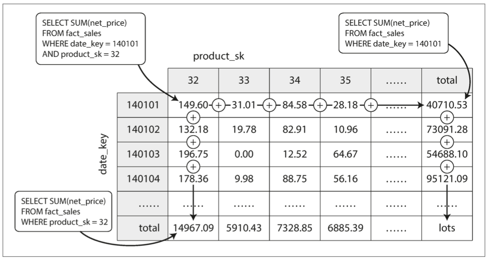
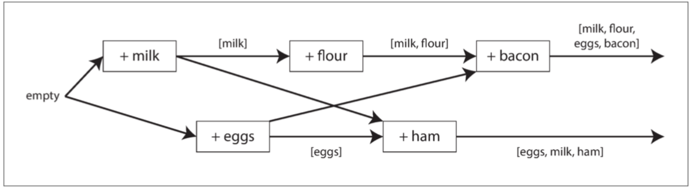
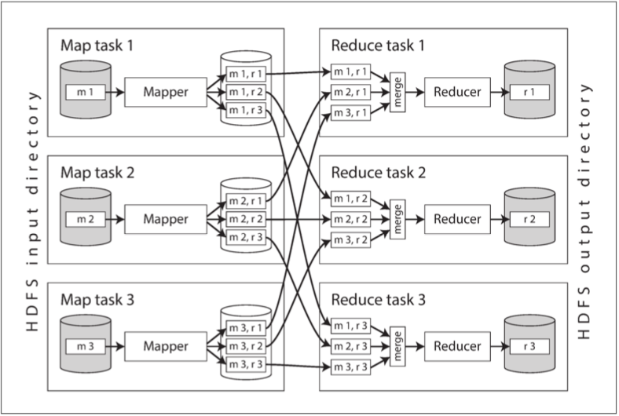
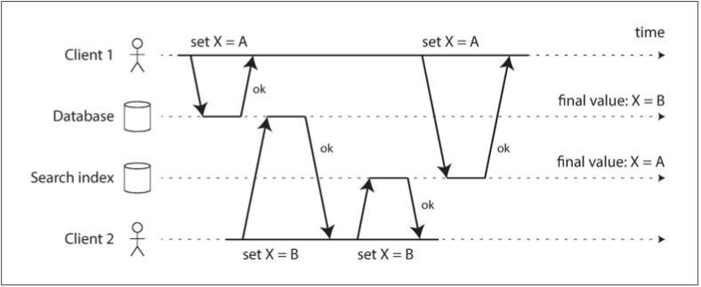

数据密集型应用系统设计 - Designing Data Intensive Applications
数据密集（Data-Intensive）与计算密集（Compute-Intensive）是当今两大负载类型。前者以大数据为代表，后者以深度学习和 HPC 为主要代表。
谨以本书献给那些追逐梦想的人们。
[另一个电子版本。][1]
前言
数据密集型应用要处理的瓶颈往往是数据的规模、数据的复杂度和数据产生与变化的速率；与之对应的是计算密集型应用，CPU 往往成为其瓶颈。
本书是关于数据处理系统及其相关技术的（NoSQL、消息队列、缓存、搜索引擎、批处理和流处理框架）。
每一种技术都基于一定的设计理念，而且只适用于特定的场景。
不要过度优化。
数据系统基础
可靠、可扩展与可维护的应用系统
现在的典型系统架构已经很明确了，因为业界已经有成功的案例，对这些组件做了很好的抽象，我们只要做好拿来主义就行了。
可靠性（Reliability）
fault tolerance 和 resilience 是系统的容错的体现。
硬件故障
对于大型 IDC，即使磁盘的 MTTF 很高，磁盘数量大了以后，每天发生磁盘损坏也是正常的事情。
硬件容错的方案是制造冗余（冗余磁盘、冗余电源）。
软件容错是第二种方式。
软件错误
软件错误可以被认为是 bug。检查 bug 的方法就是不断地做契约检查、测试。
人为失误
运维错误是系统下线的首要原因。
常见的做法有：
- 以最小出错的方式来设计系统。
- 想办法分离最容易出错的地方、容易引发故障的接口。
- 充分的测试。
- 当出现人为错误时、提供快速恢复机制。
- 设置详细而清晰的监控子系统，包括性能指标和错误率。
- 推行管理流程并加以培训。
可扩展性（ Scalability）
如果系统以某种方式增长，我们应对增长的措施有哪些。
描述负载
Twitter 的例子
Twitter 的高扇出（fan-out）的结构：
2011 年时：
- 用户发送 tweet 可以 达到 12k request/sec
- 用户有 300 k request/sec 的 home timeline 的读请求
用户有不同的扇出结构，决定了他们的潜在写放大的系数。
对于 home timeline 的读，有两种方式可以获取所有内容：
lazy 方案
这个方案是基础方案，基于 MySQL 的联表查询。
每次每个 follower 读取自己的 home timeline 时，首先 join 自己的 follows 表里的 followee（通过 user_id = follower_id），然后用 followee 去 join user 表（ 通过 followee_id = user_id 这一步其实可以省略），然后用 user 表去 join tweets（通过 user_id = sender_id）。
这种 join 方法可以通过 server side join 来优化，但本质上还是逐步联表。每次做联表查询的时候 join 一次。
如果有必要，这里还可以把 join 的结果缓存起来优化频繁刷新的场景。
这种方法的缺点是，读取大量数据时老老实实地联表查询过多，性能不好。
eager 方案
这个方案是性能优化方案，基于动态创建的广播队列。
每次每个 followee 发送 tweet 时，会先插入数据到 tweet 表里，然后通过广播的方式把这个 tweet 插入到每个 follower 的一个总的 tweets 列表里。在架构抽象这个列表是一个 mail box，这个列表可以是数据库，也可以是缓存的 list，也可以是 mq 的 topic/consumer。因为 mq 的 topic/consumer 不适合多对多的生产者和消费者的映射关系，而且动态创建 topic 的成本也很高。缓存的 list（如 redis 的 list）的创建销毁成本很低，很适合这种场景。
这种方案的优点是比方案 1 性能高两个数量级。联表查询的性能比较差，很容易达到自身的执行瓶颈，不容易scale out；而 broadcast 的 scale out 以后性能比较好，但如果 fan-out 很大的话，broadcast 的时间会非常长，但本质上 broadcast是一种复制方案，复制方案的瓶颈极高。
因此 Twitter 最后的解决方案是先对大多数 followee 的 tweets 采用方案 2，而对于 fanout 特别多的 followee 的 tweets 使用方案 1。为什么？因为动态大规模 eager 写的成本太高了，并不是每个名人的粉丝都想读到这些信息。
用户最终看到的内容，始终是方案 2 和方案 1 延迟合并（merge）的结果。方案1的 lazy 性对于 celebrity 用户的访问是有离散性的，对于方案1还可以使用一个复制副本的方式来提高主动查询（搜索）场景的性能。
这个例子可以应用在非常多的 OLAP 场景内：即对于大数据量的数据汇总查询，我们可以优先采取 eager write 或者 broadcast 的方法在写事务的时候插入汇总数据；然后对于 fan-out 特别高的数据，在查询的时候 lazy 查询。
选择方案时，需要考虑的因素主要是写成本比较高，还是读成本比较高：
- 如果全量写的不会被全量读（明星扇出效应实在太高，却并不是每个 follower 都去读），而写成本很高的话，不如用 lazy read。
- 如果读的场景很高，联表查询出现的比例很高，则适合 eager write。
描述性能
批处理系统更看重吞吐量，即每秒处理的记录数；而在线系统更看重响应时间，即客户端从发送请求到接收响应之间的时间差（response time = server side latency + communication overhead）。响应时间不是一个固定的数字，而是一个可度量的数字分布。
我们可以用平均值来说明一些问题，但更多的情况下关注分布，我们使用百分位数（percentile），如 p50、p90、p95、p99。亚马逊使用 p999 来定义起内部服务的响应时间标准。
定义 SLA 有助于我们确定我们的标准，我们要为**最慢的响应（tail latencies 长尾效应）**优化到什么地步（百分位越高，越难优化）。
排队延迟往往在百分数响应时间中影响很大。因为服务器并行处理的请求优先，正在处理的少数请求可能阻挡后续的请求。这被称为队头阻塞。做负载测试的时候不要等待队头阻塞（无意中缩短队列长度），要尽可能多地发送请求。
实践中，总是会使用滑动窗口来持续监控性能变化。
在实践之中，最慢的响应，决定了用户的 RT。
针对特定级别负载设计的架构不太可能应付超出预设目标 10 倍的实际负载-引入 APM 监控非常重要。
在多台机器上分配负载被称为无共享架构。这种架构易于水平扩展。如果服务负载高度不可预测，则引入自动的弹性扩展是好的，否则手动扩展更能处理意外情况。
超大规模的系统往往针对特定应用而高度定制，很难有一种通用架构。背后取舍的因素很多，如数据读写量、复杂程度、存储量，响应时间要求。
对特定应用而言，通常我们要做出某些假设（在可用性、一致性上做假设，如单元化场景下的弱一致性假设），有所取舍，才能在我们需要获得进展的方面取得结果-我们应该只优化最频繁的操作，或其他亟需我们优化的操作。
**可扩展架构通常是从通用模块逐步构建而来，背后往往有规律可循。**本书将讨论通用模块和常见模式。
可维护性
软件的成本在于整个生命周期内持续的维护。而遗留系统总有其过期的原因，很难给出通用的优化建议。
可维护性可以被分为三个方面：
- 可运维性：运维/运营/SRE 团队易于保持系统平稳。
- 简单性：新的工程师能够轻松理解系统。
- 可演化性：能够轻松对系统改进
可运维性
运维团队可能有很多操作，数据系统设计可以提供如下便利：
- Observability
- 文档
简单性
大泥球应用除了功能以外，还提供很多额外意外的复杂性。这种意外的复杂性是可以消除的-而不必减少功能。
消除复杂性最好的手段之一就是抽象。抽象可以隐藏大量的细节，而且可以对外提供干净、易懂的接口。-接口是很多人的系统里最简洁的部分了，单一职责、接口分离是我们必须强调的。
可演化性
易于修改的系统，易于演化。我们总是处在不断变化的需求中。
数据模型与查询语言
语言的边界就是世界的边界。-《逻辑哲学论》
大多数程序都是通过一层一层叠加数据模型的方式来构建的（如网络协议中不同层使用不同的包）。
不同的数据模型支持的操作不一样，有的操作很好，有的操作很不好-数据结构决定算法，数据结构加算法等于程序。精通一种数据模型需要很大功夫。
关系模型与文档模型
历史
Edgar Codd关系型数据库的核心用例最初是商业数据处理，曾经出现过网络模型和层次模型等不同的范式作为竞争对手，但最终关系模型成为最终的赢家。
在关系模型里，relation 最终被当作表，行即元组。
NoSQL 是关系模型的有力竞争者，最初出现在 Twitter tag 里。它用 schemaless 换取了表达能力的提升，sharding 和 replica 换取了 scalability 的提升。
NoSQL 对 OO 的编程语言的适配性更好。
Linkedin profile 的例子告诉我们，education 和 position 对 user 而言是多对一的关系，可以建模为单独的行，也可以建模为嵌套的文档-因此可以使用 json document 来标表示（这可以转化为 json tree），也可以用关系型数据库的 xml/json 类型来表达。但行业、地区等全局的常量数据，则比较适合用单独的表来存放，使用 id 来引用，而严重不适合冗余存放。
不变的业务 fk、物理 fk 适合冗余，而时间/状态则不适合冗余。冗余可以减少联表查询的复杂度，但也会增加 update 的难度。
IBM 的 IMS 是最初的层次模型，可以很好地处理一对多问题，但不能很好地处理多对多问题-这种困境近似于现在文档数据库遇到的困境。
网络模型的代表是 CODASYL。在 CODASYL 里面每层有多个父节点，因此实现了多对多。在这种模型里，外键是指针，指针不是外键。这种模型按照路径遍历非常麻烦，更新也非常麻烦。
而使用了关系型数据库后，查询优化器会根据索引和表间关系，来生成“访问路径”-也就是执行计划。查询优化器是是一个被持续优化的怪兽。
文档数据库是某种意义上的层次模型-父文档保存了子文档。
文档型数据库的优点：性能更好，模型更像是程序自己的数据结构，适合一对多模型。
关系型数据库则强在 join、多对一和多对多的表达上。但，只要文档数据库可以通过标识符来引用其他文档，则文档数据库的表达能力并没有因而减弱。
如果原始数据有类似树型/层次/文档的复合结构，则比较适合使用文档数据库；否则应该对数据进行分解（规范化），得到关系型数据库的表。
通常，关系型表的数据结构相关的代码是更复杂的。但，如果需要引用嵌套的数据，则嵌套层次越深，文档型模型越不好用。
通常情况下，流式/批处理框架/消息队列里的 event，也适于使用文档数据库。事实上，除了订单系统里的订单/子订单以外，应该大量数据模型都可以放进文档型数据库里。
如果确实需要 join，则文档数据库的弊端就出现了。反范式化很难维护一致性，而且程序的流程会变复杂，流程变差了。
总而言之，关联性越高和数据库选型的关系是：文档型（如 MongoDB；可搜索嵌套 doc 的 ES）→ 关系型 → 图数据库（Neo4j / Neptune / JanusGraph）。
模式灵活性
应该说，文档型数据库有模式灵活性，它支持读时模式（与之相对地，关系型数据库支持的是写时模式）。文档型数据库往往不在写时执行强制模式校验，读时的兼容性必须由读时的应用程序来保证。
关系型数据库因为执行写时校验，所以出现模式变更时，往往需要成本很高的 migrate 操作。
如果外部模式很多，或者模式很易变-最典型的例子，配置型数据，则很适合使用文档型数据库；反之，关系型数据库则要被派上用场。模式的害处在于，它不易于变动。
写时模式 (Schema-on-Write)：数据的结构（模式/Schema）在数据被写入数据库时就被严格定义和强制执行。
读时模式 (Schema-on-Read)：数据在被写入数据库时没有强制的结构要求。数据可以以任何（通常是文档形式）存入。数据的结构（模式）是在数据被读取时才被解析和应用。
数据局部性与性能
文档型数据库还有一个缺点，就是对它更新，需要原地重写，写的开销很大，可能引起存储问题。
举例：ES 是新版本文档重写。
融合的趋势
关系型数据库和文档数据库的融合是大势所趋。当代的 RDBMS 已经可以很好地处理 XML；而一部分的文档型数据库则可以在查询时支持 join（mongo 是在 client 端支持的，这种方案性能不够好，但支持也比不支持强）。
数据查询语言
数据库里的查询语言
SQL 其实是种声明式查询语言，而 CODASYL 实际上是命令式。
命令式的查询语言，会把查询过程 HOW 写出来（所以我们经常做的客户端查询，都是命令式的查询），告诉计算机，要按照怎样的特定顺序，执行某些操作（第三步可以被扩展，扩展为 map reduce 的不断串联/并联执行）。
而声明式的查询语言，只会把 what 写出来（LINQ 最为明显），指定查询哪些模式，满足哪些条件，需要做怎样的数据处理/聚合。剩下的查询过程，由查询优化器来推导。
声明式的语言都有一个特性，就是无法/也不需要指定执行的流程的细节，这给了编译器/运行时重排执行流程，甚至并行化执行的机会。-声明式其实是一种高级抽象，能够实现复杂查询流程的数据库，才能提供很漂亮的声明式查询语言，这体现了架构设计的一种取舍。
MongoDB 里面的 AST 式的查询语言，本身只是重新发明了一遍 SQL 罢了。
web 领域的查询语言
即使只在 Web 领域，CSS 代表的声明式语言，也比 JavaScript 代表的命令式查询要优雅很多。
MapReduce 查询
MapReduce 起源于谷歌，MongoDB 和 couchDB 等文档型数据库也部分支持 MapReduce。
map 是函数式编程里的 collect，而 reduce 则是 fold 或者 inject。
MapReduce 不是声明式查询语言，也不是一个完全命令式的查询 API，而是介于两者之间：查询（及处理）的逻辑用代码片段来表示，这些代码片段会被框架来重用（代码片段的设计思路，也被用于 Stream 这项新兴技术中）。通常我们使用 map 来生成逻辑 KV，然后用 reduce 对相同的 Key 的 value 进行聚合处理。
map reduce 我们使用纯函数，因为没有副作用，所以纯函数的顺序和执行为之是非常自由的。
MapReduce 实际上是一种偏底层的编程模型，需要执行在计算集群上（否则性能并不好）。SQL 是极高层的计算模型，可以通过 MapReduce 来间接实现。当然，这两者之间并不必然有关系。
图计算模型
多对多模型是不同数据模型之间的重要区别特征。关系型数据库只适合处理简单的多对多关系，复杂的多对多关系需要使用图模型。
图包括顶点和边，常见的图有：
- 社交网络
- Web 图
- 公路或铁路网
图的强大之处在于，它不仅可以存储同构数据，它提供了单个数据存储区中保存完全不同类型对象的一致性方式。
有多种不同但相关的方法可以构建和查询图中的数据，常见的图有属性图（property graph）和三元存储模型（triple-store），相关的查询语言有三种：Cypher、SPARQL 和 Datalog。
图计算模型比关系型数据库或者 CODASYL 更加自由，不需要指定 schema，而任何顶点都可以和其他顶点互联。
属性图
在属性图中，每个顶点包括：
- 唯一的标识符
- 出边的集合
- 入边的集合
- 属性的集合（键-值对）
每个边包括：
- 唯一的标识符
- 边开始的顶点（尾部的顶点）
- 边结束的顶点（头部的顶点）
- 描述两个顶点间关系类型的标签
- 属性的集合（键-值对）
把这两种定义转化为 SQL，可以得到两张表：顶点表和边表。
1 | |
关于图模型还有一些值得注意的地方：
- 任何顶点都可以连接到其他顶点。没有模式限制哪种事务可以或者不可以关联。
- 给定某个顶点，可以高效地得到它的所有入边和出边，从而遍历图，即沿着这些顶点链条一直向前或者向后。
- 通过对不同的类型的关系使用不同的标签，可以在单个图中存储多种不同类型的信息，同时仍然保持整洁的数据类型。-传统的关系模型难以表达不同国家的不同地区结构和颗粒度。
图是易于演化的，可以动态地往图里添加功能，图可以很容易适应并扩展。
图是一种前程远大，应用场景广泛的技术。
Cypher 查询语言
Neo4j 是从黑客帝国里诞生的概念，Cypher 是另一个（和密码学里的 Cypher 恰巧同名），这两个名词都是从人名里诞生的。
我们可以先创建库和数据：
1 | |
相应的查询语句是这样的：
1 | |
这里的式子分两层：第一层在右边，表明这是任意一个处于特定地点的地点，而第二层在左边，表明这是和第一层变量相关联的顶点。person 是一个待求值的变量。
遍历有两种基本思路：
- 从每个 person 开始，沿着出边过滤。
- 从 us 和 eu 这两个顶点开始，沿着入边过滤。
使用声明式的查询语句，可以让查询优化器自由地决定执行策略。
同样地，我们可以用关系型数据库来表达图数据库。但通常， SQL 查询要求我们能够制定 join 的次序和数量；对于图查询，join 操作的数量不是预先确定的。这种不能确定 join 顺序和次数的查询，容易诱发 SQL 的反模式。
WITHIN*o.. 的意思是，沿着 WITHIN 边，遍历 0 次或多次。
在 SQL 1999 中，查询这种可变的遍历路径，可以使用被称为递归公用表表达式（即 WITH_RECURSIVE 语法）来表示。
1 | |
从这个例子可以看出来，SQL 不如 Cypher，SQL 不具备找到一行记录后自递归的方法。
三元存储与 SPARQL
三元存储模型几乎等同于属性图模型，他们只是用不同的名词来描述了相同的思想。
在三元组中，所有信息都以非常简单的三部分形式存储（主语，谓语，客体）。
- 三元组里主体相当于顶点，谓语和宾语相当于 proerpties 中的 key 和 value。
- 三元组中的主体相当于顶点，谓语是途中的边，客体是头部顶点。
语义网
Datomic 是一个三元组存储（其实是五元组，带有 2 元版本数据）。语义网（Semantic Network）不是三元组，语义网本身没有靠谱的实现，从未实际出现。
SPARQL
SPARQL（音“sparkle”）出现得比 Cypher 早，Cypher 的模式匹配是借用 SPARQL 的。
Datalog 出现得更早
Datalog 出现得更早，为 Cypher 和 SPARQL 奠定了基础。它是 Datomic 的查询语言。Datalog 是 Prolog 的一些子集。
小结
数据的模型发展的脉络，不过是：
树型 -> 文档 -> 关系模型 -> 图
关联越多，越适合使用后面的数据库。关系模型的平衡性最好，可以模拟其他数据模型。从这个顺序来讲，文档模型是关系模型在复杂性上的退化/或者简化。但唯有关系模型是强制使用模式的。
如果需求不断变化，模式可能不断变化，应该尽量选择无模式的数据模型。
每种模型都有自己的查询语言和框架。
这些模型在实现的时候，需要做一些权衡取舍。
数据存储和检索
从最基本的层面看，数据库只做两件事情：向它插入数据时，它就保存数据；之后查询时，它应该返回那些数据。
作为应用开发人员，我们大多数情况下不可能从头开始实现一个自己的存储引擎，往往需要从现存的存储引擎中选择一个适合自己的。其他针对事务型工作负载和针对分析型工作负载的存储引擎存在很大的差异。
我们将研究关系型数据库和 NoSQL 数据库，我们将研究两个存储引擎家族，即日志结构的存储引擎和面向页的存储引擎，比如 B-tree（B-tree 是页的组织）。
数据库核心：数据结构
数据存储里通常有三种数据结构：日志、页和索引。
日志
许多数据库内部都使用日志，日志是一种只支持追加式更新的数据文件。**一个数据库还要处理其他问题：并发控制、回收磁盘空间、错误处理和部分完成写记录等。**但日志始终是一个很有用的机制，被用在很多地方-崩溃恢复、数据复制。
索引
在日志里面查找结果是不好的，所以引入第二种数据结构-索引。
索引的基本设计思想是，在原始数据上派生额外数据结构，在索引上保留关键数据或者元数据，作为路标，帮助定位想要的数据。
不同的索引支持不同的搜索方式。
索引必然导致写性能下降，因为索引很难使用追加写，但追加写是性能最高的写入方式。
哈希索引
KV 结构随处可见，是构造更多更复杂索引的基础构造块。如，继承/封装 hashmap 是常见的存储方法。
一个特别简单粗暴的例子：Bitcask 的存储格式，使用 CSV 来存储 kv 值，使用 hashmap 来存储 key 和文件系统里的 offset 来充当索引。
我们不能只依赖于一个数据文件，这会导致磁盘空间耗尽-所以我们对大规模存储应该采取分段的形式。
但使用多段数据，往往意味着数据需要压缩。压缩可以让段变小，因为段被合并后就不会再被修改，所以很适合放进新文件里。这样可以把旧文件段留出来，提供读写支持。
每个段都有自己的内存哈希表。-这里引出了一个范式，一段数据，到底在内存里是怎么被组织的，在硬盘里又是怎么被组织的，可以完全不一样。
这个方法是最简单的方法。但要在实践中行之有效，还要考虑如下问题：
- 文件格式：CSV 不是最佳的文件格式，二进制才是。
- 删除记录：如果要删除键和值，在日志里追加一个删除日志是简单的做法（墓碑）。墓碑会让记录在被合并时删除键值的实际内容。
- 崩溃恢复：从头到尾读取日志是一个方法，快照内存里的 hashmap 是另一个方法-这和 RDB/AOF 的设计思想是很像的，快照可以加速崩溃恢复，快照本身就是 compaction 过的值。
- 部分写入的记录：文件要加上校验和。
- 并发控制：只有一个写线程追加写入（类似 log4j 的设计），多个线程并发读-单线程后台消费是一种解决并发问题的基本思路。
为什么要使用追加写，而不是原地更新？这应该是几乎所有的存储使用日志配合数据页的解决方案需要回答的问题。
- 追加的顺序写性能好。
- 顺序写的并发控制和崩溃恢复会简单得多-只有一个数据文件很难处理脏数据和正确的数据。
- 有了文件合并，可以减少数据文件本身的碎片程度-所以数据文件本身还是 要紧凑，不能作为写的中间文件。
内存里的 hash 表有什么缺点？
- （因为装填因子的存在）内存利用率不高。
- 区间查询效率不高。
目前只有 Mongodb、MySQL（ENGINE=MEMORY）、PostSQl（CREATE INDEX idx_hash ON table USING HASH (column);）。
SSTables 和 LSM-Tree
SSTables 是排序字符串表，以它优化 Bitcask 的例子的话，会产生如下变化：
- 每个的日志段里只能存在一个 key 的最新 v 值，不按照它们的写入顺序排序，而按照 key 的字典序排序，每个 key 只出现一次（这就像 TreeMap 了）。-一个 key 的多个值存在多个段里。
- 段按照特定的时间段（生成时间）顺序排序，这也就意味着 compaction 多个段的时候，可以按照时间的顺序读取同一个 key，只保留某个 key 的最新值，丢弃其他段里的其他值。
- 在内存里保存的索引不需要指向所有的 key value 值，只要能够找到特定的段上的区间起止值，就可以找到特定的段上的最新的 kv，这样我们可以得到一个稀疏的索引。
- 我们的值写入永远都是随机写入的，相关的存储引擎是这样工作的：
- 写入先写入内存中的平衡数据结构（通常是某种平衡树，如红黑树），这被叫作内存表（Mem table）。
- 当内存表的大小达到某个阈值以后，将其生成一个 SSTable 写入磁盘中，然后再生成下一个内存表继续供写入（这应该是一个原子切换）。
- 如果有读操作，先在内存表里查找，然后按照写顺序查找最新的磁盘段文件、次新的磁盘段文件，以此类推，直到找到目标（或为空）。
- 后台周期性地执行段合并与压缩过程，以合并多个段文件并丢弃那些已被覆盖或者删除的值。
- 为了防止数据库崩溃，也要准备 WAL。WAL 使用纯粹的追加写，而不是排序写（这样的性能最好）。一段日志对应一段 WAL。
上述算法实质上是 LevelDB（Riak）和 RocksDB 所使用的，可以嵌入其它程序中提供 KV 存储。这两个引擎都受到 Google 的 BigTable 论文的影响（它引入了 SSTable 和 Mem table 两个术语）。
这种索引结构由 LSM-Tree 命名（这一章可能总体上被称作 LSM-Tree 算法）。Lucene 也使用类似的方案存储 term 和相关的 doc。
**总有很多细节，值得深入优化。**如果有个 Key 找不到，则 LSM-Tree 算法的表现可能很慢。这样可以引入布隆过滤器，近似计算集合的内容。
还有其他的策略可以影响甚至决定 SSTables 压缩和合并时的具体顺序和时机。最常见的方式是大小分级和分层压缩。分层压缩是 LevelDB 和 RocksDB 使用的策略，HBase 使用大小分级，Cassandra 同时支持这两种压缩。
在大小压缩中，较新的和较小的 SSTables 被连续合并到较旧和较大的 SSTables 里。
在分层压缩中，键的范围分裂成多个更小的 SSTables，旧数据被移动到单独的“层级”，这样压缩可以逐步并行并节省磁盘空间。
LSM 的基本思想（保存在后台合并的一系列 SSTable）足够简单有效。即使数据集远远大于可用内存，它仍然能够正常工作。由于磁盘是顺序写入的，LSM-Tree 可以支持非常高的写入吞吐量。

要实现上面的结构，要特别考虑各种写操作的并发安全性，高性能还在其次。
- R-B Tree 就是 MemTable 的一种实现，不是“先 R-B Tree 再变成 MemTable”。
- Bloom 过滤器是 SSTable 的附属结构，不是 MemTable 的。
- SSTable 不是“类 TreeMap”，它是不可变、排序的磁盘文件，TreeMap 是内存结构。
- WAL 和 SSTable 是并行存在的，不是“WAL 变成 SSTable”。WAL 是崩溃恢复用，SSTable 是刷盘后用。
B-tree
log-structure 日志索引结构正在逐渐受到更多的认可，但目前最广泛使用的索引结构是 B-tree。
从 1970 诞生以来，B-tree 经历了长久的时间的考验，时至今日，它仍然是几乎所有关系型数据库中的标准索引实现。
B-tree 也按 Key 对键值对排序（证明这个特性极端重要，对于存储而言，区间查找的重要性超乎想象地有用，这也是为什么 hash 类的存储结构使用场景不广泛的原因）。
B-tree 首先把数据库分解成固定大小的块和页（因为操作系统通常使用块作为名称，所以数据库经常使用页），这样更接近底层硬件的设计。页是内部读写的最小单元。
每个页面都有自己的地址。
B-tree 中一个页所包含的子页引用数量称为分支因子（branching factor）。这种设计使得 B-tree 在 O(logn) 的深度上保持平衡。（如果使用 B+ 树）一个分支因子为 500（通常应该为几百）的 4kb 页（InnoDB默认页大小是16kb）只要 4 层就能够存储 256tb 左右的数据。
如何使 B-tree 更可靠？
对 B-tree 的底层写操作基本上是使用新数据来代替磁盘上的旧页，（通常）这不会改变该页的磁盘存储位置。这与 LSM-tree 形成鲜明的对比，后者只是追加写（实际上在 SSTable 内部还是排序更新文件，但总体上是追加写），新旧替换的操作发生在后台线程的 compaction 里。
为了做崩溃恢复，B-tree 当然还是需要引入 WAL（而且 WAL 也会进化，从 binlog 进化到 redo log）。
如果要原地更新数据页，还要考虑并发控制问题，所以需要考虑锁存器（一种轻量级锁）；相比之下，日志结构化的方法先显得更简单了，因为它的实际原地更新是在后台发生的。
如何优化 B-tree？
- 引入 COW，SNAPSHOT Isolation + 锁。
- 保存 key 的缩略信息，节省页空间，这样树具有更高的分支因子，从而减少层数（这就引入了 B+ 树）。
- 尽量让相邻的页在磁盘上尽量连续。
- 在叶子上添加额外的指针，这样寻找兄弟不需要找 parent（这也是 B+树的特性）。
- 分形树引入了一些 log-structure 来减少磁盘寻道。
对比 B-tree 和 LSM-tree
LSM-tree 的优点是什么？
通常认为，LSM-tree 对写入更快，而 B-tree 对读写更快。当然，真正的性能表现只能选取特定的 workload 进行负载测试才能看出来。
磁盘的总带宽是有限的，SSD 的可擦除写的次数是有限的，所以日志结构的写入可能带来的写放大值得关注，至少 compaction 可能降低初始写入的性能。
因为 compaction 的存在，所以 LSM-tree 的的碎片比 B-tree 要少，所以磁盘上的文件通常要更小。这个结论未必对，因为 LSM-tree 里面是存在重复的键值对的，B-tree 没有这种重复的成本。
LSM-tree 的缺点是什么？
compaction 会影响正在进行的读写操作。如果初始写入吞吐量很高，则压缩可能不能真正匹配上它的写入速率。
通常我们不能限制初始写入的速率。
因为多副本的存在，LSM-tree 不具备 B-tree 能够简单地锁住记录而提供事务功能的优点。
其他索引结构
索引包括：
- 主键索引
- 二级索引：值得关注的是 posting-list，或者追加唯一标识使二级索引成为唯一索引的场景。
B-tree 和 log-structure 都可以拿来实现二级索引（甚至主键索引）。
索引中存储的要么是值，要么是堆文件的位置信息。堆文件才是真正存储数据的地方。
有了堆文件，只是更新值而不变更键，可以触发原地变更，否则需要牵扯到更多的文件修改和指针值修改。
但从索引到堆文件的额外跳转意味着太多的性能损失，所以聚集索引是很重要的。但创造聚集索引的次数是有限的，**聚集索引和非聚集索引之间的折中是覆盖索引。**覆盖索引只通过索引就可以回答某些简单的查询。
如果要同时查询多个列的信息，需要引入多列索引，但普通的多列索引在处理复杂的二维搜索的时候可能出现索引跳跃的问题：
1 | |
这种时候可能需要引入专门的空间索引（SPATIAL index），如 R 树（PostgreSQL 支持 R 树查询）。
如果我们使用模糊索引，可以在某个编辑距离内搜索特定的文本。
我们很多数据结构设计起来都是为了适应磁盘的限制（注意，这里的磁盘和 SSD 是两样东西），比如 B+tree 的深度和链表结构就是为了适应访问文件块的次数和寻道时间。我们之所以使用磁盘，有至少几个原因：
- 磁盘可以持久化数据。
- 磁盘的成本比内存低。
- 磁盘上的文件更加容易使用外部工具运维-因为已经在进程之外了。
但如果没有磁盘的限制，我们可以得到极大的性能提升。这种内存提升不是因为磁盘的性能比较差，而是因为避免了用写磁盘的格式对内存数据结构进行编码的开销。因为只要内存足够大，虚拟内存可以使用磁盘的存储引擎充分利用内存。但如果可以自由地使用数据结构，像 Redis 一样的方案可以提供很多样的实现。
有一种类似虚拟内存的页内存管理机制的方案，anti-caching。反缓存把足够冷的记录交换出内存，写入磁盘，再需要时再单独取回。这个方案比页式内存管理好的地方是，颗粒度更低，比操作系统管理内存的方案更有效。
如果将来 NVM 技术得到普及，可能还需要进一步改变存储引擎设计。
事务处理与分析处理
事务是在商业数据处理中诞生的，主要指组成一个逻辑单元的一组写操作。广义的事务处理不一定意味着 ACID，只是意味着低延迟的读取和写入。
数据库被广泛用于处理业务交易，也被用于数据分析，这两种模式有显著差异：
- OLTP 基于键处理，每次查询返回少量记录，随机访问，低延迟写入，数据量小。
- OLAP 对大量记录进行汇总（aggregate），通常要搭配 ETL。
这两种模式都需要交互式响应。
SQL 非常灵活，被证明能够同时胜任 OLTP 和 OLAP。但从上世纪 90 年代初期开始了一种趋势，大企业放弃使用 OLTP 系统用于分析目的，而在单独的数据库上运行分析。这个单独的数据库被称为数据仓库。
数据仓库
企业可能有几十种不同的交易处理系统（Transaction Process System）。这些系统每一个都足够复杂，也每一个都非常重要，数据库管理员往往不愿意让业务分析人员在 OLTP 数据库上直接运行临时分析查询，这些查询代价很高，可能损害并发执行事务的性能-反之，隔离、专属数据库可以反过来保护并发事务的性能。
数据仓库里包含公司所有 OLTP 系统的只读副本，通过 ETL 流程导入数据。
几乎所有的大型企业都有数据仓库，但是在小型企业中却几乎闻所未闻。
单独的数据仓库，可以针对分析访问模式进行优化。值得注意的是，本章前半部分讨论的索引算法适合 OLTP，但不擅长应对分析查询。
OLTP 数据库和数据仓库之间的差异
有许多图形化的数据分析工具，它们可以生成 SQL 查询、可视化结果并支持分析师探索数据，例如通过诸如向下钻去、切片和切丁等操作。
数仓和 OLTP 系统的相似之处是：他们都有 SQL 接口。这也可以看出 SQL 作为声明式语言，抽象表达能力之强。
目前市面上有商业数据仓库系统通过商业许可销售系统，也有一些开源的 SQL on hadoop 的解决方案，正在逐渐流行。
星型与雪花型分析模式
不像事务处理领域广泛使用的不同数据模型，数据仓库在分析型业务上相当公式化地使用星型模型，也成为维度建模（dimensional modeling）。
模式的中心是一张事实表，事实被捕获为单独的事件成为事实表中的每一行；因为事实表在中央而维度表在四周，这个模式被称为星型模式。
每一行里都有很多属性，和引用其他维度表的外键；这些维度表通常代表事件的对象（who）、什么（what）、地点（where）、时间（when）、方法（how）以及原因（why）。
星型模式有个变体，其中维度被进一步细分为子空间——维度表之间还可以再进一步用外键互相引用，而不是冗余，这种更加规范化的形态叫做雪花模型；对于分析人员而言，雪花模型比星型模型更复杂，星型 → 雪花（边更多了？）。
在典型的数据仓库中，表通常非常宽：事实表常见 30–50 列，特殊宽表场景可超 100 列甚至数百列；维度表也可能非常宽，因为它们常把多级描述属性反范式地拼成一张大表以加速查询。
列式存储
如果事实表中有数亿乃至万亿行、PB 大小的数据，则高效地存储和查询这些数据将成为一个具有挑战性的问题；维度表则通常小很多，因此本节主要关注事实表的存储。
虽然事实表可能超过 100 列（特殊宽表场景），但典型的数据仓库查询往往一次只访问其中的 4 或 5 列。
在面向行的存储引擎中，若无法利用覆盖索引，引擎仍需把包含目标列的整页加载进内存——页内其余列也随之进入，解析后再过滤，造成带宽与缓存的浪费。
面向列的存储想法很简单：不再把一行中的所有值存在一起，而是把每列的所有值存在一起。
列式布局依赖一组列文件，每个文件按相同行顺序保存该列数据；这种按列切分的密集数组为后续压缩、编码及稀疏表示提供了对齐基础。
列压缩
除了仅从磁盘中加载查询所需的列之外，还可以通过压缩数据进一步降低对磁盘吞吐量的要求。列的值序列有很多重复的话，是压缩的好兆头。在数据仓库中特别有效的一种技术是位图编码（bitmap encoding）。
一列如果有 n 种值，则可以有 n 种位图，每个位图上的一位，代表一行在上面是不是有值。这样重复的字面量存储空间被减少到一个比特。而且可以使用游程编码，对于 WHERE product_sk IN (30, 68, 69) 这样的查询，可以找到对应值 30, 68, 69 的位图，对它们执行按位 OR 操作，得到的结果位图就标记了所有满足条件的行。
这个设计思想可以总结为：拿可枚举值作为位图数量（横向数据有限），事实数量（纵向数据无限）作为比特。
有一个常见的误解：Cassandra 和 HBase 都源于 BigTable，但它们使用列族，将行主键与列族的列存储在一起，并且不使用列压缩（因为他们不能简单实用位图来节省空间）。所以 BigTable 模型仍然面向行，可以被称作表格型 KV。
内存带宽和矢量化处理
面向列的存储有利于 CPU 利用内存带宽，而且快速矢量化处理。
列存储中的排序
在列存储中，行的存储顺序不重要，最简单的方法是按照插入顺序保存，这样插入一个新行只是追加到每个列文件。
但单独排序某一列没有意义，如果这样的话无法知道列中的某一项具体属于哪一行。如果我们知道某列中的第 k 项一定属于同一行，基于这种约定我们可以重建一行。
相反，即使数据是按列存储的，它也需要一次排序整行。
只要涉及到排序，我们就要考虑排序键。第一个排序键往往是最重要的，我们通常选择的排序键是日期之类的列，这类列 selectivity 最高。这样我们进行范围查找的时候，解空间可以一下子收敛到很小的范围，加快查找的结果。
一个列存储表会有一个主要的排序键（可能是复合的）。但确实可以为不同的查询模式创建不同的实体化视图（Materialized Views），每个视图可以有自己的排序键，这类似于为行存创建多个二级索引。
排序的另一个优点是，他可以帮助进一步压缩列。有大量重复值的列压缩率最好。第一列的压缩率最好，第二第三列的排序键的情况会更复杂。因为它们的值域里面相邻的重复值，可能因为归属于不同的第一键而被切割得七零八落-这就是局部簇聚性的局限了。
排序优先级进一步下降的列基本上会呈现接近随机的顺序，因此通常无法压缩。
几种不同的排序
面向列的存储具有多个排序顺序，这有些类似在面向行的存储汇总具有多个二级索引。但面向行的存储，行的数据只在一处，二级索引里保存的是指向行的指针；对于列存储，通常没有任何指向别处数据的指针，只有包含值的列。拥有多个维度的存储，对保持查询业务的高可用有一定帮助。
列存储的写操作
B-tree 使用原地更新的方式，必然会带来数据页的裂。而列式存储每插入一行就要更新所有列，代价更大，所以选择 LSM-tree 有其必然性。
通常列式存储在内存中使用的数据结构是面向行还是面向列的，无关紧要（这就是为什么可以使用一个 RB-tree 的原因）。
聚合：数据立方体和实体化视图
未必每个数据仓库都基于列存储（但数据仓库的事实表如果有几百列，又会倾向于使用列存储）。
我们通常需要使用聚合方法处理原始数据的很多列，每次都重新处理非常浪费时间。所以这诞生了两类解决方案：
- 实体化视图：将之前的查询结果缓存在磁盘上。我们常说的数据血缘表即是这种表。
- 虚拟视图：我们常说的 view，编写查询的快捷方式，隐藏了真实的细节，差异化地管控查询的细节- SQL on hadoop 就是为分布式文件系统设计的虚拟视图。
实体化视图的写入成本很高，但查询效果很好。所以数据仓库喜欢用实体化视图而 RDBMS 喜欢使用虚拟视图。
实体化视图的一种常见情况被称为数据立方体。
一个二维的数据立方体是这样的：每个事实只包含两个维度表的外键，每个维度是二维矩阵的一个方向，而二维矩阵格子是事实的完整属性。这样，我们可以沿着任意维度应用聚合操作，得到减少一个维度的总和。

注意，这个立方体里有一列专门的聚合列，产生了单一维度的聚合格子（这一列不能存储复合值，它必须从属于这一维度），这个聚合列才是加速的关键。
一般来说，事实表的维度不止五个。我们很难想象五维超立方体是什么样子的。我们可以简单想象一下：
- 数据存放在特定的格子里
- 格子上存储了它拥有的所有维度的外键
- 格子的内容就是维度1-维度2-维度3-…-维度 x 限定的事实属性
数据立方体针对某些查询会非常快，因为她已经被预先计算出来了。但它不能解决非特定维度聚合的问题，所以数据仓库还是必须存储原始数据。
小结
OLTP 面向用户，OLAP 面向业务分析师。
OLTP 方面，有两个流派的存储引擎：
- 日志结构流派，它追加更新，后台合并数据页。
- 原地更新流派（B-tree 不是一种流派），它原地更新数据页。
数据编码与演化
数据编码格式
编码模式要处理模式变化，才能兼容新旧系统和新旧数据。
向后兼容：新代码理解老数据。
向前兼容：老代码理解新数据。我们常说的新平台可以直接读老数据（比如 Java 平台和字节码的兼容性、windows和老 API 的兼容性），就是指的这个。现在向过去兼容往往是必须的，很常见；而现在向未来兼容只是基于一种假设，不常见。
程序通常使用（至少）两种不同的数据表示形式：
- 在内存中，保存在专门的数据结构中，使用指针优化 cpu 进行高效访问和操作的优化-使用指针。
- 在传输和存储时，将其编码为某种自包含的字节序列，由于指针对其他进程没有意义，所以这个字节序列看起来与内存中使用的数据结构大不一样。
从 1 到 2 被称为编码，从 2 到 1 被称为解码。
许多编程语言都内置支持将内存中的对象编码为字节序列。但它有种种缺点：
- 不利于异构系统集成
- 容易导致安全问题
- 不利于版本管理（进而处理向前兼容和向后兼容）
- 效率不高
因此我们产生了一些流行的格式，Json、XML 与二进制变体。这些格式处理数字、模式、二进制数据都有一些小小的问题。
明文是前后兼容性最好的格式，也是最不紧凑的格式。所以越是大数据量的场合，越要发明一些新颖的格式来解决容量问题。
三个例子
Thrift、Protobuf、Avro 是三种数据编码格式，也是3种IDL定义语言，可以通过工具生成不同语言的代码。
- Protobuf (Protocol Buffers)：主要专注于数据序列化。虽然它也支持定义服务（用于 gRPC），但其核心和最初的设计目标是高效的数据编码。
- Thrift：由 Facebook（现 Meta）开发，不仅支持数据序列化，还内置了对RPC 服务的定义和实现支持。它是一个更完整的跨语言服务开发框架的一部分。
- Avro：由 Apache 开发，同样支持数据序列化。它的一个显著特点是其 Schema（模式）与数据一起存储（在数据文件中）或在通信时交换，这使得它在处理模式演化（Schema Evolution）方面非常强大和灵活。Avro 也常用于 Hadoop 生态系统中。
数据流格式
**进程内通信是共享内存的通信；进程间通信是基于字节序列的数据编码通信。**我们编写程序时进行函数间调用，就是进程内通信；我们编写 API 进行服务间通信，就是进程间通信。
基于数据库的数据流
基于数据库的数据流要注意模式演化和兼容性问题。
基于服务的数据流：REST 和 PRC
服务器公开的 API 被称为服务，API 通常包括一组标准的协议和数据格式。Web 浏览器、服务器和网站作者都同意这些标准，所以可以使用任何浏览器访问任何网页。
Web 浏览器不是唯一的客户端，移动设备或者桌面计算机上的应用程序也可以向服务器发出网络请求。
此外，服务器本身也可以成为另一项服务的客户端。这种方法可以用于将大型应用程序按照功能区域分解为较小的服务，服务之间通过请求传递数据。这种构建应用程序的方式被称为 SOA 或者微服务架构。
SOA/微服务体系结构的一个关键设计目标是，通过使服务可独立部署和演化，让程序更易于更改和维护。
- RPC：关注动作或行为。客户端调用远程服务器上的一个“函数”或“过程”，就像调用本地函数一样。例如：getUserInfo(123) 或 CalculateTax(order)。接口设计围绕可执行的操作。
- REST：关注资源。服务器管理各种资源（如用户、订单、产品），客户端通过标准的 HTTP 方法（GET, POST, PUT, DELETE）对这些资源的 URI 进行操作。例如：GET /users/123 (获取用户), POST /orders (创建订单)。接口设计围绕资源及其状态。
网络服务
当 HTTP 被用作与服务通信的底层协议时，它被称作 Web 服务。
REST 不是一种协议，而是一种基于 HTTP 原则的设计理念。它强调：
- 简单的数据格式
- 使用 URL 来标识资源
- 并且使用 HTTP 功能进行缓存控制、身份验证和内容类型协商
REST 在微服务架构非常受欢迎。
相比之下，SOAP 是基于 XML 的协议，虽然它最常用于 HTTP，但其设计目的是独立于 HTTP，并避免使用大多数 HTTP 的功能。SOAP 相关的复杂框架通常是 Web Service Framework，被称为WS-*。因此它的 API 通常使用 WSDL 来生成代码，使用本地类和方法调用来访问远程服务。
SOAP 过于复杂，对于没有 SOAP 供应商支持的编程语言的用户来说，试图与 SOAP 服务集成非常困难。
远程过程调用（RPC）的问题
EJB、RMI、DCOM 和 CORBA，各有其局限性。
**RPC 思想试图使向远程网络服务发出请求看起来与在同一进程中调用编程语言中的函数或方法相同（这种抽象被称作位置透明）。**这种方法有根本的缺陷（我们无法克服这些分布式计算与生俱来的缺陷），网络请求与本地函数调用非常不同：
- 本地函数调用是可预测的，并且成功或失败仅取决于控制的参数。而网络请求不可预测，因此必须有所准备，重试所有的请求。
- 本地函数调用要么返回一个结果，要么抛出一个异常，或者永远不会返回（因为无限循环或进程崩溃）。网络请求返回时可能没有结果。
- 如果重试失败的网络请求，可能会发生请求实际上已完成，只是响应丢失的情况，这又要求我们建立重复数据消除（幂等性）机制。
- 调用本地函数的时间大致相同，而网络请求的耗时则不同。
- 调用本地函数有时候只要传输指针就行（有时候传递数据，或者说，针对复杂数据量传递指针，简单数据传递数据），而远程请求则必须全部传递数据。
- 客户端和服务端可能用不同编程语言来实现，所以 RPC 框架必须处理数据类型转换的问题。
RPC 的发展方向
RPC 的性能会更好，但 RESTful API 还有其他一些显著的优点：它有利于实验和调试，支持所有的主流编程语言和平台，并且有一个庞大的工具生态系统。
RPC 的数据编码和演化
如果 RPC 经常要用于跨组织边界的通信，维护服务的兼容性会变得更加困难。服务的提供者无法控制其客户，也不能强制他们升级。
管理 API 版本的方法有：
- 在 URL 或 HTTP Accept 头中使用版本号
- 使用 API 密钥来标识特定客户端的服务
- 使用单独的管理接口来更新 API 版本的选项
基于消息传递的数据流
消息是介于 RPC 和数据库之间的异步消息传递系统。客户端的请求通过低延迟传递到另一个进程中。
与 RPC 相比，消息传递有几个优点：
- 消息代理可以充当缓冲区
- 它可以自动将消息重新发送到崩溃的进程，从而防止消息丢失
- 它避免了发送方需要知道接收方的IP 地址和端口号
- 它支持将一条消息发送给多个接收方
- 它在逻辑上将发送方与接收方分离
与 RPC 的差异在于，消息传递通信通常是单向的。
消息代理
有一类的消息队列，有请求队列，也有回复队列。
分布式 Actor 框架
graph LR
A[Actor A] -->|发送异步消息| B[Actor B]
B -->|发送异步消息| C[Actor C]
C -->|回复消息| A
B -->|发送异步消息| B[Actor B]
style A fill:#c8e6c9,stroke:#388e3c
style B fill:#ffecb3,stroke:#ffa000
style C fill:#bbdefb,stroke:#1976d2
note1[每个 Actor：<br>- 有私有状态<br>- 通过邮箱接收消息<br>- 单线程处理，无锁<br>- 可创建新 Actor]
note2[消息：<br>- 异步、不可靠<br>- 无共享内存<br>- 通过地址（引用）寻址]Actor 模型是一种被用于单个进程内并发的编程模型，其核心思想是通过状态隔离与事件驱动来避免锁竞争：**。逻辑被封装在 Actor 中，而不是直接操作线程或共享内存处理线程。
每个 Actor 通常代表一个客户端或实体，拥有私有它可能有某些本地状态（不与其他 Actor 共享），并且它通过发送和接收异步消息与其他 Actor 通信。由于状态完全隔离，且每个 Actor 一次只处理一条消息，对内部状态的修改天然串行化，因此无需使用锁，从根本上消除了竞态条件和线程安全问题。
不保证消息传送：在某些错误情况下（如节点崩溃、网络中断），消息可能不保证消息传送：在某些错误情况下，消息将丢失。**，除非框架或应用层额外实现持久化与重试机制。
Actor 的执行由调度器独立管理，而不是像普通函数调用那样直接在调用者线程中运行，因此多个 Actor 可被高效复用少量线程，并由于每个 actor 一次只处理一条消息，因此不需要担心线程，每个 Actor 都可以由框架自动独立调度。
虽然与 Goroutine 表面相似，但二者模型不同：Goroutine 基于 CSP（通信顺序进程），通过 channel 共享通信；Actor 则强调封装与消息传递。
在分布式 Actor 框架中，这一模型被扩展到多节点：无论通信是否跨机器，都使用统一的消息传递机制和透明序列化，使分布式编程如同本地并发一样自然虽然很相似，但 Goroutine 不同于 Actor，它是 CSP 模型。Actor 和线程也不一样，Actor 的执行是被调度器独立管理的，而不是像普通函数调用那样直接在调用者的执行流中运行。。
在分布式 Actor 框架中，这个编程模型被用来跨越多个节点来扩展应用程序。不管通讯是不是跨界点，使用相同的消息传递机制，使用透明的编码。
分布式 Actor 框架实质上是将消息代理、容错调度与和 Actor 编程模型深度集成，提供位置透明性、弹性伸缩和故障隔离（如监督树）。
得益于其隔离性和无共享状态的设计，集成到单个框架中。
Actor 模型能可以很好地支持滚动更新：新版本 Actor 可逐步替换旧版本，而不会因状态共享导致不一致或停机。
小结
| 维度 | Message Broker (Kafka/RabbitMQ…) | Distributed Actor Framework (Akka/Orleans/Erlang OTP) |
|---|---|---|
| 核心抽象 | Topic/Queue → 字节流 | Actor → 状态 + 行为 + 邮箱 |
| 数据模型 | 无：消息 = 任意字节 + 元数据 | 强：每个 Actor 有私有状态，消息触发方法 |
| 消息语义 | At-least-once / at-most-once 由 Broker 提供 | 同上，但框架层重试 + 监督策略 |
| 位置透明 | 手动：生产者要显式知道 topic 名与分区 | 自动：ActorRef 就是地址，本地/远程对业务代码一样 |
| 并发单位 | 外部线程/RPC 调用 | 内部 mailbox → 单线程模型无锁 |
| 故障恢复 | 重投队列 / 死信队列 | 监督树：崩溃→重启→状态快照/热迁移 |
| 升级兼容 | 只要字节兼容即可 | 必须保证Actor 状态序列化前后向兼容 |
| 部署形态 | 独立中间件集群 | 应用进程内嵌运行时，Broker 能力被集成到框架 |
分布式数据系统
主要出于以下目的，我们需要在多台机器上分布数据：
- 扩展性
- 容错与高可用性
- 延迟考虑
系统扩展能力
我们让系统的成本增加一倍，处理数据的能力不一定增加一倍。
我们经常拿来垂直扩展的系统，由单个操作系统管理更多 CPU、内存和磁盘，通过高速内部总线使任一 CPU 都能访问全部内存或磁盘，这种架构称为共享内存架构（shared memory architecture）。
由于所有部件受同一内核管辖，任一 CPU、内存或主板故障即可导致整系统宕机，因此共享内存架构只能提供有限的容错能力。
另一种方案是共享磁盘架构（shared disk architecture）：多台服务器各自拥有独立 CPU 与内存，通过高速网络把数据存放在可被所有节点并发访问的共享磁盘阵列上（如 Oracle RAC、DB2 PureScale）。
无共享架构
采用这种架构（shared nothing）时，运行数据库软件的机器或者虚拟机称为节点。每个节点使用本地的 CPU、内存和磁盘，只通过网络通信。
采用 shared-nothing 时，运行数据库软件的机器或虚拟机称为节点；每个节点仅使用本地的 CPU、内存和磁盘，节点间没有任何硬件级共享。
本部分重点放在无共享体系，并非因为它必然最优，而是因为它要求开发者显式面对分布式复杂性——例如如何把数据分布在多节点、如何权衡副本一致性、如何进行分区容错——数据库无法魔术般屏蔽所有这些细节。
我们常见的“无状态服务+单实例数据库”模式在逻辑上更接近共享磁盘模型，但应用服务器并未直接共享块设备；而单元化架构在数据切片与故障隔离意义上更接近无共享模型，同时增加了业务层面的流量隔离与多活能力。
NAS 和SAN 属于共享磁盘方法。
复制与分区
将数据分布在多个节点上有两种常见方式：复制和分区。
在了解以上概念之后，我们会讨论分布式环境中错综复杂的权衡之道，很可能我们在设计系统时不得不面对这些艰难选择**（没有做过艰难选择，不能算是解决过很难的问题）**。
数据复制
数据复制是指在多台机器上通过互联网络保存相同数据的副本。
它有几个好处：
- 使数据更接近用户，降低延迟-CDN
- 提高冗余
- 读扩展（冗余提供了超量部署，读扩展也降低了延迟，负载和）
如果复制的数据一成不变，那么复制就非常容易：只需将数据复制到每个节点，一次即可搞定。然而所有的技术挑战都在于处理那些持续更改的数据。
目前流行的复制数据变化的方法有：
- 主从复制
- 多主节点复制
- 无节点复制
复制技术中存在许多需要权衡的因素，例如选择同步复制还是异步复制，以及如何处理失败的副本。
数据库复制是个很古老的话题，因为网络的基本约束条件，自始至终没有发生过本质的变化（计算机发展的早期就已经摸清楚了这些基本问题，而且推导出了问题的基本解法）。
实践中大多数开发人员仍然假定数据库只运行在单节点上，分布式数据库成为主流也是最近发生的事情（长久以来 MySQL 始终是个非分布式数据库，所以才有各种中间件方案）。
许多应用开发人员在处理分布式系统时经验不足，对“最终一致性”等概念存在误解。因此，在“复制滞后问题”中，我们会详细讨论最终一致性，包括读自己的写和单调读。
复制滞后是导致最终一致性等弱一致性模型的原因之一。
主节点和从节点
每个保存数据库完整数据集的节点称为副本。当有了多副本，不可避免地会引入一个问题：如何确保所有副本之间的数据是一致的？
- 指定某一个副本为主副本（或称为主节点）。当客户写数据库时，必须将写请求首先发送给主副本，主副本首先将新数据写入本地存储。
- 其他副本则全部称为从副本（或称为从节点）。主副本负责通过日志或者数据流把数据同步到从副本。
- 用户可以从所有副本读数据。主副本 RW，从副本 RO。
同步复制与异步复制
RDBMS 通常拥有多种同异步模式，而很多别的系统的复制模式是固定的。

上图的第一个节点显示了同步复制的工作流程，第二个节点显示了异步复制的工作流程。
同步的优点是，如果用户收到看 OK，则所有从节点 OK 了。同步复制的缺点是，如果有从节点阻塞，所有写入都会被阻塞（主从延迟是很常见的情形，所以同步复制产生的写阻塞会很频繁）。
实践中，如果数据库启用了同步复制，通常意味着其中某一个从节点是同步的，而其他节点则是异步模式。万一同步的从节点变得不可用或性能下降，则将另一个异步的从节点提升为同步模式。这样可以保证至少有两个节点（即主节点和一个同步从节点）拥有最新的数据副本。这种配置有时被称为半同步。
主从复制还可以配置为全异步模式，这样配置性能最高，但可能丢失所有尚未复制到从节点的写请求-这是后面要谈到的“复制滞后问题”的体现。
异步模式看起来不靠谱，但还是被广泛使用，特别是从节点数量巨大或者分布于广域地理环境。
复制涉及的问题非常复杂，多副本一致性和共识问题后续再讨论。链式复制（Chain Replication）能够兼容高吞吐和高可用的场景，已经应用在微软的 Azure 存储中。
配置新的从节点
新增从节点不能使用直接停机拷贝的方式，除非我们的主节点停写，直至拷贝完成。但停写的时间不能太长，否则高可用不能被保证。所以常见的做法是：
- 生成一个一致性快照，MySQL 使用 innobackupex。
- 将一致性快照应用（Apply）到从节点上。
- 从节点请求快照点之后发生的数据更改日志。这种日志的快照点位有特别的叫法，PostgreSQL 将其称为“log sequence number”，MySQL 将其称为“binlog coordinates”。
- 获得日志后，从节点来应用这些快照点之后的所有数据变更。
所谓的数据追平。我们要了解日志和快照的分割点在哪里。
处理节点失效
从节点失效：追赶式恢复
如果发生网络闪断，只要从节点明确知道故障之前处理的最后一笔事务，然后连接到主节点，请求从那笔事务之后中断期间所有的数据变更。
主节点失效：节点切换
节点切换，极度危险！
处理主节点故障的情况则比较棘手：选择某个从节点将其提升至主节点；客户端也需要更新，这样之后的写请求会发送给新的主节点，然后其他从节点要接受新的主节点的变更数据，这一过程称之为切换。
故障切换可以手动执行，也可以自动进行。自动切换的步骤通常如下：
- 确认主节点失效。一般基于超时的心跳机制。
- 选举新节点。一般基于共识算法选举新节点，需要选出和失效的主节点数据差异最小的从节点。
- 重新配置系统使新主节点生效。
在上述切换过程中还充满了各种各样的变数：
- 如果使用了异步的复制，新的主节点未必收到了原主节点的所有数据（任何一种共识算法都解决不了这个问题）。如果这时候新的节点收到了新的冲突的写请求，这时候可能产生脏数据。常见的解决方案（高可用）方法是：新的主节点丢弃未完成复制的请求，但这可能会违背数据更新持久化的承诺。-另一种强一致性的做法是，在新主和老主确认校验一致之前，禁止新节点的写。这种禁止对可用性伤害很高，如果校验长时间无法完成，集群会瘫痪掉。
- 如果在数据库之外有其他系统依赖于数据库的内容并在一起协同使用，丢弃数据的方案就特别危险。所以强一致性的数据（余额、序列号等交易因子业务）不能使用丢弃后写的数据方案。
- 在某些情况下，可能出现两个从节点都认为自己是新主节点，这种情况被称为脑裂。这非常危险，两个主节点都可能接受写请求，并且没有很好地解决冲突的方法（没有办法自动处理，可能需要引入手工处理）。作为一种安全应急方案，有些系统会采取措施来强制关闭其中一个节点。
- 如何设置合适的超时时间来检测主节点失效呢？主节点失效后，超时时间设置得越长也意味着总体恢复时间就越长。但如果超时时间设置得太短，可能导致很多不必要的切换，遇到网络流量暴增可能会让系统频繁切换而崩溃。-超时时间太长或者太短都是陷阱，至少应该让超时时间长于一个应用接口超时时延的 margin。
复制日志的实现
基于语句的复制
这是最基础的方案。
最简单的情况，主节点记录所执行的每个写请求（操作语句）并将该操作作为日志发送给从节点。
区块链的方案是：交易脚本+状态机，≠ SQL 语句回放。
但这种方案有诸多限制：
- 限制语句必须是确定性的语句。
- 语句本身不能依赖于本地现有数据（自增列），或者会限制所有语句的执行顺序。这实际上仍然会限制事务的并发执行-只有序列化执行能够无措执行。
- 有副作用的语句。
我们自己做 C/S 类型的数据同步，也可能采取基于语句的复制的方案，如果我们不能解决上面的问题，我们可能会遇到很大的问题。这就看出 Log-Structure 这种设计模式的重要了。
基于预写日志的复制
所有对数据库写入的字节序列都被记入日志，这种日志就是 WAL。WAL 的缺点就是它描述的数据结果非常底层，某些磁盘块里的某些字节发生了改变，会让复制方案和存储引擎紧密耦合。
基于行的逻辑日志复制
另一种方法是复制和存储引擎采用不同的日志格式，这样复制与存储逻辑剥离。这种复制日志称为逻辑日志。
MySQL 的 binlog 是这样工作的：针对一个事务，产生涉及多行的多条日志记录，并在后面跟着一条记录，指出该事务已提交。
因为 binlog 是逻辑日志，所以它不与存储引擎绑定，是 Server 层日志。 binlog 特别适合用来跨版本复制是它的一个优点，但不适合特种的存储引擎的问题恢复。
基于触发器的控制
这里的触发器可用内置触发器，也可写应用代码。基于应用层的程序比较灵活，也开销更高，而且也更加容易出错。
复制滞后问题（replication lag）
我们可以粗略地认为，分布式系统的一致性问题就是复制滞后问题。
主从复制要求所有的写请求都经过主节点。为了保证主从复制的写吞吐量，所以往往会开启异步复制。只要开启异步复制，都可能产生各种复制滞后，这也就意味着我们必然面对现实中的最终一致性。
故障和网络时延会导致一致性被破坏，而且比较需要在意的是，破坏了很多操作的因果关系，让我们的流程出错。
- 引入主从异步复制 → 冒「写后读」风险
- 引入多副本读负载均衡 → 冒「单调读」风险
- 引入分片写 → 冒「前缀一致读」风险
| 一致性级别 | 实时 | 全局顺序 | 因果顺序 | 人话一句 | 实现要诀 |
|---|---|---|---|---|---|
| 最终一致性 | × | × | × | 停写足够久，大家终一致 | 异步复制+后台合并 |
| 单调读 | × | × | × | 自己不会"时光倒流" | 副本粘性/读令牌 |
| 读己所写 | × | × | √ | 自己写立刻能读到 | 会话粘主/缓存最新LSN |
| 因果一致 | × | × | √ | 有因果的操作顺序不乱 | 向量时钟/版本向量 |
| 实时因果 | √ | × | √ | 因果+物理时钟也保序 | 向量时钟+物理时间 |
| 顺序一致 | × | √ | √ | 大家看到顺序一样 | 单写入链+顺序广播 |
| 线性一致 | √ | √ | √ | 像单机一样实时+原子 | 主副本同步+全局时钟 |
| 一致性级别 | 实时 | 全局顺序 | 因果顺序 | 现实产品/协议 | 一句人话 | 一眼识别技巧 |
|---|---|---|---|---|---|---|
| 线性一致性 (Linearizability) |
✅ | ✅ | ✅ | Raft ZooKeeper etcd |
写完立刻被所有人看见，像单机 | 只要读写都走Leader且同步刷盘，就是线性 |
| 顺序一致性 (Sequential) |
❌ | ✅ | ✅ | ZooKeeper Raft （允许 follower 读旧值时降级） |
大家看到的顺序一样，但不一定马上 | follower 读可能滞后，但不会乱序 |
| 因果一致性 (Causal) |
❌ | ❌ | ✅ | COPS MongoDB因果令牌 Redis CL. TRACKING |
有因果的操作才保序，并发的随便 | 看到“因果令牌”“向量时钟”就是因果 |
| 会话一致性 (Session) |
❌ | ❌ | ✅(本会话) | 大多数云数据库 MongoDB session |
自己会话内写→立即可读，别人管不着 | 带sticky connection或session token |
| 单调读/写 (Monotonic) |
❌ | ❌ | ❌ | Cassandra DynamoDB 读令牌 |
自己视图只进不退，不会时光倒流 | 给客户端发读令牌或副本粘性 |
| 弱/最终 (Eventual) |
❌ | ❌ | ❌ | DNS 普通主从 S3 |
停写足够久，终会一样 | 没有令牌、没有Leader、随便读 |
- ZooKeeper & Raft 到底在哪一格？
- 默认写：线性一致（Leader 同步写）。
- 默认读：顺序一致（Follower 可返回旧值，但不会乱序）。
- 强制线性读：调用 sync() 再读 → 升级成线性一致读- ZooKeeper 的做法。
“读己所写”只保证同一客户端能立即读到自己刚才的写入；它既不自动包含“单调读”，更不包含“前缀一致”——这三者是正交保证，必须分别实现。
ZooKeeper 和 Raft 把写操作做成“单主 + 多数派落盘”，相当于在写返回的瞬间就把一条全局记录点固化下来；后续任何读只要去这条记录点查，就能给出“实时 + 全局顺序”的答案，因此官方文档直接说：
写是线性一致（Linearizable Writes）
读默认顺序一致，可升级到线性
- 做了“读己所写”不一定就能单调读——如果第二次读落到更旧副本，仍会出现“时光倒流”。
- 做了“读己所写”更不等于前缀一致——它只关心单客户端+单条写入，不保证跨分片因果序列的全局顺序。
要想同时拿到三种保证，必须显式叠加对应机制，而不是“买一送二”。
| 保证点 | 读己所写 | 单调读 | 前缀一致 |
|---|---|---|---|
| 目标 | 自己写→自己立刻可读 | 自己后续读≥前一次读 | 跨分片因果写顺序不乱 |
| 是否隐含其他保证 | ❌ | ❌ | ❌ |
| 实现举例 | 写后1s内强制读主；或客户端缓存最新LSN | 副本粘性；或读令牌 | 因果令牌+分片级等待 |
读自己的写（read-your-writes）
许多应用让用户提交一些数据，接下来查看他们自己提交的内容。
许多应用让用户提交数据后立即查看自己刚写的内容。由于（主从）异步复制的存在，用户可能在副本上查不到最新写入，因此需要 read-after-write consistency。
保证思路：
- 若用户访问的数据可能被该用户自己修改，则直接路由到主节点读取；否则可读从节点。这要求业务规则能区分“用户自己的数据”与“他人数据”。
注：单元化/Set
化架构一般基于共识协议（Raft/Paxos）选主，切换后新主仍能保证线性一致；只有“异步复制+客户端切到旧从”场景才会破坏写后读一致性。
- 当大部分数据可被大部分用户修改时，上述方案失效；若所有读都回落到主节点，又失去读扩展性。可采用弱时间假设：更新后 N 秒（如 1 min）内读主，其余时间读从——只需保证副本滞后 < N，无需全球毫秒级时钟，但要监控慢节点。
- 客户端可记住最近一次更新的时间戳（逻辑 LSN Log Sequence Number 或物理时钟），读请求携带该戳；服务端若发现副本未达此戳，可转发给其他副本或等待，直至返回≥该戳的数据。此模式又称“写事件驱动读带时间戳”。
- 若副本跨数据中心，需把读请求先路由到主节点所在数据中心（可能距离远），再按上述逻辑处理。
单调读（monotonic-read）
定义：同一用户**不会看到“新→旧→新”**的回滚现象。
强度关系：强一致性 → 单调读 → 最终一致性（弱一致性为最宽松统称）。
保证方法：让用户在同一分片/同一副本上连续读取——随机负载均衡+纯主从复制无法提供此保证-我们的 kafka 有序就是一个解释单调的问题。
单元化/Set 化方案若发生异步主从切换，且客户端被路由到错误的滞后副本，也会破坏单调读。所以多副本有时候会破坏单调读，有时候不会。
前缀一致读（consistent prefix reads）
定义：对于一系列按因果顺序写入的记录，读取时必须看到相同的写入顺序，不得出现“先写后见、后写先见”的乱序现象。
这是分片数据库特有的问题：并发跨分片写入时，即使写入端按因果顺序发出，读取端也可能因分片复制进度不同而看到乱序（类比 Kafka 多分区无法保证全局有序）。
这是分片数据库在多分片写时特有的一个问题。一般情况下，即使以相同的顺序写入数据库，读取也无法保证保证总是看到一致的序列-这和 Kafka 多分区无法保证全局有序是一样的。实现前缀一致读的最简单的方法是破坏分区写这个先决条件，保证有因果关系的写入都交给一个分区来完成。
所以全局有序性 ⇔ producer’s consistent prefix read + consumer’s monotonic read。
一旦主从切换导致副本滞后，单调读失效，前缀一致也可能被打破
复制滞后的解决方案
使用最终一致性系统时，最好先思考这样的问题：（系统最大的风险是）如果复制延迟增加到几分钟甚至几小时，那么应用层的行为会是什么样子？
如果需要强一致性设计，需要考虑写后读的一致性（写后读也不是很简单的，这里的写后读专指能读到写的写后读）；如果系统设计时假定是同步复制，但最终它事实上成为了异步复制，就可能会导致灾难性后果。
如果需要做特别的设计，需要在应用层上做，应用层也可以提供更灵活、强力的保障措施；而代价则是，应用层中处理这些代码非常复杂、且容易出错。
如果应用程序开发人员不必担心这么多底层的复制问题，而是假定数据库在做“正确的事情”，情况就变得简单。而这也是事务存在的原因，事务是数据库提供更强保证的一种方式。
在单节点上支持事务已经非常成熟，然而在转向分布式数据库（即支持复制和分区）的过程中，有许多系统却选择放弃支持事务，并生成事务在性能与可用性方便代价过高，然后断言在可扩展的分布式系统中最终的一致性是无法避免的终极选择。关于这样的表述，首先它有一定的道理，但情况远不是它所声称的那么简单。-我们应该跳出一个又一个有过取舍的实现，形成一个一般的、成熟的观点。
多主节点复制
主从复制的方法比较常见。
主从复制存在一个明显的缺点：系统只有一个主节点，而所有写入都必须经由主节点。只要发生单点故障，主从复制就会影响所有的写入操作。
对主从复制模型进行自然的扩展，则可以配置多个主节点，每个主节点都可以接受写操作，跨数据中心的主可能是别的节点的从，后面复制的流程类似：处理写的每个主节点都必须将该数据更改转发到所有其他节点，这就是多主节点复制。
多主复制的好处是：（从吞吐量维度）提高写的可用性。
多主复制首要动机是就近低延迟写（写到本地的主节点） + 数据中心容错。
对于我们要谈到的三种复制：
- 主越少，写入越容易，故障容错性越弱，冲突也越少。
- 主越多，写入越多样，故障容错性越强，冲突也越多。
- 容错带来冲突，可能同时写入相同的数据带来冲突。
适用场景
通常不推荐在同一个数据中心内用多主。因为写冲突、运维复杂度大于收益，除非有强烈的分区容忍或滚动升级需求。
多数据中心
为了容忍整个数据中心级别的故障或者更接近用户，可以把数据库的副本横跨多个数据中心。

在多数据中心环境下，部署单主节点的主从复制方案与多主复制方案之间存在如下差异：
- 性能：多数据中心的方案使得终端用户体验到的性能更好。如果在多数据中心下还是单主多从，则其他数据中心的用户体验是差的。
- 容忍数据中心失效：每个数据中心的副本一开始就是活的，不需要经过主从提升的操作-这要求异地的数据中心一开始就是多活的。
- 容忍网络问题：多数据中心如果采用异步复制方案，可以更好地容忍网络闪断。因为多数据中心天然就有远传输距离，采用异步复制也是名正言顺的。异步 = 冲突窗口变大，需接受潜在写冲突与短暂不一致。
多主复制可能存在一个潜在的问题，就是不同的数据中心可能同时修改相同的数据，因而必须解决潜在的写冲突。
由于多主复制在许多数据库中还只是新增的高级功能，所以可能存在配置方面的细小缺陷；去与其他数据库功能交互时会出现意想不到的副作用。
离线客户端操作
另一种多主复制比较适合的场景是，应用在与网络断开后还需要继续工作。
在这种情况下，每个设备都有一个充当主节点的本地数据库（用来接受写请求），然后在所有设备之间采用异步方式同步这些多主节点上的副本。
从架构层面来看，上述设置基本上等同于数据中心之间的多主复制，只不过是个极端情况，即一个设备就是数据中心。这就好像当前的架构在 C/S 和 P2P 架构之间的区别被模糊化了。
印象笔记之类的服务就是采取这种方案。
协作编辑
EtherPad 或者谷歌文档通常允许多人同时编辑文本文档或电子表格。
我们通常不会将协作编辑完全等价于数据库复制问题，但两者确实有很多相似之处。当一个用户编辑文档时，所做的更改会立即应用到本地副本（Web
浏览器或客户端应用程序），然后异步复制到服务器以及编辑同一文档的其他用户。
为了防止编辑冲突，可以将文档锁定（类似事务的序列化）或者实现无锁 merge。
为了加快协作编辑的效率，可编辑的粒度需要非常小。例如，单个按键甚至是全程无锁。
处理写冲突
上文的例子经常提到的多主副本写入有几个前提：
- 本地存储是一个主副本。
- 修改会被延迟-异步同步到远端。
多主复制意味着多头写入，这也意味着同时写入一行时，只要复制到远端就会产生冲突。
近端优先合并可让作者立即看到自己的光标变化，提升体感，但不保证单调读，仍需 OT/CRDT 或版本向量（捕捉因果关系）保证最终一致。
协作编辑是单文档多副本，乱序发生在操作层面而非分片层面，应说成“违反单一操作序列”或“违反全序操作流”。
同步与异步冲突检测
之所以会产生异步写冲突，是因为多个主节点写入时无法相互阻塞**（没有先后因果关系产生了并发）**。所以为了减少这样的冲突，逼不得已的时候可能需要使用同步复制。而使用同步复制，还不如回退回单主从复制的方案。
避免冲突
现实中处理写冲突的方案多少有些瑕疵，所以避免冲突反而成为大家普遍推荐的首选方案。避免写冲突的方式可能有：
- 对特定记录的每次写入只在一个主节点上（对 update 和 insert 实行分片错开-奇偶发号器就是这样的方案），这相当于用分片的形式将多主复制退化为单主复制
- 实现 id 的跳跃（对 insert 实行交错的主键自增-步长都是2，但是起点是0和1）。
收敛于一致状态
主从复制模型的数据更新符合顺序性原则，如果同一个字段有多个更新，则最后一个写操作讲决定该字段的最终值。
分布式数据库必须以一种收敛趋同的方式来解决冲突。实现收敛的冲突解决有以下可能的方式：
- 给每个写入分配唯一的 id，最大的写入 id 作为胜利者，丢弃其他写入。如果基于时间戳，这种技术被称为最后写入者胜利。虽然这种方法很流行，但是很容易造成数据丢失。
- 为每个副本（replica）分配一个唯一的 id（所以说副本之间也有主从关系），并制定规则，如序列号高的副本写入始终优先于序号低的副本-后面会讲到任期制度。这样也会造成数据丢失。
- 以某种方式定义 merge 算法，自动 merge
- 利用预定义好的格式来记录和保留冲突的所有信息，然后依靠应用层的逻辑，事后解决冲突（可能会提示用户）。这就是印象笔记等解决方案的相关做法。
自定义冲突解决逻辑
大多数多主节点复制模型都有工具来让用户编写应用代码来解决冲突。可以在写入时执行或在读取时执行这些代码逻辑。
- 在写入时执行。只要数据库系统在复制变更日志时检查
- 在读取时执行。当检测到冲突时，所有冲突写入值都会暂时保存下来。下一次读取数据时，会将数据的多个版本读返回给应用层。
git 两种策略都采用了，在向远端 push 遇到冲突时，会要求近端 merge 远端，将多个版本列出来，然后强迫用户手工处理。
什么是冲突
冲突的定义很复杂，我们最好简单地把同一条记录的冲突的相关修改当作冲突。
目前诞生了很多自动解决冲突的算法，但这些算法目前还处于早期阶段，未来它们可能被整合到更多的数据系统中。
- CRDT：Conflict-free Replicated DataTypes。map、ordered list、计数器之类的方案是可由多个用户同时编辑的数据结构。
- Mergeable persistent data：跟踪变更历史，类似于 Git version control，使用三向合并 three-way merge function。
- 操作转换：Operational transformation。
拓扑结构
我们常见的拓扑结构有如下几种：

最常见的拓扑结构是全部-至-全部，Eureka 之类的解决方案就是使用这种拓扑结构，支持简单的多主写入，无惧数据丢失-只要写入能够频繁重试，数据能够最终收敛到正确值。
默认的情况下 MySQL 只支持环形拓扑结构。这种拓扑结构需要放置复制中的写请求出现无限循环，通常的解决方案是在复制日志中内置一种标记，能够记录已经处理过这个写请求的节点。GTID 是一类这种解决方案。
全部-至-全部的拓扑结构的问题是，可能出现一些日志先发出，后到达的情况，出现不满足前缀一致性读的错乱。比如，update 的日志必须出现在 insert 之后。为了使得日志消息正确有序，可以使用一种称为版本向量的技术。
无主节点复制（leaderless）
到目前为止本章所讨论的复制方法，都是“有主方法”：客户端先向某个主节点发送请求，由主节点决定写操作的顺序，从节点按照相同的顺序来应用主节点所发送的写日志。
一些数据存储系统则采用不同的设计思路：选择放弃主节点，允许任何副本直接接受客户端的写请求。
在 RDBMS 出现以前，数据复制系统就是无主节点的。
Dynamo-style 的系统是现在无主复制的主要实现。DynamoDB 只是 Amazon 的内部实现对外封装，Cassandra 在全球使用量上更配得上“主流”。
在一些无领导者的实现中，客户端直接将写入发送到到几个副本中，而另一些情况下，一个协调者（coordinator）节点代表客户端进行写入。但与主库数据库不同，协调者不执行特定的写入顺序-这和 MySQL 单主的全同步复制有显著区别。我们将会看到，这种设计上的差异对数据库的使用方式有着深远的影响。
Gossip 不是无主复制，只是无主物
Gossip 只是一种去中心化的“消息感染”机制，本身不规定存储模型；它既可以用在无主（Dynamo、Cassandra）里，也可以用在有主（etcd、Consul）里——关键看谁发消息、消息里带什么：
- 无主场景
Cassandra/Dynamo：每个节点都是对等 replica，gossip 用来交换副本差异哈希（Merkle tree）和心跳存活，最终各节点自行合并/修复 → 这时 gossip 确实服务于无主复制。 - 有主场景
etcd/Consul：Leader 产生日志条目，follower 只负责转发与确认；gossip 被用来做成员变更广播和失效探测，不决定副本写入路径 → 属于有主架构里的辅助 gossip。
因此：
gossip ≠ 无主复制，它只是**“流行病式”通信原语**；到底**“有无主”要看写路径是否由单一 leader 定序**。
节点失效时写数据库
以一个三副本数据库，其中一个副本当前不可用。在基于主节点复制模型下，如果要继续处理写操作，则需要执行切换操作。
对无节点配置，则不存在这样的切换操作。用户只要写入二个副本，即可认为写入成功。
如果失效的节点重新上线，客户端开始读取它，则可能会将陈旧（过时）值视为响应。
为了解决这个问题，当一个客户端从数据库中读取数据时，它不仅仅发送它的请求到一个副本：读请求也被并行地发送到多个节点-这是我们在单主和多主都遇不到的多读问题，这也是后面出现 r 值的原因。客户可能会从不同的节点获得不同的响应。即来自一个节点的最新值和来自另一个节点的陈旧值。版本号用于确定哪个值更新（参阅“检测并发写入”）。
读修复和反熵
复制方案应确保最终将所有数据复制到每个副本。 在Dynamo风格的数据存储中经常使用两种机制：
读修复（Read repair）
当客户端并行读取多个节点时，它可以检测到任何陈旧的响应。客户端发现某个副本具有陈旧值，并将新值写回副本（所以 ZooKeeper 的 sync()后读不是读修复，而是读时一致性保证）。这种方法适用于频繁阅读的值。
这个做法和 Cache-Aside Pattern 和 WeakHashMap 的惰性机制很像，但可能损害持久性（duration）。
读修复必须依赖“能比较新旧”的版本机制；没有版本就无从知晓哪个值更“新”，也不敢盲目回写。
反熵（Anti-entropy process）
此外，一些数据存储具有后台进程，该进程不断查找副本之间的数据差异，并将任何缺少的数据从一个副本复制到另一个副本。与基于领导者的复制中的复制日志不同，此反熵过程不会以任何特定的顺序复制写入，并且在复制数据之前可能会有显著的延迟。我们能不能通过反熵过程来修复数据不一致，不取决于我们能不能找到全局有序的预写日志，它使用Merkle 树/哈希对比把乱序缺失数据补齐。
并不是所有的系统都实现了这两个；例如，Voldemort目前没有反熵过程。请注意，如果没有反熵过程，某些副本中很少读取的值可能会丢失，从而降低了持久性，因为只有在应用程序读取值时才执行读修复。
读写的法定人数
要保证读取一定能够读到最新值，就要求写副本足够多，并行读副本也足够多。把道理推广到一般情况，如果有 n 个副本，每个写入必须由w节点确认才能被认为是成功的，并且我们必须至少为每个读取查询r个节点（r 专指并行读）。只要 w + r > n，读取的节点中一定会包含最新值。
设 old = n - w，只要 r > old 则 r 一定包含最新值，因为 old 不够多，因此 w + r > n。满足这些r、w值的读写称为法定票数读和法定票数写。你可以认为，r和w是有效读写所需的最低票数。r 和 w 往往要相互配合。
在 Dynamo 风格的数据库中，参数n，w和r通常是可配置的。
- 一个常见的选择：使n为奇数（通常为3或5）并设置 （向上取整）。
- 另一个选择：设置和。写入很少且读取次数较多的工作负载可能会受益。这使得读取速度更快，但具有只有一个失败节点导致所有数据库写入失败的缺点（因为只要少一个节点，w 就注定失败）。
“读法定人数 r”和“写法定人数 w”本来就是两个独立参数，日常口语里我们说“quorum”往往只指写侧（多数派 w>n/2），而
Dynamo 风格的无主系统才把 r 也显式拉出来，形成 r+w>n 的双参组合。
仲裁条件允许系统容忍不可用的节点，如下所示：
- 如果，如果节点不可用，我们仍然可以处理写入。
- 如果，如果节点不可用，我们仍然可以处理读取。
- 对于，我们可以容忍一个不可用的节点。
- 对于，我们可以容忍两个不可用的节点。
- 通常，读取和写入操作始终并行发送到所有n个副本。参数w和r决定我们等待多少个节点，即在我们认为读或写成功之前，有多少个节点需要报告成功。我们能够容忍的节点数 < min(w, r)。
Quorum 一致性的局限性
通常，r和w被选为多数（超过 ）节点，因为这确保了，同时仍然容忍多达个节点故障。但是，法定人数不一定必须是大多数，只是读写使用的节点交集至少需要包括一个节点。其他法定人数的配置是可能的，这使得分布式算法的设计有一定的灵活性。
但是，即使在的情况下，也可能存在返回陈旧值的边界条件。这取决于实现，但可能的情况包括：
- 如果使用松散的法定人数（见“松散法定人数与带提示的接力”），w个写入和r个读取落在完全不同的节点上，因此r节点和w之间不再保证有重叠节点。实现层需通过提示移交或读修复保证最终交集，否则松散 quorum 会被视为无效配置。
- 如果两个写入同时发生，不清楚哪一个先发生。在这种情况下，唯一安全的解决方案是合并并发写入。如果根据时间戳（最后写入胜利）挑选出胜者，则由于时钟偏差，写入可能会丢失。我们将返回“检测并发写入”中的此主题。
- 如果写操作与读操作同时发生，写操作可能仅反映在某些副本上。在这种情况下，不确定读取是返回旧值还是新值。
- 如果写操作在某些副本上成功，而在其他节点上失败（例如，因为某些节点上的磁盘已满），在小于w个副本上写入成功。所以整体判定写入失败，但整体写入失败并没有在写入成功的副本上回滚。这意味着写失败未回滚的脏值会在读修复前短暂可见。
- 如果携带新值的节点失败，需要读取其他带有旧值的副本。并且其数据从带有旧值的副本中恢复，则存储新值的副本数可能会低于w，从而打破法定人数条件。
- 即使一切工作正常，有时也会不幸地出现关于时序（timing）的边缘情况。
因此，尽管法定人数似乎保证读取返回最新的写入值，但在实践中并不那么简单。**Dynamo 风格的数据库通常针对可以忍受最终一致性的用例进行优化。允许通过参数w和r来调整读取陈旧值的概率，但把它们当成绝对的保证是不明智的。**无主写带来更复杂的冲突检测与合并负担。
注意，这里使用的 quorum 和后面共识算法会再次提到的 quorum 是不一样的，此处的 rwn 算法是适应无主复制的，并不一定和后面要讲到的防脑裂多数票算法一样。它们都恰好使用了 quorum 和 rwn，但共识算法的 quorum 依赖于多数共识（防止小分区产生的脑裂），所以 w 的数量是需要强制过半的。
监控旧值
从运维的角度来看，监控数据库是否返回最新的结果是很重要的。即使应用可以容忍陈旧的读取，您也需要了解复制的健康状况。如果显著落后，应该提醒您，以便您可以调查原因（例如，网络中的问题或超载节点）。
对于基于领导者的复制，数据库通常会公开复制滞后的度量标准，您可以将其提供给监视系统。这是可能的，因为写入按照相同的顺序应用于领导者和追随者，并且每个节点在复制日志中具有一个位置。通过从领导者的当前位置中减去随从者的当前位置，您可以测量复制滞后量。**比对位点的位置是监控这类日志的基础方案。**binlog offset 只要可以衡量量化，就可以做监控。
然而，在无领导者复制的系统中，没有固定的写入顺序，这使得监控变得更加困难。而且，如果数据库只使用读修复（没有反熵过程），那么对于一个值可能会有多大的限制是没有限制的 - 如果一个值很少被读取，那么由一个陈旧副本返回的值可能是古老的。
现在的新研究可以基于 n，w 和 r 来预测读到旧值的百分比。
宽松法定票数（quorum）与数据回传
松散法定票数（sloppy quorum）意味着，网络中断时，写入和读取仍然需要 w 和 r 个成功的响应，但包含了那些不在先前指定的 n 个节点。比方说，如果你把自己锁在房子外面，你可能会敲开邻居的门，问你是否可以暂时停留在沙发上。
一旦网络中断得到解决，代表另一个节点临时接受的一个节点的任何写入都被发送到适当的“本地”节点。这就是所谓的数据回传（暗示移交 hinted handoff）。一旦你再次找到你的房子的钥匙，你的邻居礼貌地要求你离开沙发回家。
运维多个数据中心
无主复制还适用于多数据中心操作，因为它旨在容忍冲突的并发写入，网络中断和延迟尖峰。- 多主复制也可以容忍这些东西。
Cassandra 和 Voldemort 在正常的无主模型中实现了他们的多数据中心支持：副本的数量n包括所有数据中心的节点；Riak 将客户端和数据库节点之间的所有通信保持在一个数据中心本地，因此n描述了一个数据中心内的副本数量。
所有的跨数据中心写入都用类似多主复制的方案，采取异步写入方案。
检测并发写
Dynamo 风格的数据库允许多个客户端同时写入相同的主键，这意味着即使使用严格的法定人数也会发生冲突。这种情况与多领导者复制相似，但在 Dynamo 样式的数据库中，在读修复或数据回传期间也可能会产生冲突。总体而言，比多主复制更差。
无主节点复制的致命缺点是：请求在不同节点上可能呈现不同的顺序。
如果每个节点只要接收到来自客户端的写入请求就简单地覆盖了某个键的值，那么节点就会永久地不一致。所以我们需要引入一些解决冲突的技巧，来让系统的副本值收敛、统一。
最后写入者胜（丢弃并发写入）
实现最终融合的一种方法是声明每个副本只需要存储最“最近”的值，并允许“更旧”的值被覆盖和抛弃。然后，只要我们有一种明确的方式来确定哪个写是“最近的”，并且每个写入最终都被复制到每个副本，那么复制最终会收敛到相同的值。
关键的设计在于，如何定义“最新的”。事实上，说“发生”是没有意义的：我们说写入是并发（concurrent）的，所以它们的顺序是不确定的。
即使写入没有自然的排序，我们也可以强制任意排序。例如，可以为每个写入附加一个时间戳，挑选最“最近”的最大时间戳，并丢弃具有较早时间戳的任何写入。这种冲突解决算法被称为最后写入胜利（LWW, last write wins），是 Cassandra 唯一支持的冲突解决方法，也是 Riak 中的一个可选特征。
LWW实现了最终收敛的目标，但以持久性为代价：如果同一个Key有多个并发写入，即使它们都被报告为客户端成功（因为它们被写入 w 个副本），但只有一个写入将存活，而其他写入将被静默丢弃。此外，LWW甚至可能会删除不是并发的写入。
有一些情况，如缓存，其中丢失的写入可能是可以接受的。如果丢失数据不可接受，LWW不是解决冲突的一个好选择。
与LWW一起使用数据库的唯一安全方法是确保一个键只写入一次，然后视为不可变，从而避免对同一个主键进行并发更新（final 化也是一种高明的办法）。例如，Cassandra推荐使用的方法是使用UUID作为键，从而为每个写操作提供一个唯一的键。
Happens-before 关系和并发
如果 A 在 B 之前发生或者 B 在 A 之前发生，他们之间的关系可以归为 Happens-before；否则它们可以被归为并发。如果一个操作发生在另一个操作之前，则后面的操作应该覆盖较早的操作，但是如果这些操作是并发的，则存在需要解决的冲突。
另一种标准：如果两个操作都意识不到对方的存在，就称这两个操作并发；否则他们就不是并发的。
操作的三种关系：
- A前B后。
- B前A后。
- AB 并发。
确定并发关系
一个基于版本号的算法的工作原理如下：
- 服务器为每个键保留一个版本号，每次写入键时都增加版本号，并将新版本号与写入的值一起存储。
- 当客户端读取键时，服务器将返回所有未覆盖的值以及最新的版本号。客户端在写入前必须读取。
- 客户端写入键时，必须包含之前读取的版本号（类似令牌的机制），并且必须将之前读取的所有值合并在一起。 来自写入请求的响应可以像读取一样，返回所有当前值，这使得我们可以像购物车示例那样连接多个写入。
- 当服务器接收到具有特定版本号的写入时，它可以覆盖该版本号或更低版本的所有值（因为它知道它们已经被合并到新的值中），但是它必须保持更高版本号的所有值（因为这些值与传入的写入属于并发）。
这种算法的 merge 是发生在客户端上的。


这个算法体现了：
- 购物车不会简单让新值覆盖旧值，如果版本号不match，触发merge。
- 因果关系可能部分来自于并发的另一个操作，但是因为不是总是得到并发操作的全貌，所以每次只能获取部分信息。所以：对中间值的更新会覆盖老值，但是会合并更高值。
合并同时写入的值
这种算法可以确保没有数据被无声地丢弃，但不幸的是，客户端需要做一些额外的工作：如果多个操作并发发生，则客户端必须通过合并并发写入的值来继承旧值。 Riak称这些并发值为兄弟（siblings）。
然而，简单地 union 无法保证被删除的数据真的被删除。所以我们需要在数据结构里提供墓碑标志位，以保证数据在真正合并时被删除-真正的删除算法需要仔细设计！
具体地说，如果我们在一个购物车里面删除了一个商品，要给它一个特殊的标记，这样合并的时候另一个购物车即使也有这个商品，也会因为遇到墓碑把它从合并结果里删除。CRDT数据结构的一个使用场景就在这里了。
版本向量
如何解决多副本的并发写入问题？
使用简单的版本号只适合单副本（实际上是单主）的架构模式。我们需要为每个副本和每个主键均定义一个版本号。每个副本在处理写入时增加自己的版本号，并且跟踪从其他副本中看到的版本号。这个信息指出了要覆盖哪些值，以及保留哪些并发值。
所有副本的版本号集合称为版本向量（version vector）。
版本向量有时也被称为矢量时钟，即使它们不完全相同。在比较副本的状态时，应当采用版本向量。
我们之前已经看到了一个例子：
- S 返回 version 给 C，C在下一个请求的时候重放 version，S根据请求version和当前副本最高 version 决定行为。
- 版本向量与此类事，S 返回的不是当前的最新版本，而是版本变化的序列，请求重放给 S 的也是向量。
小结
复制很难，有很多微妙的问题。
如果可以，最好使用单主从复制；否则需要承受脆弱的一致性问题-单元化、sequence id 的双主生成问题。
我们需要仔细考虑三种一致性：
- 写后读：只读主。读主或 sync() 后再读
- 单调读：只读一个副本。用粘性连接或读令牌保证每次都回到同一副本。
- 前缀一致读：把有因果关系的写都发到同一分片。
数据分区
分区(partition)，在MongoDB，Elasticsearch和Solr Cloud中被称为分片(shard)，在HBase中称之为区域(Region)，Bigtable中则是 表块（tablet），Cassandra和Riak中是虚节点（vnode)， Couchbase中叫做虚桶(vBucket)。但是分区(partition) 是约定俗成的叫法。
通常情况下，每条数据（每条记录，每行或每个文档）属于且仅属于一个分区。实际上，每个分区都是自己的小型数据库，尽管数据库可能支持同时进行多个分区的操作。
分区主要是为了可扩展性。不同的分区可以放在不共享集群中的不同节点上（参阅第二部分关于无共享架构的定义）。因此，大数据集可以分布在多个磁盘上，并且查询负载可以分布在多个处理器上。（所以分区会派生一个问题，请求路由）。
对于在单个分区上运行的查询，每个节点可以独立执行对自己的查询，因此可以通过添加更多的节点来扩大查询吞吐量。分区和复制都是一种实现读扩展的方式。然而分区会让复杂查询变得更复杂。
分区与复制
分区通常与复制结合使用，使得每个分区的副本存储在多个节点上。 这意味着，即使每条记录属于一个分区，它仍然可以存储在多个不同的节点上以获得容错能力。
一个节点可能存储多个分区。 每个分区领导者(主)被分配给一个节点，追随者(从)被分配给其他节点。 每个节点可能是某些分区的领导者，同时是其他分区的追随者。 大多数情况下，分区方案的选择与复制方案的选择是独立的。

键-值数据的分区
分区目标是将数据和查询负载均匀分布在各个节点上。如果每个节点公平分享数据和负载，那么理论上10个节点应该能够处理10倍的数据量和10倍的单个节点的读写吞吐量（暂时忽略复制）。
**如果分区是不公平的，一些分区比其他分区有更多的数据或查询，我们称之为偏斜（skew）。**数据偏斜的存在使分区效率下降很多。在极端的情况下，所有的负载可能压在一个分区上，其余9个节点空闲的，瓶颈落在这一个繁忙的节点上。不均衡导致的高负载的分区被称为热点（hot spot）。
避免热点最简单的方法是将记录随机分配给节点-给分区键加上一些随机值。这将在所有节点上平均分配数据，但是它有一个很大的缺点：当你试图读取一个特定的值时，你无法知道它在哪个节点上，所以你必须并行地查询所有的节点。
键的范围不一定均匀分布，因为数据也很可能不均匀分布**（skew 是天然存在的）**。
根据键的范围分区
一种分区的方法是为每个分区指定一块连续的键范围（从最小值到最大值），如纸百科全书的卷。如果知道范围之间的边界，则可以轻松确定哪个分区包含某个值。如果您还知道分区所在的节点，那么可以直接向相应的节点发出请求（对于百科全书而言，就像从书架上选取正确的书籍）。
键的范围不一定均匀分布，因为数据也很可能不均匀分布。为了均匀分配数据，分区边界需要依据数据调整。
分区边界可以由管理员手动选择，也可以由数据库自动选择。 Bigtable使用了这种分区策略，以及其开源等价物HBase，RethinkDB和2.4版本之前的 MongoDB。
根据键的散列分区
由于偏斜和热点的风险，许多分布式数据存储使用散列函数来确定给定键的分区。
一个好的散列函数可以将将偏斜的数据均匀分布。出于分区的目的，散列函数不需要多么强壮的加密算法。许多编程语言都有内置的简单哈希函数（它们用于哈希表），但是它们可能不适合分区：例如，在Java的Object.hashCode()和Ruby的Object#hash，同一个键可能在不同的进程中有不同的哈希值。这证明散列算法必须是 common-lang 的一部分。
一旦你有一个合适的键散列函数，你可以为每个分区分配一个散列范围（而不是键的范围），每个通过哈希散列落在分区范围内的键将被存储在该分区中。

这个图有两个值得注意的东西：
- hashcode 的结果的高位可以做分桶键（短 URL 服务有这样的例子）。
- 键范围是桶范围。
这种技术擅长在分区之间分配键。分区边界可以是均匀间隔的，也可以是伪随机选择的（在这种情况下，该技术有时也被称为一致性哈希（consistent hashing））。
不幸的是，通过使用键散列进行分区，我们失去了键范围分区的一个很好的属性：高效执行范围查询的能力。曾经相邻的密钥现在分散在所有分区中，所以它们之间的顺序就丢失了。在MongoDB中，如果您使用了基于散列的分区模式，则任何范围查询都必须发送到所有分区。Riak ，Couchbase 或 Voldemort 不支持主键上的范围查询。目前的分布式数据库的成果无法很好地解决散列分区导致的范围查询失效的问题，有的实现索性直接放弃。
但，有一种“组合分区键 + 区间查找键”的思路可以兼顾部分场景下的多种查找的问题（制造数据局部性的思想又发挥作用了）：
Cassandra采取了折衷的策略。 Cassandra中的表可以使用由多个列组成的复合主键来声明。键中只有第一列会作为散列的依据，而其他列则被用作Casssandra的SSTables中排序数据的连接索引。尽管查询无法在复合主键的第一列中按范围扫表，但如果第一列已经指定了固定值，则可以对该键的其他列执行有效的范围扫描。
组合索引方法为一对多关系提供了一个优雅的数据模型。例如，在社交媒体网站上，一个用户可能会发布很多更新。如果更新的主键被选择为(user_id, update_timestamp)，那么您可以有效地检索特定用户在某个时间间隔内按时间戳排序的所有更新。不同的用户可以存储在不同的分区上，对于每个用户，更新按时间戳顺序存储在单个分区上。
负载倾斜与消除热点
如前所述，哈希分区可以帮助减少热点。但是，它不能完全避免它们：在极端情况下，所有的读写操作都是针对同一个键的，所有的请求都会被路由到同一个分区。
这种场景也许并不常见，但并非闻所未闻：例如，在社交媒体网站上，一个拥有数百万追随者的名人用户在做某事时可能会引发一场风暴。这个事件可能导致大量写入同一个键（键可能是名人的用户ID，或者人们正在评论的动作的ID）。哈希策略不起作用，因为两个相同ID的哈希值仍然是相同的。
如今，大多数数据系统无法自动补偿这种高度偏斜的负载，因此应用程序有责任减少偏斜。例如，如果一个主键被认为是非常火爆的，一个简单的方法是在主键的开始或结尾添加一个随机数。只要一个两位数的十进制随机数就可以将主键分散为100种不同的主键,从而存储在不同的分区中。
然而，将主键进行分割之后，任何读取都必须要做额外的工作，因为他们必须从所有100个主键分布中读取数据并将其合并。此技术还需要额外的记录：只需要对少量热点附加随机数;对于写入吞吐量低的绝大多数主键来是不必要的开销。因此，您还需要一些方法来跟踪哪些键需要被分割。
也许在将来，数据系统将能够自动检测和补偿偏斜的工作负载；但现在，您需要自己来权衡。
这证明 hot key 的写入解决方案是破坏 hot key 的均衡性，引入散列分布。但散列分布的结果一定是全区间搜索（散列是一把双刃剑），其实得不偿失。另一个思路可能需要应用层削峰。
分区与二级索引
到目前为止，我们讨论的分区方案依赖于键值数据模型。现实中二级索引有其存在的必要性：需要加速特定值的查询。但一般的键值数据库都放弃了对二级索引的支持（Redis 就不支持二级索引），这就是搜索引擎等全文搜索服务存在的原因。
按文档的二级索引（document partitioned）

在这种索引方法中，每个分区是完全独立的：每个分区维护自己的二级索引，仅覆盖该分区中的文档。它不关心存储在其他分区的数据。无论何时您需要写入数据库（添加，删除或更新文档），只需处理包含您正在编写的文档ID的分区即可。出于这个原因，文档分区索引也被称为本地索引（local index）（而不是将在下一节中描述的全局索引（global index））。
但是，从文档分区索引中读取需要注意：除非您对文档ID做了特别的处理，否则没有理由将所有具有特定颜色或特定品牌的汽车放在同一个分区中因此，如果要搜索红色汽车，则需要将查询发送到所有分区，并合并所有返回的结果。
这种查询分区数据库的方法有时被称为分散/聚集（scatter/gather），并且可能会使二级索引上的读取查询相当昂贵。即使并行查询分区，分散/聚集也容易导致尾部延迟放大（参阅“实践中的百分位点”）。然而，它被广泛使用：MongoDB，Riak，Cassandra，Elasticsearch，SolrCloud 和 VoltDB 都使用文档分区二级索引。大多数数据库供应商建议您构建一个能从单个分区提供二级索引查询的分区方案，但这并不总是可行，尤其是当在单个查询中使用多个二级索引时（例如同时需要按颜色和制造商查询）。
- Scatter：把同一条查询同时广播到所有涉及的分区（shard）。
- Gather：等每个分区把本地结果返回后，在协调节点做一次合并（去重、排序、limit、聚合等），再返回给客户端。
分散的本地索引会带来如下问题：
- 并行查找
- 并发写失败
按文档的二级索引是本地索引，它跟着文档的主键走，写简单（无跨分片事务），读复杂（有并行查找的问题）。类似 ER-sharding。
按关键词的二级索引（term partitioned）
我们可以构建一个覆盖所有分区数据的全局索引，而不是给每个分区创建自己的次级索引（本地索引）。但是，我们不能只把这个索引存储在一个节点上，因为它可能会成为瓶颈，违背了分区的目的。全局索引也必须进行分区，但可以采用与主键不同的分区方式。
关键词(Term) 来源于来自全文搜索索引（一种特殊的次级索引），指文档中出现的所有单词。
关键词分区的全局索引优于文档分区索引的地方点是它可以使读取更有效率：不需要分散/收集所有分区，客户端只需要向包含关键词的分区发出请求。全局索引的缺点在于写入速度较慢且较为复杂，因为写入单个文档现在可能会影响索引的多个分区（文档中的每个关键词可能位于不同的分区或者不同的节点上） 。
理想情况下，索引总是最新的，写入数据库的每个文档都会立即反映在索引中。但是，在关键词分区索引中，这需要跨分区的分布式事务，并不是所有数据库都支持（请参阅第7章和第9章）。
在实践中，对全局二级索引的更新通常是异步的（也就是说，如果在写入之后不久读取索引，刚才所做的更改可能尚未反映在索引中）。例如，Amazon DynamoDB声称在正常情况下，其全局次级索引会在不到一秒的时间内更新，但在基础架构出现故障的情况下可能会有延迟。
全局关键词分区索引的其他用途包括Riak的搜索功能和Oracle数据仓库，它允许您在本地和全局索引之间进行选择。
词条索引是个全局索引，索引跟着自己的分区算法走，读取简单，但写入复杂。
全局索引的核心问题是：到底是不是跟着主维度走？跟着主维度走，则自己的维度无法兼顾，读复杂；不跟着主维度走，则文档插入时的写复杂。
ES 的索引是被异步更新的，它是文档索引，还是词条索引？
分区再平衡
将负载从集群中的一个节点向另一个节点移动的过程称为再平衡（reblancing）。
无论使用哪种分区方案，再平衡通常都要满足一些最低要求：
- 再平衡之后，负载（数据存储，读取和写入请求）应该在集群中的节点之间公平地共享。
- 再平衡发生时，数据库应该继续接受读取和写入。
- 节点之间只移动必须的数据，以便快速再平衡，并减少网络和磁盘I/O负载。
平衡策略
反面教材：hash mod N
模方法的问题是，如果节点数量N发生变化，大多数密钥将需要从一个节点移动到另一个节点。我们需要一种只移动必需数据的方法。
固定数量的分区
幸运的是，有一个相当简单的解决方案：创建比节点更多的分区，并为每个节点分配多个分区（这是 Redis 的集群方案，减少再平衡的成本，这可以被称作固定桶/方案方案）。
现在，如果一个节点被添加到集群中，新节点可以从当前每个节点中窃取一些分区，直到分区再次公平分配。
只有分区在节点之间的移动。分区的数量不会改变，键所指定的分区也不会改变。唯一改变的是分区所在的节点。这种变更并不是即时的 — 在网络上传输大量的数据需要一些时间 — 所以在传输过程中，原有分区仍然会接受读写操作。

ES 恰好是这种动态平衡方式（所以一开始的时候的分片尽可能多是有好处的，改变 ES 的分片数量的再平衡又是另一个问题了）。
在这种配置中，分区的数量通常在数据库第一次建立时确定，之后不会改变。虽然原则上可以分割和合并分区（请参阅下一节），但固定数量的分区在操作上更简单，因此许多固定分区数据库选择不实施分区分割。因此，一开始配置的分区数就是您可以拥有的最大节点数量，所以您需要选择足够多的分区以适应未来的增长。但是，每个分区也有管理开销，所以选择太大的数字会适得其反。
如果数据集的总大小难以预估（例如，如果它开始很小，但随着时间的推移可能会变得更大），选择正确的分区数是困难的。由于每个分区包含了总数据量固定比率的数据，因此每个分区的大小与集群中的数据总量成比例增长。如果分区非常大，再平衡和从节点故障恢复变得昂贵。但是，如果分区太小，则会产生太多的开销。当分区大小“恰到好处”的时候才能获得很好的性能，如果分区数量固定，但数据量变动很大，则难以达到最佳性能。这证明做大规模数据存储分区设计的时候，事先计算是很重要的-每天产生多少数据，要产生多少天。
动态分区
对于使用键范围分区的数据库，具有固定边界的固定数量的分区将非常不便：如果出现边界错误，则可能会导致一个分区中的所有数据或者其他分区中的所有数据为空。手动重新配置分区边界将非常繁琐。
出于这个原因，按键的范围进行分区的数据库（如HBase和RethinkDB）会动态创建分区。当分区增长到超过配置的大小时（在HBase上，默认值是10GB），会被分成两个分区，每个分区约占一半的数据。与之相反，如果大量数据被删除并且分区缩小到某个阈值以下，则可以将其与相邻分区合并。此过程与B树顶层发生的过程类似（参阅“B树”）。
每个分区分配给一个节点，每个节点可以处理多个分区，就像固定数量的分区一样。大型分区拆分后，可以将其中的一半转移到另一个节点，以平衡负载。在HBase中，分区文件的传输通过HDFS（底层分布式文件系统）来实现。
动态分区的一个优点是分区数量适应总数据量。如果只有少量的数据，少量的分区就足够了，所以开销很小;如果有大量的数据，每个分区的大小被限制在一个可配置的最大值。动态分区可以借助阈值实现分区的固定大小和分区的恰当数量，进而总是得到固定开销。
按节点比例分区
通过动态分区，分区的数量与数据集的大小成正比，因为拆分和合并过程将每个分区的大小保持在固定的最小值和最大值之间。另一方面，对于固定数量的分区，每个分区的大小与数据集的大小成正比。在这两种情况下，分区的数量都与节点的数量无关。
Cassandra 和 Ketama 使用的第三种方法是使分区数与节点数成正比——换句话说，每个节点具有固定数量的分区。在这种情况下，每个分区的大小与数据集大小成比例地增长，而节点数量保持不变，但是当增加节点数时，分区将再次变小。由于较大的数据量通常需要较大数量的节点进行存储，因此这种方法也使每个分区的大小较为稳定。
当一个新节点加入集群时，它随机选择固定数量的现有分区进行拆分，然后占有这些拆分分区中每个分区的一半，同时将每个分区的另一半留在原地。随机化可能会产生不公平的分割，但是平均在更大数量的分区上时（在Cassandra中，默认情况下，每个节点有256个分区），新节点最终从现有节点获得公平的负载份额。 Cassandra 3.0引入了另一种再分配的算法来避免不公平的分割。
随机选择分区边界要求使用基于散列的分区（可以从散列函数产生的数字范围中挑选边界）。实际上，这种方法最符合一致性哈希的原始定义（参阅“一致性哈希”）。最新的哈希函数可以在较低元数据开销的情况下达到类似的效果。但是实践中原始一致性哈希的效果并不好，数据库在弃用这种方案。
运维：手动还是自动平衡
在全自动重新平衡（系统自动决定何时将分区从一个节点移动到另一个节点，无须人工干预）和完全手动（分区指派给节点由管理员明确配置，仅在管理员明确重新配置时才会更改）之间有一个权衡。
在全自动重新平衡（系统自动决定何时将分区从一个节点移动到另一个节点，无须人工干预）和完全手动（分区指派给节点由管理员明确配置，仅在管理员明确重新配置时才会更改）之间有一个权衡。例如，Couchbase，Riak和Voldemort会自动生成建议的分区分配，但需要管理员提交才能生效。
全自动重新平衡可以很方便，因为正常维护的操作工作较少。但是，这可能是不可预测的。再平衡是一个昂贵的操作，因为它需要重新路由请求并将大量数据从一个节点移动到另一个节点。如果没有做好，这个过程可能会使网络或节点负载过重，降低其他请求的性能。
这种自动化与自动故障检测相结合可能十分危险。例如，假设一个节点过载，并且对请求的响应暂时很慢。其他节点得出结论：过载的节点已经死亡，并自动重新平衡集群，使负载离开它。这会对已经超负荷的节点，其他节点和网络造成额外的负载，从而使情况变得更糟，并可能导致级联失败。
出于这个原因，再平衡的过程中有人参与是一件好事。这比完全自动的过程慢，但可以帮助防止运维意外。
最佳再平衡机制 = 自动故障检测 + 手工决策。
请求路由
数据如果出现再平衡，读写这些数据的时候需要恰到好处地找到数据所在的节点，进而找到分片。
这个问题可以概括为 服务发现(service discovery) ，它不仅限于数据库。任何可通过网络访问的软件都有这个问题，特别是如果它的目标是高可用性（在多台机器上运行冗余配置）。
概括来说，这个问题有几种不同的方案:
- Sefl-As-Router 法：允许客户联系任何节点（例如，通过循环策略的负载均衡（Round-Robin Load Balancer））。如果该节点恰巧拥有请求的分区，则它可以直接处理该请求;否则，它将请求转发到适当的节点，接收回复并传递给客户端。
- Dedicated-Proxy 法：首先将所有来自客户端的请求发送到路由层，它决定了应该处理请求的节点，并相应地转发。此路由层本身不处理任何请求；它仅负责分区的负载均衡。
- Sefl-As-Client 法：要求客户端知道分区和节点的分配。在这种情况下，客户端可以直接连接到适当的节点，而不需要任何中介。

这是一个具有挑战性的问题，因为重要的是所有参与者都同意 - 否则请求将被发送到错误的节点，而不是正确处理。 在分布式系统中有达成共识的协议，但很难正确地实现。
许多分布式数据系统都依赖于一个独立的协调服务。
执行并行查询
如何执行并行查询也是一个“请求路由”的子命题。
然而，通常用于分析的大规模并行处理（MPP, Massively parallel processing） 关系型数据库产品在其支持的查询类型方面要复杂得多。一个典型的数据仓库查询包含多个连接，过滤，分组和聚合操作。 MPP查询优化器将这个复杂的查询分解成许多执行阶段和分区，其中许多可以在数据库集群的不同节点上并行执行。涉及扫描大规模数据集的查询特别受益于这种并行执行。
小结
分区有不同方法。
二级索引因此也有不同方法。
请求分区也有不同的方法。
事务
我们的写入操作可能存在非常多的问题，完善的容错机制非常复杂，事务是简化这些问题的首选机制。但事务并不是天然存在的，它是被人为创造出来，简化应用层的编程模型。
当然，事务并不必然存在于所有存储系统中，Redis 之类的方案就不天然支持事务（pipeline 就不是事务，mset/lua 脚本是）。
深入理解事务
最早的事务来自于 IBM 1975 年的 System R。
大部分的情况下：NoSQL 提供 shard 和 replication，RDBMS 提供 relation 和 transaction，这两者是相互对立的。
NoSQL 很多时候为了某些方面的性能-主要是灵活性或者可扩展性，会牺牲事务。
ACID 的含义
不同的系统的 ACID 实现其实是不一样的。这个词汇被创造出来是为了描述数据库的容错机制。而BASE也很含糊，本质上是“非 ACID”。
原子性（Atomicity）
多线程编程里的原子性指的是，如果一个线程执行一个原子操作，这意味着另一个线程无法看到该操作的一半结果。系统只能处于操作之前或操作之后的状态，而不是介于两者之间的状态。这对应的是 ACID 的隔离性。
ACID原子性的定义特征是：能够在错误时中止事务，丢弃该事务进行的所有写入变更的能力。 或许可中止性（abortability） 是更好的术语，但本书将继续使用原子性，因为这是惯用词。这需要用到 undo log。
一致性（Consistency）
一致性在不同场景下有不同的含义：
- 我们讨论了副本一致性，以及异步复制系统中的最终一致性问题。**副本一致性指的是多个副本的数据相同。**这要求我们实现读己之写一致性、单调读一致性、前缀读一致性。
- 一致性散列（Consistency Hash）)是某些系统用于重新分区的一种分区方法。这里的一致性指的是系统重新达到平衡。
- 在CAP定理中，一致性一词用于表示可线性化（Linearizability）-和副本一致性最容易混淆。
- 在ACID的上下文中，一致性是指数据库在应用程序的特定概念中处于“良好状态”。
ACID一致性的概念是，对数据的一组特定陈述必须始终成立。即不变量（invariants）、状态有效（valid）。
原子性，隔离性和持久性是数据库的属性，而一致性（在ACID意义上）是应用程序的属性。应用可能依赖数据库的原子性和隔离属性来实现一致性，但这并不仅取决于数据库。因此，字母C不属于ACID，也就与各种 WAL 无关。
隔离性（Isolation）
ACID意义上的隔离性意味着，同时执行的事务是相互隔离的：它们不能相互交叉。传统的数据库教科书将隔离性形式化为可序列化（Serializability），这意味着每个事务可以假装它是唯一在整个数据库上运行的事务。数据库确保当事务已经提交时，结果与它们按顺序运行（一个接一个）是一样的，尽管实际上它们可能是并发运行的。所以可序列化本来是唯一的隔离级别。
| 大类 | 代表算法/级别 | 核心手段 | 典型数据库 |
|---|---|---|---|
| 锁驱动 | 2PL、S2PL、SS2PL | 加锁持续到事务结束（或提交点） | MySQL InnoDB（RR=SS2PL） |
| 锁+区间 | 谓词锁、Next-Key Lock | 给“范围”加锁，防幻读 | 同上 |
| 多版本 | 快照隔离 SI | 每个事务看启动时快照；写时First-committer-wins | PostgreSQL默认、Oracle |
| 多版本+验证 | Serializable SI (SSI) | 在 SI 基础上跟踪读写依赖图，发现环即回滚 | PostgreSQL 9.1+、CockroachDB |
| 乐观并发 | OCC / MVCC-OCC | 读写不设锁，提交时验证是否冲突；冲突则重试 | Hekaton、TiDB乐观事务 |
| 时间戳排序 | TSO / MVTO | 给事务全局时间戳，按戳定序，写时检查是否已过期 | Spanner、Percolator |
| 单线程 | Serial Execution | 把所有事务放到一个线程里顺序执行 | VoltDB、DuckDB本地模式 |
| 混排 | H-Store、Calvin | 先全局定序，再分区多线程执行，保证等价串行 | FaunaDB、Calvin |
持久性（Durability）
持久性是一个承诺，即一旦事务成功完成，即使发生硬件故障或数据库崩溃，写入的任何数据也不会丢失。
如“可靠性”一节所述，完美的持久性是不存在的：
- 一般的 RDBMS 因为日志写缓冲的关系，可能丢失一些事物操作。
- 硬盘还是会毁灭，除非引入足够多的副本。
单对象和多对象事务操作
隔离性可以避免这个问题：通过确保用户2 要么同时看到新邮件和增长后的计数器，要么都看不到。反正不会看到执行到一半的中间结果。
存储引擎最起码的设计目标是保证对但对象的写入是有原子性和隔离性的。
CAS以及其他单一对象操作被称为“轻量级事务”，甚至出于营销目的被称为“ACID”，但是这个术语是误导性的。事务通常被理解为，将多个对象上的多个操作合并为一个执行单元的机制。
多对象事务的必要性
应用仍然在没有事务的情况下实现。然而，没有原子性，错误处理就要复杂得多-没有原子性，无法精确丢弃错误数据；缺乏隔离性，就会导致并发问题-对共享资源进行并发写，不隔离则有逻辑判断错误。
弱隔离级别
并发错误难以检测。
可序列化（serializable）的隔离等级意味着数据库保证事务的效果与连续运行（即一次一个，没有任何并发）是一样的。
只要弱于可序列化的隔离级别，都会有些微妙的错误发生。
| 隔离级别 | 已解决（不会出现） | 仍可能遇到（含视角版） | 典型现象举例（含读偏斜） |
|---|---|---|---|
| Read Uncommitted (RU) | 脏写（Dirty Write） | 脏读（Dirty Read）、不可重复读（含读偏斜）、幻读、写偏斜 | 事务 A 未提交时，事务 B 读到 A 刚改但尚未提交的数据。 |
| Read Committed (RC) | 脏写、脏读 | 不可重复读（含读偏斜）、幻读、写偏斜 | 事务 A 先读账户 X，再读账户 Y；中间事务 B 提交 X→X’；A 第二次读到 X’ + 旧 Y，出现读偏斜（不同快照）。 |
| Repeatable Read (RR) | 脏写、脏读、不可重复读（含读偏斜） | 幻读、写偏斜 | 事务 A 按条件 WHERE amt>100 统计，事务 B 插入新行并提交 → A 再次统计行数变多（幻读）。 |
| Serializable (S) | 脏写、脏读、不可重复读（含读偏斜）、幻读、写偏斜 | 无（任意并发调度等价于某种串行顺序） | 理论上不再有任何异常；代价是性能最低、锁或串行执行最严格。 |
读已提交
最基本的事务隔离级别是读已提交（Read Committed），它提供了两个保证：
- 从数据库读时，只能看到已提交的数据（没有脏读（dirty reads））。
- 写入数据库时，只会覆盖已经写入的数据（没有脏写（dirty writes））。
防止脏读
设想一个事务已经将一些数据写入数据库，但事务还没有提交或中止。另一个事务可以看到未提交的数据吗？如果是的话，那就叫做脏读（dirty reads）。
依照脏读做决策，可能读到未被持久化的数据。脏（不管是读或者写）等于只写内存而未提交。
防止脏写
但是，如果先前的写入是尚未提交事务的一部分，又会发生什么情况，后面的写入会覆盖一个尚未提交的值？这被称作脏写（dirty write）- 第一个写是脏写，覆盖被称为更新丢失。
实现读已提交
防止脏读可以用读锁，但会带来性能问题。所以从 RC 开始，引入快照读的思想：
对于写入的每个对象，数据库都会记住旧的已提交值，和由当前持有写入锁的事务设置的新值。 当事务正在进行时，任何其他读取对象的事务都会拿到旧值。 只有当新值提交后，事务才会切换到读取新值。
快照隔离和可重复读
不能正确隔离，产生不可重复读的例子：
爱丽丝在银行有1000美元的储蓄，分为两个账户，每个500美元。现在一笔事务从她的一个账户中转移了100美元到另一个账户。如果她在事务处理的同时查看其账户余额列表，不幸地在转账事务完成前看到收款账户余额（余额为500美元）-因为另一个 update 语句还未执行完，隔离性问题在分布式事务更复杂，而在转账完成后看到另一个转出账户（已经转出100美元，余额400美元）。对爱丽丝来说，现在她的账户似乎只有900美元——看起来100美元已经消失了。
这种异常被称为不可重复读（nonrepeatable read）或读倾斜（read skew-错误地读到了中间状态）。不幸的是，术语偏差（skew） 这个词是滥用的：以前使用它是因为热点的不平衡工作量，而这里偏差意味着时间异常。
快照隔离（snapshot isolation）是这个问题最常见的解决方案。想法是，每个事务都从数据库的一致快照（consistent snapshot） 中读取——也就是说，事务可以看到事务开始时在数据库中提交的所有数据。即使这些数据随后被另一个事务更改，每个事务也只能看到该特定时间点的旧数据。所有的快照都是一致性快照，因为它们是事务 ACID 的结果。
快照隔离对长时间运行的只读查询（如备份和分析）非常有用。所以读越多越适合 MVCC；写越多 MVCC 越可能出问题。
实现快照隔离
从性能的角度来看，快照隔离的一个关键原则是：读不阻塞写，写不阻塞读。这允许数据库在处理一致性快照上的长时间查询时，可以正常地同时处理写入操作。且两者间没有任何锁定争用。这也是 MVCC 的原则。
数据库必须可能保留一个对象的几个不同的提交版本，因为各种正在进行的事务可能需要看到数据库在不同的时间点的状态。因为它并排维护着多个版本的对象，所以这种技术被称为多版本并发控制（MVCC, multi-version concurrentcy control）。MVCC 的出现，在允许并发的基础上实现了隔离。
如果一个数据库只需要提供读已提交的隔离级别，而不提供快照隔离，那么保留一个对象的两个版本就足够了：提交的版本和被覆盖但尚未提交的版本。支持快照隔离的存储引擎通常也使用MVCC来实现读已提交隔离级别。一种典型的方法是读已提交为每个查询使用单独的快照，而快照隔离对整个事务使用相同的快照。
表中的每一行都有一个 created_by 字段，其中包含将该行插入到表中的的事务ID。此外，每行都有一个 deleted_by 字段，最初是空的。如果某个事务删除了一行，那么该行实际上并未从数据库中删除，而是通过将 deleted_by 字段设置为请求删除的事务的ID来标记为删除。在稍后的时间，当确定没有事务可以再访问已删除的数据时，数据库中的垃圾收集过程会将所有带有删除标记的行移除，并释放其空间。
UPDATE 操作在内部翻译为 DELETE 和 INSERT-先更新老行的 deleted_by，然后再用事务来更新新行的 created_by。
UPDATE 到来时，MySQL 先把原行的 deleted_by 标为当前事务 ID，再插入新行 whose created_by 等于同一事务 ID；同一事务后续只认这条最新版本，其他事务则依据自己启动时生成的 ReadView 判断：若新行 created_by 落在 ReadView 的“已提交”区间且 deleted_by 不可见，则对其可见，否则跳过。后台 purge 线程定期扫描，把 deleted_by 小于最早活跃 ReadView 最小事务号的旧版本物理删除，释放空间。
一致性快照的可见性规则
当一个事务从数据库中读取时，事务ID用于决定它可以看见哪些对象，看不见哪些对象。通过仔细定义可见性规则，数据库可以向应用程序呈现一致的数据库快照。工作如下：
- 在每次事务开始时，数据库列出当时所有其他（尚未提交或中止）的事务清单，即使之后提交了，这些事务的写入也都会被忽略。
- 被中止事务所执行的任何写入都将被忽略。
- 由具有较晚事务ID（即，在当前事务开始之后开始的）的事务所做的任何写入都被忽略，而不管这些事务是否已经提交。
- 所有其他写入，对应用都是可见的-不可见在本事务创建第一个ReadView-（对MySQL 而言，是第一个 select 语句）那一瞬间仍未完成的操作，其他都可见。
一行被 update 几次就有几个版本，算是用 cow 来实现并发的一个实例。
索引和快照隔离
索引如何在多版本数据库中工作？一种选择是使索引简单地指向对象的所有版本，并且需要索引查询来过滤掉当前事务不可见的任何对象版本。当垃圾收集删除任何事务不再可见的旧对象版本时，相应的索引条目也可以被删除。
另一种方法是是重构整棵新的 B-tree。
可重复读与命名混淆
现在没有明确的可重复读的定义。但是可重复读解决了 Read Skew，没有解决 Write Skew。
| 维度 | 不可重复读 (Non-Repeatable Read)/读倾斜(Read Skew) | 幻读 (Phantom Read) | 写偏斜 (Write Skew) | 数据偏斜 (Data Skew) |
|---|---|---|---|---|
| 所属层面 | 事务隔离级别—并发异常现象 | 事务隔离级别—并发异常现象 | 事务隔离级别—并发异常现象 | 工程/分布式系统—负载分布问题 |
| 核心问题 | 同一行数据，被其他事务修改或删除，导致本事务前后两次读取结果不同。 | 同一范围查询，被其他事务插入或删除，导致本事务前后两次查询到的行数不同。 | 两个事务读取相同数据，然后各自基于此去修改不同的数据，最终共同破坏了业务上的全局约束。本质上写倾斜是写事务之间的互相干扰。 | 分区键或数据访问模式不均，导致负载（数据量/QPS）集中在少数节点。 |
| 一个比喻 | 你在数钱包里的钱，数到一半，有人从你刚数过的钱里抽走一张，你再数一遍发现钱少了。 | 你在统计房间里有多少人，数完一遍后，又有人走进或走出了房间，你再数一遍发现人数变了。 | 两位护士都看到“至少还有一人值班”，于是各自都放心下班了，结果导致无人值班。 | 一个超市开了 10 个收银台，但 90% 的顾客都挤在同一个收银台结账，其他 9 个很空闲。 |
| MySQL 表现与隔离级别 | 在 READ COMMITTED (RC) 级别会出现。MySQL 的 REPEATABLE READ (RR) 通过 MVCC 快照已解决。 |
标准 RR 级别会出现。 MySQL 的 RR 级别通过 MVCC 快照解决了“快照读”的幻读；但“当前读” ( FOR UPDATE) 仍需 Next-Key Lock 来防止。 |
即使在 MySQL 的 RR 级别下也可能出现，因为它只锁定了读取的范围，无法预知其他事务基于此信息的逻辑冲突。 | 与事务隔离级别无关。 |
| 解决手段 | 提升隔离级别到 REPEATABLE READ 或更高。 |
1. Next-Key Lock (Gap Lock + Record Lock) 解决当前读的幻读。 2. 提升到 SERIALIZABLE 级别。 |
1. 提升到 SERIALIZABLE。2. 使用 SELECT ... FOR UPDATE 显式锁定依赖的数据。3. 使用“实体化冲突”等应用层手段。 |
重新设计分区键、热点数据加缓存、读写分离、动态分片等。 |
| 是否破坏业务语义 | 是，破坏了事务执行期间的数据一致性。 | 是，破坏了事务执行期间的数据一致性。 | 是，破坏了业务层面的逻辑约束，后果可能更严重。 | 否，不破坏业务语义，仅是性能、可用性和扩展性问题。 |
| 官方术语 | 是 (ANSI SQL 标准) | 是 (ANSI SQL 标准) | 是 (学术界/DDIA 常用) | 否 (工程/运维领域常用语) |
防止更新丢失
如果应用从数据库中读取一些值，修改它并写回修改的值（读取-修改-写入 read modify write 过程），则可能会发生丢失更新（lost update）的问题。
原子写
如果你的代码可以用这些操作来表达，那这通常是最好的解决方案。
显式锁定
如果数据库的内置原子操作没有提供必要的功能，防止丢失更新的另一个选择是让应用程序显式地锁定将要更新的对象。
要加锁就要在全部的地方加锁。
写倾斜与幻读
定义写倾斜
可以将写倾斜视为丢失更新问题的一般化。如果两个事务读取相同的一批对象，然后更新其中一些对象（不同的事务可能更新不同的对象），则可能发生写入写倾斜。在多个事务更新同一个对象的特殊情况下，就会发生脏写或丢失更新（取决于时机）。
两个并发事务各自读取同一范围，各自根据读到的数据做写入，单独看都满足约束，但合并后违反全局业务规则。 Write Skew
是幻读的一种特殊形式，在 RR 下仍然存在，因为 InnoDB 的间隙锁只保护已存在记录，不保护未来插入或未命中条件的行。
所以已知的并发写问题有：
- 脏写：写入提交前就被覆盖。
- 更新丢失：覆盖提交前写入。
- 写倾斜：并发读批量而交叉写，导致读失效。
写倾斜绝不可能被 RR 解决（而读倾斜已经被RR解决了），解法有：
- 真正使用可序列化隔离级别。
- 对事务依赖的所有行和间隙进行显示加锁（下面讲的实体化冲突）。
更多写倾斜的例子
会议系统的可预订时间是多行记录，如果没有锁定全部时间，则可能在插入时产生写倾斜。
为何产生写倾斜
读后写依赖的读未被锁定，所以写可能出现逻辑错误。
不是所有时候都有可以锁定的行-后面会讲怎么解决。
一个事务中的写入改变另一个事务的搜索查询的结果，被称为幻读。幻读不同于写倾斜，但幻读可能导致写倾斜。RR 可以解决只读时的幻读（这里这本书的描述指的是我们常见的不可不重复读）问题。
实体化冲突
我们可以引入一些不存储写入信息，但可以供锁定的行，即“锁表”。如会议室的例子，我们可以制造锁表，每 15 分钟是锁表里的一行。这种方法被称为实体化冲突（materializing conflicts），因为它将幻读变为数据库中一组具体行上的锁冲突。
这就是上面说的解法 2，大多数时候，解法 1 比 2 好，因为解法 2 影响了应用的模型设计。
基本思路：槽之间有插入的唯一索引。
1 | |
至此我们有了2种思路：
- 谓词锁-索引区间锁-临键锁：自动通过 where 条件锁定范围，存储引擎支持空行锁定。
- 把范围细化成原子slot：每个事务必须全插入这些原子 slot，否则事务就全体回滚。
可串行化
弱隔离级别的问题，只有使用可串行化来解决。
实际串行执行
数据库设计人员只是在2007年左右才确信，单线程循环执行事务是可行的。多线程并发在过去的30年中被认为是获得良好性能的关键所在。
在存储过程中封装事务
如果数据库事务需要等待来自用户的输入，则数据库需要支持潜在的大量并发事务，其中大部分是空闲的。大多数数据库不能高效完成这项工作，因此几乎所有的OLTP应用程序都避免在事务中等待交互式的用户输入，以此来保持事务的简短。-但同一个事务里面多次写入是可以的。
出于这个原因，具有单线程串行事务处理的系统不允许交互式的多语句事务。取而代之，应用程序必须提前将整个事务代码作为存储过程提交给数据库。
但存储过程太烂了，语法不标准和丑陋、难以调试。
分区
事务在单核上执行，并发度不高。
在多核上执行需要配合多数据分区-类似区块链的分片方案。跨分区的存储过程需要跨分区的锁定。
两阶段加锁
大约30年来，在数据库中只有一种广泛使用的串行化算法：两阶段锁定（2PL，two-phase locking），- 实际上其他隔离级别出现 update 或者Select for share/update时，都会触发两阶段加锁。
2PL 和 2PC 是不同的东西。
实现两阶段锁
读要求锁保护自己，写要求锁保护自己，读写要互斥，要注意锁要升级。
“两阶段”这个名字的来源：第一阶段（当事务正在执行时）获取锁，第二阶段（在事务结束时）释放所有的锁。
MVCC 要求读互不干扰，而 2PL 要求读写互斥、写写互斥。
两阶段锁的性能不好
即使你保证所有的事务都很短，如果有多个事务想要访问同一个对象，那么可能会形成一个队列。
谓词锁（predicate lock）
它类似于前面描述的共享/排它锁，但不属于特定的对象（例如，表中的一行），它属于所有符合某些搜索条件的对象-锁住查询条件的锁，类似MySQL的 Next-Key Lock (临键锁) = Record Lock (行锁) + Gap Lock (间隙锁)。
1 | |
谓词锁限制访问，如下所示：
- 如果事务A想要读取匹配某些条件的对象，就像在这个 SELECT 查询中那样，它必须获取查询条件上的共享谓词锁（shared-mode predicate lock）。如果另一个事务B持有任何满足这一查询条件对象的排它锁，那么A必须等到B释放它的锁之后才允许进行查询。
- 如果事务A想要插入，更新或删除任何对象，则必须首先检查旧值或新值是否与任何现有的谓词锁匹配。如果事务B持有匹配的谓词锁，那么A必须等到B已经提交或中止后才能继续。
谓词锁的出现让我们能够锁定还未出现的数据-防止幻读。
索引范围锁
不幸的是谓词锁性能不佳：如果活跃事务持有很多锁，检查匹配的锁会非常耗时。因此，大多数使用2PL的数据库实际上实现了索引范围锁（也称为间隙锁（next-key locking）），这是一个简化的近似版谓词锁。
下面的方案是假设没有room_id+时间的唯一联合索引，只有一列索引，只能通过粗化索引（coarsed index）来提供锁定：
通过使谓词匹配到一个更大的集合来简化谓词锁是安全的。例如，如果你有在中午和下午1点之间预订123号房间的谓词锁，则锁定123号房间的所有时间段，或者**锁定12:00~13:00时间段的所有房间（不只是123号房间）**是一个安全的近似，因为任何满足原始谓词的写入也一定会满足这种更松散的近似。
在房间预订数据库中，您可能会在room_id列上有一个索引，并且/或者在start_time 和 end_time上有索引（否则前面的查询在大型数据库上的速度会非常慢）：
- 假设您的索引位于room_id上，并且数据库使用此索引查找123号房间的现有预订。现在数据库可以简单地将共享锁附加到这个索引项上，指示事务已搜索123号房间用于预订。
- 或者，如果数据库使用基于时间的索引来查找现有预订，那么它可以将共享锁附加到该索引中的一系列值，指示事务已经将12:00
~13:00时间段标记为用于预定。
加锁示例
1 | |
因为这是 FOR UPDATE 查询，数据库必须保证在事务A结束前，查询结果（即“空集”）不会改变。为了做到这一点，它必须阻止任何可能改变这个结果的 INSERT 操作。
因此，InnoDB 在它扫描过的“间隙”上放置了一个间隙锁。这个锁覆盖了所有可能插入一条与 (9:00, 10:00) 冲突记录的潜在位置。
1 | |
为什么是这样设计条件？start_time < '10:00' AND end_time > '09:00'。
因为在区间左边的不重叠条件就是end_time < '09:00'，而右边的不重叠条件是start_time > '10:00'。
这里的索引区间锁的用意是不要持有多把锁，而是只索引一个值（如 room id）。
如果没有可以挂载间隙锁的索引，数据库可以退化到使用整个表上的共享锁。这对性能不利，因为它会阻止所有其他事务写入表格，但这是一个安全的回退位置。
序列化快照隔离（SSI）
一方面，我们实现了性能不好（2PL）或者扩展性不好（串行执行）的可序列化隔离级别。另一方面，我们有性能良好的弱隔离级别，但容易出现各种竞争条件（丢失更新，写入偏差，幻读等）。序列化的隔离级别和高性能是从根本上相互矛盾的吗？
也许不是：一个称为可序列化快照隔离（SSI, serializable snapshot isolation） 的算法是非常有前途的。它提供了完整的可序列化隔离级别，但与快照隔离相比只有只有很小的性能损失。 SSI是相当新的：它在2008年首次被描述，并且是 Michael Cahill 的博士论文的主题。
纯悲观锁性能不佳。纯乐观锁在系统满负载的时候一样性能不佳。
序列化快照隔离是一种乐观（optimistic） 的并发控制技术。在这种情况下，乐观意味着，如果存在潜在的危险也不阻止事务，而是继续执行事务，希望一切都会好起来。当一个事务想要提交时，数据库检查是否有什么不好的事情发生（即隔离是否被违反）；如果是的话，事务将被中止，并且必须重试。只有可序列化的事务才被允许提交。
它有两种实现方法：
- 如果读提交在后，检测对旧MVCC对象版本的读取（读之前存在未提交的写入），如果发生冲突，中止事务。
- 如果写提交在后，检测影响先前读取的写入（读之后发生写入），如果发生冲突，写事务退出。
sequenceDiagram
participant ClientA
participant ClientB
participant Database
title SSI Workflow
ClientA->>Database: BEGIN T1
ClientA->>Database: SELECT on_call count
activate Database
Database-->>ClientA: 2
Note right of Database: T1 reads on_call predicate
deactivate Database
ClientB->>Database: BEGIN T2
ClientB->>Database: SELECT on_call count
activate Database
Database-->>ClientB: 2
Note right of Database: T2 reads on_call predicate
deactivate Database
ClientA->>Database: UPDATE Alice to not on_call
activate Database
Note right of Database: T1's write affects T2's read. Create dependency: T1 -> T2
Database-->>ClientA: OK
deactivate Database
ClientA->>Database: COMMIT T1
activate Database
Note right of Database: No cycle found. T1 commits successfully.
Database-->>ClientA: OK
deactivate Database
ClientB->>Database: UPDATE Bob to not on_call
activate Database
Note right of Database: T2's write affects T1's read. Create dependency: T2 -> T1
Database-->>ClientB: OK
deactivate Database
ClientB->>Database: COMMIT T2
activate Database
Note right of Database: Cycle detected (T1->T2->T1). Abort T2.
Database-->>ClientB: ABORT
deactivate DatabasesequenceDiagram
participant Reporting as T1_Reporting
participant Clerk as T2_Clerk
participant PricingBot as T3_PricingBot
participant Database
title SSI - Complex Cycle with 3 Transactions (Inventory Example)
%% 1. T1 (报表) 开始，读取一个数据范围 (谓词)
T1_Reporting->>Database: BEGIN T1
T1_Reporting->>Database: SELECT SUM(price * stock) FROM items WHERE category='Electronics'
activate Database
Database-->>T1_Reporting: 15000
Note right of Database: T1 reads the 'Electronics' category predicate.
deactivate Database
%% 2. T2 (店员) 开始，并进行一次写入，该写入会影响 T1 的读取范围
T2_Clerk->>Database: BEGIN T2
T2_Clerk->>Database: UPDATE items SET category='Electronics' WHERE name='Smart Speaker'
activate Database
Note right of Database: T2's write affects T1's read predicate. Dependency created: T1 -> T2
Database-->>T2_Clerk: OK
deactivate Database
%% 3. T3 (机器人) 开始，并写入一个 T2 刚刚修改过的数据行
T3_PricingBot->>Database: BEGIN T3
T3_PricingBot->>Database: UPDATE items SET price=price*1.1 WHERE name='Smart Speaker'
activate Database
Note right of Database: T3 writes to a row T2 also wrote to (ww-conflict). Dependency created: T2 -> T3
Database-->>T3_PricingBot: OK
deactivate Database
%% 4. T1 (报表) 准备写入其计算结果
T1_Reporting->>Database: INSERT INTO daily_reports (category, total_value) VALUES ('Electronics', 15000)
activate Database
Note right of Database: T1's write is based on its initial read.
Database-->>T1_Reporting: OK
deactivate Database
%% 5. 关键时刻：T3 尝试提交，形成了致命的依赖环
T3_PricingBot->>Database: COMMIT T3
activate Database
Note right of Database: T3's price update also affects T1's initial SUM calculation. This creates the final link: T3 -> T1.
Note right of Database: The system now sees a full cycle: T1 -> T2 -> T3 -> T1.
Note right of Database: To break the cycle and ensure serializability, T3 must be aborted.
Database-->>T3_PricingBot: ABORT (Serialization Failure)
deactivate Database
%% 6. T1 和 T2 现在可以安全提交 (假设它们也尝试提交)
T1_Reporting->>Database: COMMIT T1
activate Database
Database-->>T1_Reporting: COMMIT OK
deactivate Database
T2_Clerk->>Database: COMMIT T2
activate Database
Database-->>T2_Clerk: COMMIT OK
deactivate Database小结
事务是一个过程抽象，使应用程序可以忽略复杂并发问题，忽略故障处理，简化应用层处理逻辑为中止或重试。
事务是简化复杂访问模式的好方法。
分布式系统的挑战
要构建可靠的系统，要依赖于对故障的理解。
本章对分布式系统中可能出现的问题进行彻底的悲观和沮丧的总结-问题是不可克服的。
目前已知的错误，现实中一定会发生：
- 节点失效。
- 复制滞后。
- 事务隔离出错。
故障与部分失效
单机程序的确定性比较好，行为可预测。
我们通常宁可计算机全部崩溃，也不返回一个错误结果。
在分布式系统中，尽管系统的其他部分工作正常，但系统的某些部分可能会以某种不可预知的方式被破坏。这被称为部分失效（partial failure）。难点在于部分失效是不确定性的（nonderterministic）：如果你试图做任何涉及多个节点和网络的事情，它有时可能会工作，有时会出现不可预知的失败。正如我们将要看到的，你甚至不知道是否成功了，因为消息通过网络传播的时间也是不确定的！
这种不确定性和部分失效的可能性，使得分布式系统难以工作。
云计算和超算
超级计算机更像是一个单节点计算机而不是分布式系统：通过让部分失败升级为完全失败来处理部分失败——如果系统的任何部分发生故障，只是让所有的东西都崩溃（就像单台机器上的内核崩溃 kernel panic 一样）。
在分布式系统中，怀疑、悲观和偏执狂才能生存。
但是有些系统会讲究“柔性失败”，允许某些非核心失败降级。
不可靠的网络
我们无法区分：
- 请求丢失
- 远程节点崩溃
- 响应丢失的任何一种情况
所以我们并不知道远端节点是否处理过这个请求-所以 exactly 总是 at least 而不是 at most 加上幂等构成的。
真实世界的网络故障
partition 在这里意味着网络分区：网络的一部分由于网络故障而被切断（而继续工作）。
检测故障
许多系统需要自动检测故障节点。例如：
- 负载平衡器需要停止向已死亡的节点转发请求（即从移出轮询列表（out of rotation））。
- 在单主复制功能的分布式数据库中，如果主库失效，则需要将从库之一升级为新主库（参阅“处理节点宕机”）。
不幸的是，网络的不确定性使得很难判断一个节点是否工作（后面还会反复强调这一点）。
如果出了什么问题，你可能会在堆栈的某个层次上得到一个错误响应，但总的来说，你必须假设你根本就没有得到任何回应。您可以重试几次（TCP重试是透明的，但是您也可以在应用程序级别重试），等待超时过期，并且如果在超时时间内没有收到响应，则最终声明节点已经死亡。-所以心跳检测超时是检测故障的首选方案。
超时与无穷的延迟
如何设置超时时间是个两难的问题：
- 太短的超时时间可能会误杀系统，进而：
- 导致系统容量错误地缩小，将其负载转移到其他节点可能会导致级联失效（cascading failure）。
- 造成了双节点写-可能破坏前缀一致读一致性。
- 太长的超时时间会让系统可用性降低，用户会等待更多的时间。
设想一个虚构的系统，其网络可以保证数据包的最大延迟——每个数据包要么在一段时间内传送，要么丢失，但是传递永远不会比更长。此外，假设你可以保证一个非故障节点总是在一段时间内处理一个请求。在这种情况下，您可以保证每个成功的请求在时间内都能收到响应，如果您在此时间内没有收到响应，则知道网络或远程节点不工作。如果这是成立的， 会是一个合理的超时设置。
网络拥塞和排队
一些对延迟敏感的应用程序（如视频会议和IP语音（VoIP））使用UDP而不是TCP。这是在可靠性和和延迟可变性之间的折衷：由于UDP不执行流量控制并且不重传丢失的分组，所以避免了可变网络延迟的一些原因（尽管它仍然易受切换队列和调度延迟的影响）。
在延迟数据毫无价值的情况下，UDP是一个不错的选择。例如，在VoIP电话呼叫中，可能没有足够的时间重新发送丢失的数据包，并在扬声器上播放数据。在这种情况下，重发数据包没有意义——应用程序必须使用静音填充丢失数据包的时隙（导致声音短暂中断），然后在数据流中继续。重试发生在人类层。 （“你能再说一遍吗？声音刚刚断了一会儿。“）
同步网络 vs 异步网络
我们不可能在异步网络里预测延迟（实际上任何网络都不可以）。
不可靠的时钟
单调钟与时钟
System.currentTimeMillis() 是墙上时钟，如果操作系统的时间回拨，这个时钟会出错。
System.nanoTime()都是单调时钟。这个名字来源于他们保证总是前进的事实（而时钟可以及时跳回）。
在分布式系统中，使用单调钟测量经过时间（elapsed time）（比如超时）通常很好。
依赖同步时钟
如果有极强的硬件，可以保证时间差不太多。
时间戳与事件顺序
跨节点的事件排序是不可依赖时钟的，不共用一个时间的事件不可依赖时间戳排序。
只有共用一个时钟，才能正确依赖 LWW。否则，就会丢失因果跟踪关系，进而丢失关键更新。
如果不基于晶振，而基于递增计数器，就可以制造逻辑时钟。
- 逻辑时钟是一个抽象概念。
- Lamport 时钟是逻辑时钟的一种简单实现。
- 向量时钟是逻辑时钟的一种更强大、更完善的实现，它解决了 Lamport 时钟的局限性。
- 版本向量是向量时钟在数据复制和冲突解决场景下的一个别名或应用。
逻辑时钟 (Logical Clock)
这是一个顶层概念。它不是一个具体的算法，而是一种思想：在分布式系统中，我们不关心物理世界的真实时间（Wall Clock Time），因为网络延迟、时钟不同步等问题会让物理时间不可靠。我们只关心事件之间的因果关系（Causality）。
逻辑时钟的目标就是为系统中的每个事件分配一个“时间戳”，这个时间戳遵循一个核心原则：
时钟一致性原则 (Clock Consistency Condition): 如果事件 A 是事件 B 的原因 (记为
)，那么事件 A 的时间戳必须小于事件 B 的时间戳 (记为 )。
graph TD
subgraph "逻辑时钟：概念与实现 (Logical Clocks: Concept & Implementations)"
%% 顶层抽象概念
LC[(Logical Clock<br/>抽象概念<br/>目标：通过因果关系排序事件)]
%% 简单实现
LaC["Lamport Clock<br/>(简单实现)<br/><b>数据:</b> 单个整数<br/><b>局限:</b> 无法区分并发"]
%% 高级实现 (将 Vector Clock 和 Version Vector 放在一起)
subgraph "高级实现：同一算法，不同名称"
VC["Vector Clock<br/>(向量时钟)<br/><b>理论/算法名称</b>"]
VV["Version Vector<br/>(版本向量)<br/><b>应用/工业界名称</b><br/>(用于数据库版本控制)"]
VC <--> |"是同一个东西"| VV
end
AdvancedImpl["(高级实现)<br/><b>数据:</b> 向量/数组<br/><b>能力:</b> 可准确识别并发"]
%% 定义关系
LC -- "由...实现" --> LaC
LC -- "由...实现" --> AdvancedImpl
LaC -.-> |"演进为<br/>(解决其局限性)"| AdvancedImpl
AdvancedImpl -- "包含" --> VC & VV
end
%% 样式
style LC fill:#e3f2fd,stroke:#333,stroke-width:2px
style LaC fill:#fff9c4,stroke:#333,stroke-width:1px
style AdvancedImpl fill:#dcedc8,stroke:#333,stroke-width:2px,stroke-dasharray: 5 5
style VC fill:#c8e6c9,stroke:#333,stroke-width:1px
style VV fill:#c8e6c9,stroke:#333,stroke-width:1pxLamport 时钟 (Lamport Clock)
这是由计算机科学家 Leslie Lamport 提出的第一种、也是最简单的逻辑时钟实现。
- 数据结构: 每个进程（或节点）维护一个单一的整数计数器。
- 工作方式:
- 进程在每次执行内部事件时，将自己的计数器加 1。
- 进程发送消息时，会附上自己当前的计数器值。
- 进程接收到消息时，会将自己的计数器更新为 max(本地计数器, 接收到的计数器) + 1。
- 优点: 非常简单、轻量。
- 核心局限: 它只能保证单向的因果关系推导。
- 如果 ，那么我们一定能得出 。
-但是，如果，我们不能断定。这两个事件有可能是并发的（Concurrent）。
- 如果 ，那么我们一定能得出 。
例子: 进程 P1 的事件 A 时间戳为 10，进程 P2 的事件 B 时间戳为 11。我们仅凭此无法判断是 P1 影响了 P2，还是它们恰好独立发生。
sequenceDiagram
participant P1
participant P2
participant P3
P1->>P1: 事件 A (本地)
note right of P1: 时钟更新: C=1
P1->>P2: 发送消息 m1
note right of P1: 发送前: C=1+1=2<br/>消息附带 C=2
P3->>P3: 事件 E (本地)
note right of P3: 时钟更新: C=1
P2->>P2: 接收 m1, 触发事件 B
note left of P2: 本地C=0, 消息C=2<br/>更新: max(0, 2) + 1 = 3
P2->>P2: 事件 C (本地)
note left of P2: 时钟更新: C=3+1=4
P1->>P1: 事件 D (本地)
note right of P1: 时钟更新: C=2+1=3
P2->>P3: 发送消息 m2
note left of P2: 发送前: C=4+1=5<br/>消息附带 C=5
P3->>P3: 接收 m2, 触发事件 F
note right of P3: 本地C=1, 消息C=5<br/>更新: max(1, 5) + 1 = 6向量时钟 (Vector Clock) / 版本向量 (Version Vector)
为了解决 Lamport 时钟无法区分并发的局限性，向量时钟被提了出来。
- 数据结构: 每个进程维护一个整数向量（或数组），向量的长度等于系统中总的进程数。例如，在有3个进程的系统中，P1 的向量时钟可能是
[3, 1, 4]。VC(i)[i]是进程 i 本地的事件计数。VC(i)[j](当) 表示进程i所知道的进程j已经发生的事件数。
- 工作方式:
- 进程
i在每次执行内部事件时，只将自己分量VC(i)[i]加 1。 - 进程
i发送消息时，会附上自己完整的向量时钟。 - 进程
j收到来自i的消息时，首先对两个向量的每一个元素取max值进行合并，然后将自己的分量VC(j)[j]加 1。
- 进程
- 优点: 它能完美地捕捉因果关系。
- 当且仅当 。
-（这里的 < 对向量有特殊定义：A 的每个分量都小于等于 B 的对应分量，并且至少有一个分量严格小于）。
- 当且仅当 。
- 并发判断: 如果和 无法比较大小（即 A 中有比 B 大的分量，B 中也有比 A 大的分量），那么事件 A 和 B 就是并发的。
版本向量 (Version Vector): 这其实就是向量时钟。当向量时钟被用于分布式数据库或存储系统，用来追踪数据对象的不同副本的“版本”时，人们更喜欢称它为“版本向量”。它的作用是检测和解决更新冲突。例如，Amazon DynamoDB 就使用了这个技术。
sequenceDiagram
participant P1
participant P2
participant P3
P1->>P1: 事件 A (本地)
note right of P1: P1 更新: VC=[1,0,0]
P1->>P2: 发送消息 m1
note right of P1: 发送前 P1 更新: [2,0,0]<br/>消息附带 VC=[2,0,0]
P3->>P3: 事件 E (本地)
note right of P3: P3 更新: VC=[0,0,1]
P2->>P2: 接收 m1, 触发事件 B
note left of P2: 合并: max([0,0,0],[2,0,0])=[2,0,0]<br/>P2 更新: [2,1,0]
P2->>P2: 事件 C (本地)
note left of P2: P2 更新: [2,2,0]
P1->>P1: 事件 D (本地)
note right of P1: P1 更新: [3,0,0]
P2->>P3: 发送消息 m2
note left of P2: 发送前 P2 更新: [2,3,0]<br/>消息附带 VC=[2,3,0]
P3->>P3: 接收 m2, 触发事件 F
note right of P3: 合并: max([0,0,1],[2,3,0])=[2,3,1]<br/>P3 更新: [2,3,2]时钟读数存在置信区间
一个有趣的例外是 Spanner 中的 Google TrueTime API，它明确地报告了本地时钟的置信区间。当你询问当前时间时，你会得到两个值：[最早，最晚]，这是最早可能的时间戳和最晚可能的时间戳。在不确定性估计的基础上，时钟知道当前的实际时间落在该区间内。间隔的宽度取决于自从本地石英钟最后与更精确的时钟源同步以来已经过了多长时间。
全局快照的同步时钟
快照隔离最常见的实现需要单调递增的事务ID。如果写入比快照晚（即，写入具有比快照更大的事务ID），则该写入对于快照事务是不可见的。在单节点数据库上，一个简单的计数器就足以生成事务ID。
但是当数据库分布在许多机器上，也许可能在多个数据中心中时，由于需要协调，（跨所有分区）全局单调递增的事务ID可能很难生成。事务ID必须反映因果关系：如果事务B读取由事务A写入的值，则B必须具有比A更大的事务ID，否则快照就无法保持一致。在有大量的小规模、高频率的事务情景下，在分布式系统中创建事务ID成为一个站不住脚的瓶颈。
Spanner以这种方式实现跨数据中心的快照隔离【59，60】。它使用TrueTime API报告的时钟置信区间，并基于以下观察结果：如果您有两个置信区间，每个置信区间包含最早和最近可能的时间戳（ ， $B=[B{earliest}, B{latest}] A{earliest} < A{latest} < B{earliest} < B{latest}$），那么B肯定发生在A之后——这是毫无疑问的。只有当区间重叠时，我们才不确定A和B发生的顺序。
为了确保事务时间戳反映因果关系，在提交读写事务之前，Spanner在提交读写事务时，会故意等待置信区间长度的时间（只在提交（commit）那一刻做一次 commit-wait truetime api 得到的 latest time）。通过这样，它可以确保任何可能读取数据的事务处于足够晚的时间，因此它们的置信区间不会重叠。为了保持尽可能短的等待时间，Spanner需要保持尽可能小的时钟不确定性，为此，Google在每个数据中心都部署了一个GPS接收器或原子钟，允许时钟在大约7毫秒内同步。
这个方案可能是唯一在工业界能够落地的方案。
暂停进程
主节点如何维护自己的任期？使用租约机制：
一种选择是领导者从其他节点获得一个租约（lease），类似一个带超时的锁。任一时刻只有一个节点可以持有租约——因此，当一个节点获得一个租约时，它知道它在某段时间内自己是领导者，直到租约到期。为了保持领导地位，节点必须在周期性地在租约过期前续期。
1 | |
想象一下，线程在lease.isValid()行周围停止15秒，然后才终止。在这种情况下，在请求被处理的时候，租约可能已经过期，而另一个节点已经接管了领导。然而，没有什么可以告诉这个线程已经暂停了这么长时间了，所以这段代码不会注意到租约已经到期了，直到循环的下一个迭代 ——到那个时候它可能已经做了一些不安全的处理请求。
有很多种原因造成进程停顿：
- GC 的 stw
- 操作系统自身暂停进程
- 虚拟化
- 上下文切换
在单台机器上编写代码时，可以通过共享内存通信；而分布式场景下通信时，必须通过通信来共享内存。
在嵌入式系统中，实时是指系统经过精心设计和测试，以满足所有情况下的特定时间保证。这个含义与Web上实时术语的模糊使用相反，它描述了服务器将数据推送到客户端以及流处理，而没有严格的响应时间限制。
调整垃圾回收的方法（非常重要!）
- 一个新兴的想法是将 GC 暂停视为一个节点的短暂计划内的临时离线，并让其他节点处理来自客户端的请求，同时一个节点正在收集其垃圾。如果运行时可以警告应用程序一个节点很快需要GC暂停，那么应用程序可以停止向该节点发送新的请求（可以在服务端自己摘除，也可以靠客户端的滑动窗口熔断），等待它完成处理未完成的请求，然后在没有请求正在进行时执行GC。这个技巧隐藏了来自客户端的GC暂停，并降低了响应时间的高百分比。一些对延迟敏感的金融交易系统使用这种方法-这要求我们能够：1、预测 gc，2、在 gc 到来之前在 LB 切换流量，停止新的流量，3、gc 过后重新打开 LB。
- 这个想法的一个变种是只用垃圾收集器来处理短命对象（这些对象要快速收集），并定期在积累大量长寿对象（因此需要完整GC）之前重新启动进程。一次可以重新启动一个节点，在计划重新启动之前，流量可以从节点移开，就像滚动升级一样。- 这要求我们能够严格预测、控制 ygc 的频率和时长（这需要不断调整 ygc 的参数，改变 young 区范围大小和垃圾收集算法，让 young 区足够小，甚至有意识地让对象进入 old 区来避免过长时间的 ygc，这时候不如直接上 g1/zgc，让它自己在回收循环里面自我调优-因为这就是在手工做同样的事情），并且能够定期重启服务。
- 使用对象池，明确区分不易回收的对象，尽量减少没必要的、重复的 ygc 对象，这可以和方法 2 搭配使用。
- 主动 gc：在 jdk7 使用 system.gc，其它jdk版本使用 jmap -histo:live。
知识、真相与谎言
真理由多数所定义
节点不一定能相信自己对于情况的判断。分布式系统不能完全依赖单个节点，因为节点可能随时失效，可能会使系统卡死，无法恢复。相反，许多分布式算法都依赖于法定人数，即在节点之间进行投票：决策需要来自多个节点的最小投票数，以减少对于某个特定节点的依赖。
最常见的法定人数是超过一半的绝对多数（尽管其他类型的法定人数也是可能的）。多数法定人数允许系统继续工作，如果单个节点发生故障（三个节点可以容忍单节点故障；五个节点可以容忍双节点故障）。系统仍然是安全的，因为在这个制度中只能有一个多数——不能同时存在两个相互冲突的多数决定-RAFT 的根基就在这里。
fencing 令牌
本书中提到的 fencing 机制，核心目的确实是防止“旧主”（或失效节点）在主切换后继续操作共享资源，从而破坏一致性；而“term”（任期）是实现 fencing 的一种常见手段，但 fencing 的形式不限于 term。
这里的租约是客户端租约（还有服务端租约），完善的租约是带有版本化检查机制的服务端发给客户的数据和版本，而服务端拥有版本检查机制。
- 我们假设每次锁定服务器授予锁或租约时，它还会返回一个防护令牌（fencing token），这个数字在每次授予锁定时都会增加。
- 我们可以要求客户端每次向存储服务（注释：而不是发出令牌的服务，这里的两个服务分别是 zk 和 storage service，这种分离让这个令牌具有广泛的使用场景）发送写入请求时，都必须包含当前的屏蔽令牌。
- 服务器要原子化地同时具有处理资源和令牌的功能，能够比对当前的令牌是不是最高级的。
如果将ZooKeeper用作锁定服务，则可将事务标识zxid或节点版本cversion用作屏蔽令牌。由于它们保证单调递增，因此它们具有所需的属性。
c，可能仍然可以解决此限制（例如，在文件存储服务的情况下，可以将防护令牌包含在文件名中-另一个方法，把令牌写进资源的一个属性中，如表的 version）。
注释：
- 如果没有办法实现 fencing 盾牌，可以学习 Spanner 进行等待。
- 要注意 fencing token 和我们常见的分布式锁里的 value 的区别。前者是锁服务发出来的钥匙，只有持有锁的人才有的高版本的钥匙，用锁不靠客户端的自觉，要每次都带钥匙。而我们对分布式锁写 value 本质上是给出了一个客户端自己的 value，跟客户约定，最终解锁（而不是每次用锁），需要使用自己带的钥匙解锁。锁提供服务需要自身提供接受解锁钥匙和产出 fencing token 的功能。
| 特性 / 概念 | Fencing Token (防护令牌) | Raft Term (任期号) | 向量时钟 (Version Vector) | 租约 (Lease) |
|---|---|---|---|---|
| 核心目的 | 防止过期的节点污染数据 (STONITH)。确保只有最新的授权者才能修改资源。 | 保证领导权唯一性与操作顺序性。 | 检测并发更新，追踪数据因果关系。 | 保证在一段时间内的独占权限。 服务端持有可优化读性能 (Lease Read)； 客户端持有可保证互斥访问安全。 |
| 值类型 | 逻辑时钟 (单调递增的数字) | 逻辑时钟 (单调递增的数字) | 逻辑时钟 (一组逻辑时钟的向量) | 物理时钟 (依赖时间戳和有效期) |
| 工作原理 | 协调者为每个授权分配一个递增的令牌。资源方在每次写操作时验证令牌，拒绝旧令牌。 | 节点只接受并跟随 term 更高的领导者，拒绝旧 term 的请求。 |
每个节点维护一个向量，记录对其他节点事件的认知。通过向量比较判断因果关系。 | 授权方授予一个带明确过期时间的许可。 服务端持有 (Leader Lease): Leader 从 Follower 处获得租约，确信自身唯一性。 客户端持有 (Lock Lease): 客户端从锁服务处获得租约，用于安全访问共享资源。 |
| 解决的主要问题 | 进程暂停、网络延迟等导致的**“僵尸节点”或“过时请求”**问题。 | 领导者选举的安全性和日志一致性 (在共识算法中)。 | 数据冲突检测 (在多主或最终一致性系统中)。 | 防止脑裂 (Split-Brain)，特别是因网络分区导致的。 |
| 实现方式 | 主动 Fencing：资源节点主动拒绝旧令牌的请求。这是最直接的隔离手段。 | 被动 Fencing：旧领导者在通信后发现更高 term 时被迫退位。它本身就是一种 Fencing Token 的实现。 |
不直接提供 Fencing，但检测出的冲突可触发上层处理。 | 主动 Fencing：旧持有者检查自身租约，发现过期后主动放弃权限。 |
| 典型应用场景 | Google GFS/Chubby, HDFS 高可用, 各种需要外部协调者的分布式锁服务。 | Raft, Paxos (共识算法), Etcd, ZooKeeper。 | DynamoDB, Riak (多主复制数据库), 离线数据同步。 | 服务端持有: Etcd (Lease Read), HDFS NameNode 高可用。 客户端持有: Google Chubby (客户端从锁服务获取租约)。 |
| 优点 | 机制简单、极其可靠，是数据安全的最后一道防线。 | 机制简单、可靠，是 Raft 安全性的基石。 | 能精确判断因果关系 (Happened-Before) 和并发。 | 安全性高；可用于优化读性能 (Lease Read)。 |
| 缺点/依赖 | 需要一个高可用的协调者来分发和存储最新的令牌。 | 依赖节点间通信来发现过时。 | 向量大小随节点数增长；不负责解决冲突。 | 依赖大致同步的物理时钟；时钟漂移是主要风险。 |
这里还要好好区分什么是客户端租约什么是服务端租约，本上下文提到的是客户端租约。
- 服务端租约：
- 目标：
- 保证 Leader 的稳定性：Leader 持有租约期间，可以确信自己是唯一的 Leader，不会有其他节点来篡权。
- 优化读性能（Lease Read）：这是最重要的应用。既然 Leader 确信自己在租约期内是唯一的，那么当它收到一个读请求时，就不需要再向 Follower 发起一次 Quorum 确认，可以直接返回自己本地的数据。这大大降低了读请求的延迟。
- 目标：
- 客户端租约：
- 目标：
- 保证互斥访问的安全性：确保在任何时候，只有一个客户端进程能够修改某个共享资源（比如一个文件，或者数据库中的一行）。这里的核心是防止因进程暂停（如 GC）而醒来的“僵尸客户端”破坏数据。
- 目标：
我们的服务端租约通常是某个服务器去向分布式锁服务获取锁成为主节点，这种服务器得到的租约对锁服务而言是一种客户端租约，但是成为主节点的服务器和其他服务器之间相比，拥有的就是服务端租约了。锁服务可以给这个租约附带上一个 fencing token/version。
拜占庭故障
拜占庭容错系统的协议的实现异常复杂。
但是，我们通常不使用拜占庭容错协议，而只是让服务器决定什么是客户端行为（在 C/S架构中），而不是允许的。在没有这种中心授权的对等网络中，拜占庭容错更为重要-所以简单粗暴的设计是中心化服务。
大多数拜占庭式容错算法要求超过三分之二的节点能够正常工作（即，如果有四个节点，最多只能有一个故障）。
系统模型与现实
- 同步模型
同步模型（synchronous model）假设网络延迟，进程暂停和和时钟误差都是有界限的。这并不意味着完全同步的时钟或零网络延迟；这只意味着你知道网络延迟，暂停和时钟漂移将永远不会超过某个固定的上限【88】。同步模型并不是大多数实际系统的现实模型，因为（如本章所讨论的）无限延迟和暂停确实会发生。
- 部分同步模型
部分同步（partial synchronous）意味着一个系统在大多数情况下像一个同步系统一样运行，但有时候会超出网络延迟，进程暂停和时钟漂移的界限【88】。这是很多系统的现实模型：大多数情况下，网络和进程表现良好，否则我们永远无法完成任何事情，但是我们必须承认，在任何时刻假设都存在偶然被破坏的事实。发生这种情况时，网络延迟，暂停和时钟错误可能会变得相当大。
- 异步模型
在这个模型中，一个算法不允许对时机做任何假设——事实上它甚至没有时钟（所以它不能使用超时）。一些算法被设计为可用于异步模型，但非常受限。
同步模型不切实际，部分同步模型是常见的。
进一步来说，除了时间问题，我们还要考虑节点失效。三种最常见的节点系统模型是：
- 崩溃-停止故障
在崩溃停止（crash-stop）模型中，算法可能会假设一个节点只能以一种方式失效，即通过崩溃。这意味着节点可能在任意时刻突然停止响应，此后该节点永远消失——它永远不会回来。
- 崩溃-恢复故障
我们假设节点可能会在任何时候崩溃，但也许会在未知的时间之后再次开始响应。在崩溃-恢复（crash-recovery）模型中，假设节点具有稳定的存储（即，非易失性磁盘存储）且会在崩溃中保留，而内存中的状态会丢失。
- 拜占庭（任意）故障
节点可以做（绝对意义上的）任何事情，包括试图戏弄和欺骗其他节点，如上一节所述。
对于真实系统的建模，具有崩溃-恢复故障（crash-recovery）的部分同步模型（partial synchronous）通常是最有用的模型-常见的就是性价比最高的。
算法的正确性
如果我们正在为一个锁生成屏蔽令牌（参阅“屏蔽令牌”），我们可能要求算法具有以下属性：
- 唯一性
没有两个屏蔽令牌请求返回相同的值。
- 单调序列
如果请求 返回了令牌 ，并且请求返回了令牌，并且 在 开始之前已经完成，那么。
- 可用性
请求防护令牌并且不会崩溃的节点，最终会收到响应。
safety 和 liveness
唯一性和单调序列是 safety。
最终一致性是一个 liveness。
大多数分布式系统一定要保证 safety，尽量确保 liveness。
若协议宣称自己“correct”或“fault-tolerant”，99% 的论文都会把规格拆成：
safety = “坏事永远不会发生”
liveness = “好事最终会发生”
因为这是最简洁、最易于形式化验证的框架（TLA+/PlusCal、Ivy、Coq 都直接支持）。
将系统模型映射到现实世界
这并不是说理论上抽象的系统模型是毫无价值的，恰恰相反。它们对于将实际系统的复杂性降低到一个我们可以推理的可处理的错误是非常有帮助的，以便我们能够理解这个问题，并试图系统地解决这个问题。我们可以证明算法是正确的，通过显示它们的属性总是保持在某个系统模型中。
证明算法正确并不意味着它在真实系统上的实现必然总是正确的。但这迈出了很好的第一步，因为理论分析可以发现算法中的问题，这种问题可能会在现实系统中长期潜伏，直到你的假设（例如，时间）因为不寻常的情况被打破。理论分析与经验测试同样重要。
本章小结
这类部分失效可能发生的事实是分布式系统的决定性特征。每当软件试图做任何涉及其他节点的事情时，偶尔就有可能会失败，或者随机变慢，或者根本没有响应（最终超时）。在分布式系统中，我们试图在软件中建立部分失效的容错机制，这样整个系统即使在某些组成部分被破坏的情况下，也可以继续运行。
为了容忍错误，第一步是检测它们，但即使这样也很难。大多数系统没有检测节点是否发生故障的准确机制，所以大多数分布式算法依靠超时来确定远程节点是否仍然可用。
如果你习惯于在理想化的数学完美（同一个操作总能确定地返回相同的结果）的单机环境中编写软件，那么转向分布式系统的凌乱的物理现实可能会有些令人震惊。相反，如果能够在单台计算机上解决一个问题，那么分布式系统工程师通常会认为这个问题是平凡的，现在单个计算机确实可以做很多事情。如果你可以避免打开潘多拉的盒子，把东西放在一台机器上，那么通常是值得的。
有可能给网络提供硬实时的响应保证和有限的延迟，但是这样做非常昂贵，且导致硬件资源的利用率降低。大多数非安全关键系统会选择便宜而不可靠，而不是昂贵和可靠。
一致性与共识
这一章探讨的问题和第五章的复制问题有极大的关系，复制既是达成共识的手段，也是达成共识所需要解决的问题的本身。本章要考虑在第八章的网络问题（特别是不可靠网络延迟）的基础上，如何构建共识算法，进而达到一致。
处理故障的最简单方法是简单地让整个服务失效，并向用户显示错误消息，否则要考虑容错。
构建容错系统的最好方法，是找到一些带有实用保证的通用抽象，实现一次，然后让应用依赖这些保证。
事务是一种这样的抽象，共识算法是另一种这样的抽象，两者是正交的。分布式系统最重要的抽象之一就是共识（consensus）：是让所有的节点对某件事（某个 proposal）达成一致，且不可撤销。
我们要面对不可抗拒的谎言，寻求真相，有两大类的路径：
- 我们尝试用单一节点来实现线性化：
- 我们首先要制造多节点的主节点。
- 而选主就就要涉及求锁/租约/主被动Fencing机制。
- 当我们得到主节点以后，我们使用 term 和租约来维护逻辑/物理的独占/领导性，用fencing机制来保证错误的主在全局失效。
- 然后我们基于主节点的单一日志实现事件的线性化，在通过全序院子广播来维护全部系统的版本一致性。
- 如果我们无法得到单一主节点，我们就可能要面临多主复制一样的问题：
- 必然出现版本冲突和并发，我们就要检测版本冲突。
- 检测和处理版本冲突的核心手段是事件排序。
- 我们标准的事件排序是逻辑时钟，低级的逻辑时钟是 lamport clock，而高级的逻辑时钟是版本向量/向量时钟。
- 我们通常只在 Dynamo Style 的数据库里才会遇到这种需要事件排序的场景，所以我们并不了解向量时钟。
- 必然出现版本冲突和并发，我们就要检测版本冲突。
在分布式系统中，所有事件在‘先行发生’（Happened-Before）关系下，构成一个偏序集 (Partially Ordered Set)。因为并发事件的存在，导致我们无法对所有事件进行排序。而向量时钟正是用来精确描述这个偏序关系的一种工具。
只有一个偏序集。
相比之下，像 Raft 这样的共识算法，其核心目标就是将这个偏序集中的事件，通过一个中心化的 Leader 强制安排成一个全序 (Total Order)，也就是我们看到的复制日志。这个过程消除了并发，从而避免了冲突。
线性化（或全序广播）是为系统唯一的、全局的偏序集，寻找并确定一个合法的全序排列的过程。
在分布式系统中，所有事件在‘先行发生’（Happened-Before）关系下，共同构成一个全局的偏序集 (a single, global Partially Ordered Set)。并发事件的存在，是这个集合之所以是‘偏序’而非‘全序’的根本原因。向量时钟是一种数据结构，它能够为每个事件打上‘坐标’，从而精确地判断任意两个事件在该偏序集中的关系：是因果，还是并发。”
相比之下，像 Raft 这样的共识算法，其核心目标就是为这个全局偏序集找到一个确定的、对所有节点都一致的全序排列 (a single, consistent Total Order)。这个过程通过中心化的 Leader 来完成：Leader 接收到并发的事件后，负责对它们进行排序（即从多个合法的全序中选择一个），并将这个唯一的顺序记录在复制日志中。通过这种方式，系统将‘并发’的可能性从根本上消除了，从而避免了数据冲突。
一致性保证
大多数可复制的数据库提供的是最终一致性，最终一致性意味着所有的数据的值最终会收敛（convergence）到相同的值。但分布式多副本的场景下，如何维护副本状态，是一个很复杂的问题。
一个抽象提供的一致性越强，它的上层要处理的问题越少；抽象提供的一致性越弱，则它的上层要处理的问题越多。这就是上层系统处理最终一致性时要预防各种出错的原因。
可线性化
可线性化的准确定义非常复杂，但它表现得好像只有一个副本，所有操作都是原子的（没有中间状态，读到的状态不可撤销）-另一种类似的等价定义是所有客户端可以看到相同的数据视图。
单一副本是一种假象。
我们在缓存和数据库之间如果实现了某种共识算法，也能够提供可线性化的视图。

延迟导致了间隙时间窗口，允许读中间状态，就会得到多个副本的非线性系统-不是单一副本的线性系统。
如何达到可线性化
将分布式数据的主键定义为寄存器，可线性化系统的工作方式是：如果某一个客户端读到的寄存器值发生了跳变，所有的客户端读到的值都只能是该最新值。
把主键/行/记录/文档当做寄存器，则我们对寄存器经常使用的工作内存/主存抽象可以被用在这里。

任何与写操作并行发生的读操作得到的值都可能是新旧值。
如果一个寄存器在读写并发时可以返回旧值或者新值，它是常规寄存器。
| DDIA 术语 | 别称/一致性等级 | 核心语义（无公式） | 客户端并发读写时可能出现的现象 | 典型实现/场景 | 与 CPU 寄存器关系 |
|---|---|---|---|---|---|
| 常规寄存器 (Ordinary Register) | 顺序一致以外最弱 | 只保证"写后读能读到某次写的结果"，不保证"读到的值是哪个写产生的" | 并发读可能返回任意旧值；并发写可能互相覆盖；无并发检测 | 理论教学用；实际系统很少暴露这么弱的一致性 | ❌ 完全无关，是分布式理论里的共享变量抽象 |
| 原子寄存器 (Atomic Register) | 原子一致性 (Atomicity) | 所有读写操作看起来在某个瞬间原子完成，不会看到"写一半"或新旧值拼半 | 不会出现读撕裂（partial read）或写撕裂；但不保证全局线性顺序 | 单副本变量 + 互斥锁；RAFT 日志条目；ZooKeeper 数据节点 | ❌ 同上，理论抽象 |
| 线性化寄存器 (Linearizable Register) | 线性一致性 (Linearizability) | 在原子基础上，所有操作都按全局真实时间线排成一条链；后发起的读必须看到后完成的写 | 最强一致性：外部可观察顺序 = 真实时间顺序 | 单主同步复制；Spanner 的 Paxos 状态机；ZooKeeper sync() 后读 | ❌ 仍是理论抽象，不是硬件 |

举例：客户端 a 在全局时钟 1 读到 v2，则 b 在全局时钟 2（这里的时钟指的是客户端的请求在服务器端发生的时间-某一种jing’que，不分读写，2 在 1 之后）读到的值至少是 v2（不管此时 V2 的写是不是写完了-所以其实可线性化的严格程度还在写 ack 之前），否则发生了倒退，不满足可线性化。

这个例子背后还有一个设定：单纯支持 RW 的可线性化系统是存在的，还有一种更完备的支持可信性 CAS 的系统，要求的能力比单纯支持 RW 的可线性化系统更强。
客户B的最后一次读取（阴影条柱中）不是线性一致性的。 该操作与C的cas写操作并发（它将 x 从 2 更新为 4
）。在没有其他请求的情况下，B的读取返回 2 是可以的。然而，在B的读取开始之前，客户端A已经读取了新的值 4
，因此不允许B读取比A更旧的值。
DDIA 使用直觉定义来绕开详细的排序计算：
当一个C读到了latest值，所有节点自动被传染（实际上不存在这样的同步机制），不允许读到非latest值。
这就是线性一致性背后的直觉。 正式的定义【6】更准确地描述了它。
通过记录所有请求和响应的时序，并检查它们是否可以排列成有效的顺序，测试一个系统的行为是否线性一致性是可能的（尽管在计算上是昂贵的）【11】。
可线性化不是可序列化
可线性化是寄存器读到最新值的保证。
可序列化是事务的并发执行结果和非并发执行结果完全相同的保证。
一个数据库可以提供可串行性和线性一致性，这种组合被称为严格的可串行性或强的单副本强可串行性（strong-1SR）【4,13】。基于两阶段锁定的可串行化实现（参见“[两阶段锁定（2PL）][2]”一节）或实际串行执行（参见第“[实际串行执行][3]”）通常是线性一致性的。
依赖线性一致性的场景
线性一致性在什么情况下有用？
下面讲了三种我们实际上需要 linearizability，但是我们很难意识到的场景。
锁定和领导选举
所有的锁操作都强依赖于可线性化（而不是反过来），否则会出现问题（Redis 的主从复制方案不满足线性化，所以在自动主从切换的时候会出问题）。
- 一个使用主从复制的系统，需要确保领导真的只有一个，而不是几个（脑裂）。
- 一种选择领导者的方法是使用锁：每个节点在启动时尝试获取锁，成功者成为领导者。
- 这个锁是如何实现的，它必须是线性一致的：所有节点必须就哪个节点拥有锁达成一致，否则就没用了。
ZooKeeper 的线性一致性读是 sync() 后读；etcd 的读是法定票数读。
实践的例子：
- Apache Curator 提供了分布式锁、Leader 选举、共享计数器、分布式队列等实现。
- Oracle Real Application Cluster 会把分布式锁放在事务的关键执行路径上。
约束和唯一性保证
如何保证一个值全局唯一，即全局的唯一值插入或者满足全局的业务主键唯一？这个问题和上一个问题是等价的。
主键唯一性要求可线性化保证，外键或者其他属性约束则不要求一定线性化。
跨信道的时序依赖
结论：把本地时钟戳或到达顺序当成全局顺序，在分布式环境下必然错序，出现竞态、重复处理、丢失补偿。
如果端到端存在两个通信信道，如消息队列和数据库，则读消息队列 读到的数据可能和数据库里读到的数据库不一致。这时候也是需要让读这两个信道的客户端读到线性一致性的数据的。但本章提供的解决方案，只有异构共识算法可能解决这个问题。
现实之中通常使用版本加读修复的方式来部分解决这个问题。
实现可线性化系统
几个思路：
- 一个副本：不容错。
- 多个副本：注意复制机制，要用共识来控制复制流程。
我们已知的复制机制：
- 简单的主从复制：只从主节点或者全同步的从节点读，不考虑快照隔离则满足线性一致性。所以半同步复制的 MySQL 集群大部分时候是满足可线性化的。
- 共识算法：ZooKeeper 和 etcd 可以实现可线性化。
- 多主复制：不可以，因为写冲突。
- 无主复制：LWW 必定不是线性化的，因为网络不可靠可能导致乱序写。达不到因果一致性就更谈不上可线性化。
可线性化和 quorum
本书讲了一个复杂的例子，从节点每次读之前都执行读修复，且主节点写之前先做 volatile 式的读。这个例子不可取，所以无主复制就是不可线性化的，即使满足。
| 特性 | 读写 Quorum (Dynamo-style) | 多数派 Quorum (Consensus-style) |
|---|---|---|
| 主要目标 | 数据新鲜度 (Freshness) | 全局共识 (Agreement), 单一真相 |
| 系统模型 | AP (高可用), Leaderless/Multi-Leader | CP (强一致性), Single-Leader |
| 数学原理 | (保证读写集有交集) | Quorum = (保证任意两个Quorum有交集) |
| 灵活性 | 和 可调，用于平衡读写性能 | 固定为多数派，不可调整 |
| 保证强度 | 最终一致性 | 线性一致性 (强一致性) |
| 解决的问题 | 读到陈旧数据 | 脑裂、数据不一致、操作乱序 |
| 是否解决写冲突 | 不解决，需要额外机制 | 通过排序来预防，所有写操作都通过Leader排队 |
可线性化的代价
多数据中心的数据库之间的复制默认是多主异步复制。
如果我们要让数据中心满足可线性化，我们就要引入主从复制，但是不可抗拒网络中断。
所以可线性化对多数据中心而言是有代价的方案：共识算法+主从切换时牺牲可用性才可以做到。
所以 ZooKeeper 不适合放在跨 DC 的场景下使用，因为 DC 之间的网络中断对它的基于单主/选主的工作模式影响很大。
CAP 理论
CAP 没有准确的定论，A 的定义都存在争议，C 专指可线性化，P 目前只能指节点网络中断但仍能单独工作，不考虑延迟、节点失败等其他折中。CAP 其实是鼓励大家探索无共享系统（不要共享硬件，做到 shared-nothing）。
只要内存、磁盘、电源、主板等硬件资源被多台机器共享，就可能出现“集体失联但数据仍在”的假象，从而绕过网络分区去破坏一致性；
CAP 想讨论的纯粹是“网络消息不可靠”带来的权衡，所以必须把这类共享硬件漏洞排除在外 → 只能假设 shared-nothing。
线性一致性和网络延迟
虽然线性一致是一个很有用的保证，但实际上，线性一致的系统惊人的少。例如，现代多核CPU上的内存甚至都不是线性一致的，除非使用内存屏障或者 fenc 指令。这种不一致性是由 cache 和主存之间的异步刷新决定的，这种异步刷新至关重要。
由此反推，非常多的数据库不支持线性化算法主要是为了性能，而不是为了容错。
顺序保证
排序、可线性化和共识之间存在着某些深刻的联系。
顺序与因果关系
顺序决定了因果关系，有些事件必须发生在某些事情之前（happens-before），这叫作因果一致性。快照隔离满足因果一致性，因为我们一旦能看到快照，就能看到快照的前序事件。
因果关系并非全序（这一章是本书至关重要的点）
全序就是允许单一时间线排序
全序（total order）支持任何两个元素之间进行比较，即全部的事件可以在一个时间线上简单线性排序-一个数轴上的自然数满足全序关系。
{a, b} 和{b, c}不满足全序关系，数学集合只能是偏序（partially order）。
并发事件要使用单独时间线排序-偏序，因此也不满足可线性化
可线性化事件满足全序（但满足全序不等于可线性化事件）。一定存在一个时间线，让所有事件都并发执行。
并发时间线上的并发事件不可比较，但同一根并发的时间线上的事件可以被比较-想象 git 的分支模型，同一branch 上的事件都满足因果关系，但 git 的事件本身不是可线性化的。
可线性化包含因果一致性，但强于因果一致性
非可线性化的因果一致性（Causal Consistency）是三种一致性模型里面最弱的，算是在网络延迟中可以被接受的，可以容错的最强一致性模型。很多时候看起来需要可线性化的场景，真正需要的是因果一致性，正如我们上面看到的 git 的选择就是因果一致性。
捕获因果依赖关系
我们需要一些手段来描述节点知道的“知识”：哪些事件发生在哪些事件之前。建立因果关系最简单的方法是使用在写操作时对读的数据标定版本-序列号，百试百灵。
序列号排序
序列号是一种逻辑时钟，区块的 pre-transaction 是另一种（但链表结构不可简单排序）。
我们需要一个真正的自增算法，让发生在前的事件拥有更小的序列号。
binlog 就使用单调递增的序号（LSN）来标记操作。我们可以使用单一的 seq在 MySQL 的 log 里看到严格递增的时间顺序，但是我们无法在分布式seq里依赖趋势递增的序列号达到目的。
非因果序列发生器
如果没有单一的序列号生成的主节点，可以产生各自独立的序列号：
- 不同的机器产生奇偶序列号
- 使用墙上时钟-会发生 LWW
- 预先分配序列号的区间范围：一个节点产生1-1000；另一个节点产生1001-2000。
这些序列号无法正确捕获跨节点操作的顺序，只能捕获本节点操作的偏序。
Lamport 时间戳
这个方案可以捕捉因果一致性（Causal Consistency），不能捕获更强的一致性。
- 每个服务器节点为每个主键维护（已处理的请求数，节点 id）。
- 每个写操作携带自己已知的版本，如果该版本大于当前服务器节点的版本，则使用此版本加 1 作为数据的最新版本，否则使用服务器自己使用的版本加 1 作为数据的最新版本。
- 返回最新版本给客户端，以备下次写请求携带。
- 比对版本时先比对版本，版本越高时间戳越大；其次比对节点 id，节点 id 越高时间戳越大。
Lamport 时间戳虽然能够告诉我们全序，但我们无法区分两个事件是并发的，还是有因果关系的。

DDIA的原话是：
版本向量和 Lamport 时间戳目的不同：版本向量用以区分两个操作是并发还是因果依赖，而 Lamport 时间戳主要用于确保全序关系。即使
Lamport 时间戳与因果序一致，但根据其全序关系却无法区分两个操作属于并发关系，还是因果依赖关系。
但是Kimi的观点是：
| 维度 | Lamport 时钟 (Lamport Clock) | Lamport 时间戳 (Lamport Timestamp) |
|---|---|---|
| 本质 | 算法/机制：单整数计数器 + 两条更新规则 | 数据/值：计数器当前读数 (counter, nodeId) 对 |
| 作用 | 生成并维护逻辑时钟，为事件定序 | 为某一具体事件打标签，供比较先后 |
| 数据结构 | 一个整数 counter |
一个元组 (counter, nodeId) |
| 是否算法 | ✅ 是算法（含发送/接收规则） | ❌ 不是算法，只是算法输出的值 |
| 是否含节点ID | ❌ 计数器本身仅整数；通常额外携带节点ID | ✅ 元组内显含节点ID，用于打破全局同值 |
| 功能范围 | 产生时间戳 + 更新自己 + 推进他人 | 只负责“被比较”：提供全序关系 |
| 能否检测并发 | ❌ 不能，只能给出全序 | ❌ 同左（单整数无法区分并发） |
| 空间开销 | O(1) 整数 | O(1) 两个整数 |
| 常见称呼 | LC、Lamport Clock、Lamport Logic Clock | Lamport timestamp、LC value |
| 关系 | 时钟是“发动机”，时间戳是“产出物”——二者常混用指同一机制 |
时间戳排序依然不够
在这里举了一个注册用户的例子。
我们可以通过 lamport 时间戳收集全序时间戳。这意味着，我们要知道用户名是不是冲突，我们要让所有创建用户请求汇集到一起（让请求汇集到一点，很容易丧失容错性），才能知道操作之间的全序关系。
为了确保结果是全局唯一的，需要在收集所有确定的信息的基础上做全局排序，这样的全局排序才有意义。
而且这种全局排序在确定以后，要让需要确定的人了解，所以我们会看到全序关系广播。
全序关系广播（total order broadcast）
主从复制的经典流程是：选取一个主节点，它维护日志的事件写入顺序，并严格按照这个顺序广播给其他从节点。如果主从复制能够解决单一主节点的吞吐量和节点失效时的限制，它就是全序关系广播或者原子广播。
原子广播要保证：所有消息严格按照顺序（不允许中途插入数据扰乱顺序），一条不漏地到达所有节点（即使网络有问题也要引入大重试）。
使用全序关系广播
数据库使用全序关系广播，可以实现状态机复制（state machine replication）。
有了全序关系广播，必然带来日志，写日志的编号可以产生序列号或者 fencing token-这就要求写请求耦合在写日志流程里。
使用全序广播实现线性一致性存储
全序广播的定义要求可靠+全序，对同步/异步无限制。但在本书中，认为它基于异步模型，但异步崩溃-中止模型下全序广播等价共识→FLP 不可能；工程上必须引入时钟、重试或部分同步才能活。
ZAB 本身就是异步 pipeline 复制（leader 先写本地就 ack，follower 异步追），并非同步模型。
我们回忆一下，什么是可线性化：可线性化是类似在一个节点里读写，在一个读节点读到最新值以后，其他节点都只能读到最新值。甚至可以认为，写返回后，必然读到最新值是可线性化的一种形式。
全序关系广播等价于共识。线性化读写寄存器如果解决 atomic cas 问题，则等价于共识问题。
可以通过将全序广播当成仅追加日志的方式来实现这种线性一致的CAS操作：
- 在日志中追加一条消息，试探性地指明你要声明的用户名。
- 读日志，广播它们，等待回复。
- 检查是否有任何消息声称目标用户名的所有权。如果这些消息中的第一条就是你自己的消息，那么你就成功了：你可以提交声称的用户名（也许是通过向日志追加另一条消息）并向客户端确认。如果所需用户名的第一条消息来自其他用户（理论上如果在其他系统发生了状态冲突，必然发生一个冲突，所以这里实际上比对的不是第一条，而是唯一一条，类似 2PC 的 participant 投票中止），则中止操作。
**全序广播可以实现顺序一致性（因为不同的节点同步完成的时间不一样），它可以实现写的线性化，不能实现读的线性化。**全序广播本身只保证日志全序；要线性化读写需在读路径也加一次同步点。
这里提供了顺序一致性/时间线一致性，强于因果一致性，弱于线性一致性。
顺序一致性也存在一个时间线，每个客户端始终始终可以满足单调读（即不回退）和前缀一致读（即所有客户端都读到 1、2、3，而不是有的客户端只读到 1、3），但不能满足读到新版本的时间线顺序完全一致（即有的客户端 1 读到 2 时，还有客户端 2 会读到 1，但最终客户端 2 会读到 2）。
使用线性一致性存储实现全序广播
这一步和上一步正好反过来。
最简单的方法是假设你有一个线性一致的寄存器来存储一个整数，并且有一个原子自增并返回操作。或者原子CAS操作也可以完成这项工作。
该算法很简单：
- 每个要通过全序广播发送的消息首先对线性一致寄存器执行自增并返回操作。
- 然后将从寄存器获得的值作为序列号附加到消息中。
- 然后你可以将消息发送到所有节点（重新发送任何丢失的消息），而收件人将按序列号回复消息。
这个算法的难点，就是如何正确地实现分布式场景下的原子 CAS。
全序广播（多轮共识，每一轮消息都是一轮共识） ⇔ 线性化寄存器 + (CAS 或 increment-and-get) ⇔ 共识问题
三者互相可构造，因而落在同一难度层级——这是分布式系统里最深刻的可互换结论。
分布式事务与共识
需要解决共识问题的问题：
- 领导选举
- 原子提交（atomic commitment 也就是我们经常要解决的分布式事务问题，问题是跨节点/分区的原子性问题）
FLP 不可能定律，假定我们不能使用超时检测机制或者时钟。如果我们可以使用超时，我们可以达到稳定共识。
原子提交与二阶段提交（2PC）
2pc 也是一种共识算法-虽然不优秀，经常用来实现原子提交问题。
从单节点到分布式原子提交
原子提交可以防止系统状态被破坏，对于多对象事务修改二级索引（特别是基于词条的索引而不是基于文档的索引）特别重要。
事务提交必须是不可撤销的 —— 事务提交之后，你不能改变主意，并追溯性地中止事务。这个规则的原因是，一旦数据被提交，其结果就对其他事务可见，因此其他客户端可能会开始依赖这些数据。
提交事务的结果有可能通过事后执行另一个补偿事务来取消，但从数据库的角度来看，这是一个单独的事务，因此任何关于跨事务正确性的保证都是应用自己的问题。
两阶段提交
正常情况下，2PC事务以应用在多个数据库节点上读写数据开始。
我们称这些数据库节点为参与者（participants/cohort）。当（经过一系列的预先的本地 write data，类似 MySQL 的更新内存页）应用准备提交时，协调者开始阶段 1 ：
它发送一个准备（prepare）请求到每个节点，询问它们是否能够提交。
然后协调者会跟踪参与者的响应：
- 如果所有参与者都回答“是”，表示它们已经准备好提交，那么协调者在阶段 2 发出提交（commit）请求，然后提交真正发生。
- 如果任意一个参与者回复了“否”，则协调者在阶段2 中向所有节点发送中止（abort）请求。
系统的承诺
- 所有的本地事务依赖于一个全局的 txid，会把这个 txid 附在本地事务上。
- 所有的本地事务答应 commit 后，锁定资源，而且不会放弃事务（不可撤销，放弃撤销权）。
- 协调者做出决定后，要把决定写入 wal 中。这个时刻被称作提交点（commit point）。
- 一旦协调者的决定落盘，提交或放弃请求会发送给所有参与者。如果这个请求失败或超时，协调者必须永远保持重试，直到成功为止。没有回头路：如果已经做出决定，不管需要多少次重试它都必须被执行。如果参与者在此期间崩溃，事务将在其恢复后提交——由于参与者投了赞成，因此恢复后它不能拒绝提交。尽最大努力通知，不可撤销。
单节点原子提交将这两个事件合二为一：写入事务日志即提交。redo log 的 prepare 写 binlog 和 commit，这个最后一个 commit 等于两个不可撤销的操作合在一起。
协调者故障
在第一阶段参与者故障会造成系统故障，在第二阶段协调者故障会造成系统阻塞-参与者不能自行决定。所以要尽快恢复协调者，依靠日志尽快让系统从阻塞中恢复。
三阶段提交
作为2PC的替代方案，已经提出了一种称为三阶段提交（3PC）的算法。然而，3PC假定网络延迟有界，节点响应时间有限；在大多数具有无限网络延迟和进程暂停的实际系统中，它并不能保证原子性。
通常，非阻塞原子提交需要一个完美的故障检测器（perfect failure detector）。
实践中的分布式事务
分布式事务性能不好，因为：
- 写文件系统。
- 网络往返。
- 可能存在的阻塞点，而超时本身是不可靠的。
恰好一次的消息处理
exactly-once 有两种方法：
- at-least-once + 幂等
- 分布式事务在异构系统（mq + db）中实现副作用回滚
XA事务
X/Open XA（扩展架构（eXtended Architecture）的缩写）是跨异构技术实现两阶段提交的标准。
XA不是一个网络协议——它只是一个用来与事务协调者连接的C API。其他语言也有这种API的绑定；例如在Java EE应用的世界中，XA事务是使用Java事务API（JTA, Java Transaction API）实现的，而许多使用Java数据库连接（JDBC, Java Database Connectivity）的数据库驱动，以及许多使用Java消息服务（JMS）API的消息代理都支持Java事务API（JTA）。
停顿时持有锁
在全局提交以前，本地事务不会释放锁。如果要避免永久加锁，可能需要手工处理。
从协调者故障中恢复
孤立（orphaned）的存疑事务确实会出现。
唯一的出路是让管理员手动决定提交还是回滚事务。管理员必须检查每个存疑事务的参与者，确定是否有任何参与者已经提交或中止，然后将相同的结果应用于其他参与者。解决这个问题潜在地需要大量的人力，并且可能发生在严重的生产中断期间（不然为什么协调者处于这种糟糕的状态），并很可能要在巨大精神压力和时间压力下完成。
许多XA的实现都有一个叫做启发式决策（heuristic decistions）的紧急逃生舱口：允许参与者单方面决定放弃或提交一个存疑事务，而无需协调者做出最终决定。要清楚的是，这里启发式是可能破坏原子性（probably breaking atomicity）的委婉说法，因为它违背了两阶段提交的系统承诺-不单独决定，自行放弃事务。
分布式事务的限制
- 协调者是系统的单点。
- 协调者不是无状态的。
- xa 要兼容死锁的状态协议。
- 分布式事务有扩大失效（amplifying failures）的趋势，这又与我们构建容错系统的目标背道而驰。
容错共识
一个或多个节点可以提议（propose）某些值，而共识算法决定（decides）采用其中的某个值。
共识里的节点是指进程。
- 一致同意（Uniform agreement）：没有两个节点的决定不同。
- 诚实性（Integrity）：没有节点决定两次，也不能反悔。比如 Raft 里的每个 candidate 做了投票以后，就要乖乖地做 follower。
- 有效性（Validity）：如果一个节点决定了值 v ，则 v 由某个节点所提议。
- 终止（Termination）：由所有未崩溃的节点来最终决定值。
其中 1、2、3 是 safety，4 是容错共识所必须有的 liveness。
如果你不关心容错，那么满足前三个属性很容易：你可以将一个节点硬编码为“独裁者”，并让该节点做出所有的决定。终止属性正式形成了容错的思想。它实质上说的是，一个共识算法不能简单地永远闲坐着等死 —— 换句话说，它必须取得进展。
共识的系统模型假设，当一个节点“崩溃”时，它会突然消失而且永远不会回来。在这个系统模型中，任何需要等待节点恢复的算法都不能满足终止属性。特别是，2PC不符合终止属性的要求。
当然如果所有的节点都崩溃了，没有一个在运行，那么所有算法都不可能决定任何事情。算法可以容忍的失效数量是有限的：事实上可以证明，任何共识算法都需要至少占总体多数（majority）的节点正确工作，以确保终止属性。
克服拜占庭故障，稳健地达成共识是可能的，只要少于三分之一的节点存在拜占庭故障（pow 算法不受此限制）。
共识算法与全序广播
VSR、Paxos、Raft 和 Zab。
本书最重要的结论之一：这些算法的本质不是“先提议，再决定”，而是“先决定（决定的就是它在全局日志中的位置，随后按此位置广播），然后做全序关系广播”。
具体地，一个广播有多条消息，每条消息是按照相同的顺序发送到所有节点，有且只有一次。如果仔细想想，这其实相当于进行了多轮的共识过程：在每一轮，节点提出他们接下来想要的发送的消息，然后决定下一个消息的发送顺序（message 和 order 的顺序每轮变一次）。
全序广播相当于持续的多轮共识（每一轮共识对应于一条消息）：
- 由于协商一致性：所有节点决定以相同的顺序发送相同的消息。
- 由于诚实性：消息不能重复（或出现反悔）。
- 由于合法性：消息不会被破坏，也不是凭空捏造的（所以不能防拜占庭错误）。
- 由于可中止性：消息不会丢失，liveness 一定会发生。
ViewStampReplication，Raft 和 Zab 直接实现了全序广播，因为这样做比重复一次一值（one value a time）的共识更高效。在 Paxos 的情况下，这种优化被称为Multi-Paxos。
主从复制与共识
单纯的主从复制即“独裁类型的”，不可容错的共识算法，只使用了基本的全序广播。要制造 termination，就要求“总是能选出主节点”。
奇怪的循环：要有一个主节点，我们首先要有一个主节点帮助选举。
Epoch 和 Quorum
目前这些共识协议都定义了一个形式化的主节点，然后定义了一个时代编号（epoch number），对应于 Paxos 中的 ballot number，VSP 中的 view number，Raft 中的 term number，并且在每个世代里，主节点是唯一的。 term 是一个全局的 version，和 Lamport 时钟里的版本号类似，但又不太一样。出现 term 的算法，要假定算法要么有全局生成 term 的能力，要么有全局维护 term 递增的机制。
如果主节点失效，节点就开始投票选主节点，选举会赋予一个单调递增的 epoch 号。
如果存在两个互相冲突的主节点，则拥有高 epoch 的主节点会获胜。
主节点成立后，会进行两轮投票：
- 首先投票谁是主节点-epoch投票能产生初始的主节点。
- 对主节点的提议进行投票-主节点使用 proposal 让其他集群得到自己的主节点。
这两轮投票来自于 quorum，quorum 之间要重叠（至少有一个节点既选出了这个主节点，也同意了主节点的提议），这样可以保证目前已知的 epoch 是最高的，而且 quorum 的数量要满足多数。
共识的局限性
共识可以提供全序关系广播，以容错的方式实现线性化的原子操作。从另一个角度来讲共识可看成‘能终止的、基于 quorum 投票’的 2PC 变种，但终止性而非投票比例才是本质差异。2pc 自己就带着一个对 proposal 投票的机制，但 2pc 要求全票通过，共识算法只要求 quorum 投票通过。
本书最重要的结论：主流工程共识算法（Raft/Zab/VSR） 的典型路径 = 先选主 + 再由主做总序广播，但选主并非共识定义的一部分。
共识的单轮决定可用来实现原子 CAS；若再配合读同步，则整个寄存器满足线性化。
广播链路可以是异步 pipeline（Leader 本地追加即 ack），也可同步等待 quorum 落盘；ballot/term 等逻辑编号与同步策略无关。
Basic Paxos 未定义成员变更；Raft 等现代算法支持 joint-consensus 在线扩缩容，但实现复杂度较高，早期 ES 版本选择离线重启方式。
动态选举若缺乏随机退避或预投票，可能出现短暂活锁；成熟算法通过随机超时等手段最终必收敛。
成员与协调服务
ZooKeeper 与 etcd 都针对保存少量的、可以载入内存的数据而设计。
ZooKeeper 可以提供如下特性：
- 线性一致性的原子操作（唯一需要共识算法的功能）
- 操作的全序排序
- 失效检测
- 变更通知
服务发现领域可以实现线性一致性，但不需要，因为它的性能负担大到不切实际的地步。
成员服务是“真理掌握在大多数人身上”的一个好例子，所以成员服务也可以使用 ZooKeeper。
附带 Paxos 的一个简单流程
sequenceDiagram
participant Client
participant Proposer
participant Acceptor1 as Acceptor A
participant Acceptor2 as Acceptor B
participant Acceptor3 as Acceptor C
Note over Client,Proposer: Phase 1: Prepare / Promise
Client->>Proposer: 提议值 V (e.g. "Leader=X")
Proposer->>Proposer: 选择提案编号 N (唯一递增)
Proposer->>Acceptor1: Prepare(N)
Proposer->>Acceptor2: Prepare(N)
Proposer->>Acceptor3: Prepare(N)
Acceptor1-->>Proposer: Promise(N, 最高已接受编号 n_a, 值 v_a)
Acceptor2-->>Proposer: Promise(N, n_b, v_b)
Acceptor3-->>Proposer: Promise(N, n_c, v_c)
Note over Proposer: 若收到多数派 Promise，<br>则选择值：<br> - 若有已接受值，选编号最大者<br> - 否则用客户端提议值 V
Note over Client,Proposer: Phase 2: Accept / Accepted
Proposer->>Acceptor1: Accept(N, chosen_value)
Proposer->>Acceptor2: Accept(N, chosen_value)
Proposer->>Acceptor3: Accept(N, chosen_value)
Acceptor1-->>Proposer: Accepted(N)
Acceptor2-->>Proposer: Accepted(N)
Acceptor3-->>Proposer: Accepted(N)
Note over Proposer: 收到多数派 Accepted →<br>值 chosen_value 已达成共识！
Proposer->>Client: 值已提交：chosen_value
Note right of Acceptor1: Acceptor 规则：<br>1. 只 Promise ≥ 已见最大编号<br>2. 只 Accept ≥ 已 Promise 编号<br>3. 一旦 Accept，必须记录 (N, value)- 系统初始启动，无任何历史提案；客户端请求设置初始值 V_initial（如 “Leader=A”），首个 Proposer（如 Proposer A）为此分配槽位 slot=1，生成不应假设已选定单一主 Proposer，标准 Paxos 允许多个 Proposer 并发竞争，依靠提案编号解决冲突。
- Proposer 选择一个全局唯一且递增的提案编号 N1=100，向多数派 Acceptor（如 3/5） 发送 Prepare(1, 100)，仅含槽位与编号，用于探测历史并锁定提案资格；此时 Learner（作为独立预设角色）尚未被激活，因共识尚未形成，无值可学N) 请求，不是发给所有。
- 所有被请求的 Acceptor 检查 slot=1 无历史记录，均回复 Promise(1, 100, null)；Proposer A 收到多数空响应，确认无历史负担，采用客户端值，发送 Accept(1, 100, “Leader=A”)；Acceptor 收到后验证无更高编号承诺，接受并持久化 (slot=1, 100, “Leader=A”) —— 此时单个 Acceptor 可选择通知 Learner，但共识未完成，Learner 不做最终确认。
- 当多数派 Acceptor（≥3 个）均接受 (slot=1, 100, “Leader=A”)，slot=1 的值正式达成共识；此时，Acceptor 可主动广播 Accepted 消息给预配置的 Learner，或由 Learner 主动轮询多数派 Acceptor 获取并交叉验证值 —— Learner 确认一致后，记录该值为“已学习”，对外提供读服务；Learner 始终不参与投票或提案，仅被动或主动“学习”已稳定共识的结果。
- 客户端后续请求更新为 V_new（如 “Leader=B”），新 Proposer（如 Proposer B）分配新槽位 slot=2，生成更高编号 N2=200，发送 Prepare(2, 200)；Acceptor 检查 slot=2 无历史，回复 Promise(2, 200, null)；Proposer B 发送 Accept(2, 200, “Leader=B”)；Acceptor 接受并记录；当多数派接受后，再次触发 Learner 学习机制 —— 无论通过推送或拉取，Learner 获取 slot=2 的共识值，追加到本地序列。
- Learner 按槽位顺序（slot1→slot2→…）维护值序列，重建系统状态演进（如 “Leader=A” → “Leader=B”）；多个 Learner 可独立存在，各自从多数派 Acceptor 学习相同序列，无需彼此通信；系统通过追加新槽位实现状态安全演进，旧槽位值不可修改，Learner 仅读取已共识的稳定值，不干预提案或接受过程，确保职责分离与系统可扩展性。
sequenceDiagram
participant Client
participant Proposer
participant Acceptor1 as Acceptor A
participant Acceptor2 as Acceptor B
participant Acceptor3 as Acceptor C
participant Learner
Note over Client,Proposer: Slot 1: 初始共识
Client->>Proposer: 请求设置值 V1="Leader=A"
Proposer->>Proposer: 分配 slot=1, 选编号 N1=100
Proposer->>Acceptor1: Prepare(1, 100)
Proposer->>Acceptor2: Prepare(1, 100)
Proposer->>Acceptor3: Prepare(1, 100)
Acceptor1-->>Proposer: Promise(1, 100, null)
Acceptor2-->>Proposer: Promise(1, 100, null)
Acceptor3-->>Proposer: Promise(1, 100, null)
Proposer->>Acceptor1: Accept(1, 100, "Leader=A")
Proposer->>Acceptor2: Accept(1, 100, "Leader=A")
Proposer->>Acceptor3: Accept(1, 100, "Leader=A")
Acceptor1->>Learner: Accepted(1, 100, "Leader=A") (可选通知)
Acceptor2->>Learner: Accepted(1, 100, "Leader=A")
Acceptor3->>Learner: Accepted(1, 100, "Leader=A")
Learner->>Learner:收到 Prepare(N) 后，若 N 大于它已响应过的所有 Prepare 编号，则回复 Promise，包含它已接受的最大编号提案值（若有），并承诺不再接受编号小于 N 的提案；否则忽略或拒绝该 Prepare。
4. Proposer 收集到多数派 → 学习 slot1="Leader=A"
Learner->>Client: 返回当前值 "Leader=A"
Note over Client,Proposer: Slot 2: 更新共识
Client->>Proposer: 请求设置值 V2="Leader=B"
Proposer->>Proposer: 分配 slot=2, 选编号 N2=200
Proposer->>Acceptor1: Prepare(2, 200)
Proposer->>Acceptor2: Prepare(2, 200)
Proposer->>Acceptor3: Prepare(2, 200)
Acceptor1-->>Proposer: Promise(2, 200, null)
Acceptor2-->>Proposer: Promise(2, 200, null)
Acceptor3-->>Proposer: Promise(2, 200, null)
Proposer->>Acceptor1: Accept(2, 200, "Leader=B")
Proposer->>Acceptor2: Accept(2, 200, "Leader=B")
Proposer->>Acceptor3: Accept(2, 200, "Leader=B")
Acceptor1->>Learner: Accepted(2, 200, "Leader=B")
Acceptor2->>Learner: Accepted(2, 200, "Leader=B")
Acceptor3->>Learner: Accepted(2, 200, "Leader=B")
Learner->>Learner: 收集多数派 → 学习 slot2="Leader=B"
Learner->>Client: 返回当前值 "Leader=B" (按最新槽位)- Lamport timestamp 和 Paxos 虽然解决的问题不同，但在分布式系统中处理顺序的方式存在深层相似性：
- 都用于在分布式系统中建立事件或操作的顺序，且都不依赖物理时钟，而是使用本地生成、可比较的标识符（逻辑时间戳或提案编号）来定义顺序。
- 都依赖消息传递来传播顺序信息：Lamport timestamp 通过在消息中携带时间戳更新接收方时钟，Paxos 通过在 Prepare/Accept 消息中携带提案编号协调 Acceptor 行为。
- 都采用“更大值胜出”的冲突解决策略：Lamport 用更大的时间戳表示逻辑上的“更晚”，Paxos 用更大的提案编号抢占旧提案，确保系统收敛。
- 都承认全局一致顺序的高代价，并在设计上做出权衡：Lamport 仅保证因果事件的偏序以提升可扩展性，Paxos 虽能实现全序但通信开销大，适用于对一致性要求极高的场景而非高吞吐日志复制。
- 在 DDIA 的框架下，两者共同体现了分布式系统的核心思想：在缺乏全局时钟和共享状态的环境中，通过递增标识符和消息传递，在局部协作中构建可靠的顺序语义。
Raft 的简单流程
sequenceDiagram
participant Client
participant Proposer
participant Acceptor1 as Acceptor A
participant Acceptor2 as Acceptor B
participant Acceptor3 as Acceptor C
participant Learner
Note over Client,Proposer: Slot 1: 初始共识
Client->>Proposer: 请求设置值 V1="Leader=A"
Proposer->>Proposer: 分配 slot=1, 选编号 N1=100
Proposer->>Acceptor1: Prepare(1, 100)
Proposer->>Acceptor2: Prepare(1, 100)
Proposer->>Acceptor3: Prepare(1, 100)
Acceptor1-->>Proposer: Promise(1, 100, null)
Acceptor2-->>Proposer: Promise(1, 100, null)
Acceptor3-->>Proposer: Promise(1, 100, null)
Proposer->>Acceptor1: Accept(1, 100, "Leader=A")
Proposer->>Acceptor2: Accept(1, 100, "Leader=A")
Proposer->>Acceptor3: Accept(1, 100, "Leader=A")
Acceptor1->>Learner: Accepted(1, 100, "Leader=A") (可选通知)
Acceptor2->>Learner: Accepted(1, 100, "Leader=A")
Acceptor3->>Learner: Accepted(1, 100, "Leader=A")
Learner->>Learner: 收集多数派 → 学习 slot1="Leader=A"
Learner->>Client: 返回当前值 "Leader=A"
Note over Client,Proposer: Slot 2: 更新共识
Client->>Proposer: 请求设置值 V2="Leader=B"
Proposer->>Proposer: 分配 slot=2, 选编号 N2=200
Proposer->>Acceptor1: Prepare(2, 200)
Proposer->>Acceptor2: Prepare(2, 200)
Proposer->>Acceptor3: Prepare(2, 200)
Acceptor1-->>Proposer: Promise(2, 200, null)
Acceptor2-->>Proposer: Promise(2, 200, null)
Acceptor3-->>Proposer: Promise(2, 200, null)
Proposer->>Acceptor1: Accept(2, 200, "Leader=B")
Proposer->>Acceptor2: Accept(2, 200, "Leader=B")
Proposer->>Acceptor3: Accept(2, 200, "Leader=B")
Acceptor1->>Learner: Accepted(2, 200, "Leader=B")
Acceptor2->>Learner: Accepted(2, 200, "Leader=B")
Acceptor3->>Learner: Accepted(2, 200, "Leader=B")
Learner->>Learner: 收集多数派 → 学习 slot2="Leader=B"
Learner->>Client: 返回当前值 "Leader=B" (按最新槽位)- 系统初始启动，所有节点均为 Follower，无 Leader，无已提交日志；当 Follower 在选举超时（如 150–300ms）内未收到来自 Leader 的心跳，它自增当前任期号 Term=1，转为 Candidate，向其他节点发送 RequestVote(Term=1, lastLogIndex=0, lastLogTerm=0) 请求投票，同时为自己投一票。
- 收到 RequestVote 的节点（仍为 Follower 或 Candidate）检查：若请求 Term ≥ 自己当前 Term，且请求方日志不比自己旧（Raft 日志完整性规则），则授予投票并重置选举超时；当 Candidate 收到包括自己在内的多数派选票（如 3/5），即当选 Leader，立即向所有节点广播空 AppendEntries(Term=1, prevLogIndex=0, entries=[]) 心跳，宣告领导权，阻止新选举。
- 客户端向 Leader 发起写请求（如 “SET Leader=A”），Leader 将该操作作为新日志条目追加到本地日志（log[1] = {Term:1, Command:“SET Leader=A”}），然后并行向所有 Follower 发送 AppendEntries(Term=1, prevLogIndex=0, entries=[log[1]])；Follower 收到后，若本地日志与 prevLogIndex/prevLogTerm 匹配，则追加条目并回复成功，否则拒绝。
- Leader 收到多数派 Follower 对 log[1] 的成功响应后，将该日志条目标记为“已提交”，应用到本地状态机（执行 “SET Leader=A”），并向客户端返回成功；随后在下一次 AppendEntries 或心跳中，携带已提交索引（commitIndex=1），通知 Follower 也提交并应用该条目，确保所有节点状态最终一致。
- 若后续需更新值（如 “SET Leader=B”），客户端仍只与 Leader 交互；Leader 追加新条目（log[2] = {Term:1, Command:“SET Leader=B”}），复制到多数派，提交后应用；若期间发生 Leader 崩溃，剩余节点超时后发起新选举（Term=2），新 Leader 必须包含所有已提交日志（通过 RequestVote 中的日志比对机制保证），当选后继续复制未同步条目，系统在新任期下恢复服务，状态演进连续不丢失Promise 后，若任一 Acceptor 返回了已接受的值，则必须选择其中编号最大的值作为提案值 V；否则可使用客户端提议的值。然后向多数派 Acceptor 发送 Accept(N, V) 请求。
- Acceptor 收到 Accept(N, V) 时，若未对编号大于 N 的提案做出过 Promise，则接受该提案并记录。Learner 通过监听 Acceptor 的 Accepted 消息或主动查询得知最终选定值，无需 Acceptor 主动广播同步。
数据派生系统
在这最后一部分，我们要讨论将不同的数据系统（拥有不同的数据模型，针对不同的访问模式优化过）整合至一致的应用程序体系结构中。
存储与处理数据的系统从高层次分成两大类：
- 记录系统：记录真实数据，拥有数据的权威版本。
- 派生数据系统：从一个系统获取数据，以某种方式转换或处理。
派生数据包括：缓存里的数据、非规范数据、索引、实体化视图。派生数据是复制冗余，对于提高读性能很重要。
查询语言、存储引擎都不区分这两种系统，这种系统的区别在于，我们如何在应用程序中使用它们。
批处理系统
- 在线服务：客户请求驱动，产生一个响应，主要衡量指标是响应时间和可用性。
- 批处理系统（离线系统）：大数据输入，处理任务单独启动。客户不等待处理完成。批处理定期执行。主要衡量指标是吞吐量。
- 流处理系统（近实时系统）：像批处理，处理输入而不是响应请求，流处理在事件发生后就开始处理，所以延迟更低。
MapReduce 是我们要探讨的第一个例子，它并不比数仓的并行处理系统更优秀，但是实现了在商用硬件上可扩展的架构突破，仍然有研究的价值。
使用 UNIX 工具进行批处理
我们一开始先用一个 UNIX 工具链用管道命令串起来，其次我们用了一个 Ruby 程序来处理数据。这引出一个基本问题：
- 在数据集大于工作内存时，排序方法的优点是高校使用磁盘，归并排序在磁盘上拥有良好的顺序访问模式，所以我们在内存里把可排序的段排好序写入磁盘再归并就可以了。
Unix 的哲学
- 让每个程序都做好一件事。要做一件新的工作，写一个新程序，而不是通过添加“功能”让老程序复杂化。
- 期待每个程序的输出成为另一个程序的输入。不要将无关信息混入输出。避免使用严格的列数据或二进制输入格式。不要坚持交互式输入。
- 设计和构建软件，甚至是操作系统，要尽早尝试，最好在几周内完成。不要犹豫，扔掉笨拙的部分，重建它们。
- 优先使用工具来减轻编程任务，即使必须曲线救国编写工具，且在用完后很可能要扔掉大部分。
统一接口
程序使用统一接口，则总能让一个程序的输出成为另一个程序的输入。
Unix 里，这个统一的输入输出接口就是文件（文件描述符）。
逻辑与布线分离
stdin 和 stdout 本身是可以切换实现的。本书讲的布线的意思似乎是我们可以切换这两个标准流的实际实现，而应用程序无感知。
Kimi 的解读：
把「业务逻辑」与「数据/控制流向的拓扑结构」解耦，让代码功能不再硬编码在固定的调用链或部署拓扑里，从而可以随时重布线（重分区、重均衡、扩缩容）而不触动逻辑层。
透明与测试
“不可变 + 可见 + 可重放”的透明流水线，让实验成本趋近于零；
Unix 命令行是这一哲学的原型，Hadoop 只是把它从单机扩展到千台节点。
MapReduce 与分布式文件系统
MapReduce有点像Unix工具，但分布在数千台机器上。像Unix工具一样，它相当简单粗暴，但令人惊异地管用。一个MapReduce作业可以和一个Unix进程相类比：它接受一个或多个输入，并产生一个或多个输出-解决了单一的 stdin 和 stdout 的局限问题。
和大多数Unix工具一样，运行MapReduce作业通常不会修改输入，除了生成输出外没有任何副作用。
MapReduce 通常使用一个 HDFS 式的文件系统。Unix 工具：stdin → 程序 → stdout。MapReduce：HDFS 输入路径 → Mapper/Reducer → HDFS 输出路径。
HDFS 让存算发生在同一个节点里，节省了带宽开销；但是对象存储通常存算分离。
MapReduce 作业执行
- 读取一组输入文件，并将其分解成记录（records）。
- 调用Mapper函数，从每条输入记录中提取一对键值。
- 按键排序所有的键值对。
- 调用Reducer函数遍历排序后的键值对。
这四个步骤可以作为一个MapReduce作业执行。步骤2（Map）和4（Reduce）是你编写自定义数据处理代码的地方，也就是实现 Mapper 和 Reducer。
分布式执行MapReduce
MapReduce与Unix命令管道的主要区别在于，MapReduce可以在多台机器上并行执行计算，而无需编写代码来显式处理并行问题。
在分布式计算中可以使用标准的Unix工具作为Mapper和Reducer，但更常见的是，它们被实现为传统编程语言的函数。
作业的输入通常是HDFS中的一个目录，输入目录中的每个文件或文件块都被认为是一个单独的分区，可以单独处理map任务。MapReduce调度器（图中未显示）试图在其中一台存储输入文件副本的机器上运行每个Mapper，只要该机器有足够的备用RAM和CPU资源来运行Mapper任务。

在大多数情况下，应该在Mapper任务中运行的应用代码在将要运行它的机器上还不存在，所以MapReduce框架首先将代码（例如Java程序中的JAR文件）复制到适当的机器。然后启动Map任务并开始读取输入文件，一次将一条记录传入Mapper回调函数。Mapper的输出由键值对组成。
计算的Reduce端也被分区。虽然Map任务的数量由输入文件块的数量决定，但Reducer的任务的数量是由作业作者配置的（它可以不同于Map任务的数量）。为了确保具有相同键的所有键值对最终落在相同的Reducer处，框架使用键的散列值来确定哪个Reduce任务应该接收到特定的键值对）。
键值对必须进行排序，但数据集可能太大，无法在单台机器上使用常规排序算法进行排序。相反，分类是分阶段进行的。首先每个Map任务都按照Reducer对输出进行分区。每个分区都被写入Mapper程序的本地磁盘，使用的技术与我们在“SSTables与LSM树”中讨论的类似。
只要当Mapper读取完输入文件，并写完排序后的输出文件，MapReduce调度器就会通知Reducer可以从该Mapper开始获取输出文件。Reducer连接到每个Mapper，并下载自己相应分区的有序键值对文件。按Reducer分区，排序，从Mapper向Reducer复制分区数据，这一整个过程被称为混洗（shuffle）【26】（一个容易混淆的术语 —— 不像洗牌，在MapReduce中的混洗没有随机性）。
Reducer调用时会收到一个键，和一个迭代器作为参数，迭代器会顺序地扫过所有具有该键的记录（因为在某些情况可能无法完全放入内存中）。Reducer可以使用任意逻辑来处理这些记录，并且可以生成任意数量的输出记录。这些输出记录会写入分布式文件系统上的文件中（通常是在跑Reducer的机器本地磁盘上留一份，并在其他机器上留几份副本）。
MapReduce工作流
将MapReduce作业链接成为工作流（workflow）中是极为常见的，例如，一个作业的输出成为下一个作业的输入。 Hadoop Map-Reduce框架对工作流没有特殊支持，所以这个链是通过目录名隐式实现的：第一个作业必须将其输出配置为HDFS中的指定目录，第二个作业必须将其输入配置为从同一个目录。从MapReduce框架的角度来看，这是是两个独立的作业。
因此，被链接的MapReduce作业并没有那么像Unix命令管道（它直接将一个进程的输出作为另一个进程的输入，仅用一个很小的内存缓冲区）。它更像是一系列命令，其中每个命令的输出写入临时文件，下一个命令从临时文件中读取。这种设计有利也有弊，我们将在“实体化中间状态”中讨论。
只有当作业成功完成后，批处理作业的输出才会被视为有效的（MapReduce会丢弃失败作业的部分输出）。因此，工作流中的一项作业只有在先前的作业 —— 即生产其输入的作业 —— 成功完成后才能开始。为了处理这些作业之间的依赖，有很多针对Hadoop的工作流调度器被开发出来，包括Oozie，Azkaban，Luigi，Airflow和Pinball。
Reduce端连接与分组
分布式数据处理的难点在于 join。
因为 MapReduce 不支持索引，而我们如果需要跨表关联-如例子里的事实表和维度表的关联，则我们需要进行全表扫描。在例子里，如果我们要join，必然要遍历文件。与其遍历查询数据库，不如把数据库的记录副本记录到 NameNode 上。

当MapReduce框架通过键对Mapper输出进行分区，然后对键值对进行排序时，效果是具有相同ID的所有活动事件和用户记录在Reducer输入中彼此相邻。 Map-Reduce作业甚至可以也让这些记录排序，使Reducer总能先看到来自用户数据库的记录，紧接着是按时间戳顺序排序的活动事件 —— 这种技术被称为二次排序（secondary sort）。
然后Reducer可以容易地执行实际的连接逻辑：每个用户ID都会被调用一次Reducer函数，且因为二次排序，第一个值应该是来自用户数据库的出生日期记录。 Reducer将出生日期存储在局部变量中，然后使用相同的用户ID遍历活动事件，输出已观看网址和观看者年龄的结果对。随后的Map-Reduce作业可以计算每个URL的查看者年龄分布，并按年龄段进行聚集。
由于Reducer一次处理一个特定用户ID的所有记录，因此一次只需要将一条用户记录保存在内存中，而不需要通过网络发出任何请求。这个算法被称为排序合并连接（sort-merge join），因为Mapper的输出是按键排序的，然后Reducer将来自连接两侧的有序记录列表合并在一起。
- 二次排序 = 让同一把键（用户 ID）里的记录再按“出生日期记录 > 活动事件”排好队；
- 排序合并连接 = Reducer 只要顺序扫一遍这条队，就能把用户表和活动表拼在一起，内存只用一行。
将相关数据放在一起
在排序合并连接中，Mapper和排序过程确保了所有对特定用户ID执行连接操作的必须数据都被放在同一个地方：单次调用Reducer的地方。预先排好了所有需要的数据，Reducer可以是相当简单的单线程代码，能够以高吞吐量和与低内存开销扫过这些记录。
这种架构可以看做，Mapper将“消息”发送给Reducer。当一个Mapper发出一个键值对时，这个键的作用就像值应该传递到的目标地址。即使键只是一个任意的字符串（不是像IP地址和端口号那样的实际的网络地址），它表现的就像一个地址：所有具有相同键的键值对将被传递到相同的目标（一次Reduce的调用）。
使用MapReduce编程模型，能将计算的物理网络通信层面（从正确的机器获取数据）从应用逻辑中剥离出来（获取数据后执行处理）。这种分离与数据库的典型用法形成了鲜明对比，从数据库中获取数据的请求经常出现在应用代码内部。由于MapReduce能够处理所有的网络通信，因此它也避免了应用代码去担心部分故障，例如另一个节点的崩溃：MapReduce在不影响应用逻辑的情况下能透明地重试失败的任务。
分组
mapper 可以在生成kv的时候带上分组关键字，这样相关数据会发到一个特定 reducer 上。
在没有背压的时候，内存缓冲区/blockingqueue 可以实现背压。
处理数据倾斜
要先找出热键，然后想办法用并发或者其他方法单独处理热键。
Mapper 端 join 操作
- Reduce 端 Join 不用对数据有任何假设，啥都能连，却要全程排序、复制、多次落盘，IO 开销巨大；
- Map 端 Join 利用输入可预分区、可广播等假设，把连接提前到 Mapper 里做，省掉 Shuffle/Sort/Reduce，速度成倍提升，但只适用于满足特定条件的数据集。
| 算法 | Nested Loop Join | Hash Join | Sort-Merge Join |
|---|---|---|---|
| 核心思想 | 左表每行遍历右表所有行匹配 | 小表建哈希表，大表查表匹配 | 两表先排序，再双指针归并匹配 |
| 时间复杂度 | O(M × N) | O(M + N) | O(M log M + N log N + M + N) |
| 空间复杂度 | O(1) | O(min(M, N)) | O(1) 或 O(B)（外排序缓冲） |
| 适用场景 | 极小数据、无索引、复杂条件兜底 | 一小一大表、等值连接、内存充足 | 两大表、已排序或可接受排序开销 |
| 是否要求等值连接 | ❌ 否 | ✅ 是 | ✅ 是（通常） |
| 是否要求预排序 | ❌ 否 | ❌ 否 | ✅ 是 |
| I/O 效率 | 低（右表重复扫描） | 中（小表加载一次，大表扫一次） | 高（各表只扫一次） |
| 内存效率 | 高（几乎无额外内存） | 低（小表必须能放入内存） | 中（可外排，内存压力小） |
| 并行化难度 | 中（可分块左表） | 易（广播或分区） | 易（按排序区间分片） |
| 典型系统 | MySQL（无索引小表）、SQLite | Spark、Flink、Presto、Oracle | Hive、Spark（大表）、MapReduce |
| 优点 | 简单、通用、支持任意条件 | 快、适合星型模型、并行友好 | 适合超大表、I/O 高效、稳定 |
| 缺点 | 大数据下性能灾难 | 内存敏感、不支持非等值连接 | 排序开销大、不适合频繁更新 |
广播哈希 join
大表 × 小表连接时，只要把整个小表复制到每台 Mapper 的内存（或本地索引），就能在 Map 端直接完成连接，彻底跳过 Shuffle/Reduce 阶段，这种技巧叫广播散列连接（Broadcast Hash Join）。
分区哈希 join
当两个表已经用相同哈希函数、相同分区数、按连接键预分区时，每个 Mapper 只需把各自对应分区的小片段装进内存做散列连接，就能在 Map 端完成 Join，既省 Shuffle 又省内存。
Map端合并 join
若两表已按相同键预分区 + 排好序，Mapper 就能直接做归并连接（merge join）：顺序扫描两边文件，相同键即配对，完全不用内存散列表，也跳过 Reduce。
批处理工作流的输出
MapReduce 批处理既不是在线事务，也不同于传统“出报表”的即时分析；它更像一场离线大扫描**，目的是把原始数据加工成另一种结构化数据，为后续系统（索引、推荐、报表、线上服务）提供可复用的“二次原料”。**
生成搜索索引
MapReduce 并没有“过时”，在“文档集合固定、需要全文搜索”这一经典场景下，它仍是构建搜索索引的利器：
通过 Mapper 分文档并行扫描 → Reducer 并行建倒排段 → 输出不可变索引文件，既充分利用了分布式并行能力，又天然生成易于复制、分发、缓存的只读索引，是成本最低、实现最简单的批量化索引方案。
即使谷歌内部已升级到实时系统，MapReduce 批处理模式依然适用于绝大多数周期性、全量重建的搜索索引需求
批处理输出键值
不要把 MapReduce 的结果一条条写进线上数据库；应该把整个结果写成一批只读文件，再原子式地批量加载到 Web 服务能查的专用 KV 存储里。
批处理输出的哲学
把 MapReduce 当成 Unix 工具来用——输入只读、输出全替换、无副作用——就能兼得高吞吐 + 易调试 + 快回滚 + 人类容错。
对比 Hadoop 与分布式数据库
MapReduce 的算法套路早就在 MPP 数据库里玩过了；它的“新”不在于技术，而在于把分布式并行计算从“专用 SQL 引擎”降级成“通用操作系统”，让任何代码都能跑在千台机器上。
存储多样性
Hadoop 的“野蛮”做法是先不管格式，把原始数据一股脑丢进 HDFS，事后用 MapReduce 慢慢清洗、建模、再进仓库；这样收集快、跨域连接灵活，也比先设计完美模式更能适应未来多变的需求——这就是数据湖 / 寿司原则：“原始数据更好”。
处理模型多样性
MPP 数据库把存储、查询优化、调度做成一个紧耦合的“黑盒”，只为 SQL 分析跑得快；Hadoop 则把 HDFS 当通用分布式操作系统，谁都能在上面跑自己的代码——SQL、机器学习、图像分析、推荐系统…同一份数据，想怎么玩就怎么玩，不用搬来搬去。
针对频繁故障设计
MapReduce 的“慢吞吞写磁盘 + 单任务级重试”不是为硬件故障，而是为谷歌内部高抢占率（≈5 %/小时）买单——随时可能被高优先级进程踢走，所以必须把中间结果刷盘、任务级容错；在开源集群几乎没有如此频繁的抢占，这套设计就显得过度笨重。
超越 MapReduce
graph TD
A[MapReduce<br>2000s流行<br>稳健但笨重] --> B[高级抽象<br>Pig/Hive/Cascading/Crunch<br>简化常见批处理]
A --> C[局限性<br>实体化中间状态<br>性能差]
C --> D[数据流引擎<br>Spark/Tez/Flink<br>DAG执行 更快]
D --> D1["优化特点:\n内存/本地磁盘存中间状态\n流水线执行\n减少排序与I/O"]
D --> D2["容错方式:\nRDD谱系(Spark)\n算子状态(Flink)\n重算而非写HDFS"]
D --> E[图计算模型<br>Pregel/Giraph/GraphX/Gelly<br>BSP并行]
E --> E1[迭代计算<br>顶点消息传递<br>适合PageRank/推荐系统]
E --> E2[容错:检查点+回滚]
D --> F[高级API<br>FlumeJava风格<br>DataFrame/DataSet]
F --> F1[关系型构建块<br>连接/分组/过滤/聚合]
F --> F2[交互式Shell开发<br>类似Unix哲学]
F --> G[声明式查询<br>Hive/SparkSQL/FlinkSQL]
G --> G1[基于代价的优化器<br>自动选择join算法]
G --> G2[向量化执行/列存储<br>生成字节码]
G --> H[专业化领域]
H --> H1[机器学习<br>Mahout/MADlib]
H --> H2[统计/数值算法]
H --> H3[空间/基因组分析]
style A fill:#ffd580,stroke:#333,stroke-width:2px
style D fill:#c2e0ff,stroke:#333,stroke-width:2px
style E fill:#c8f7c5,stroke:#333,stroke-width:2px
style G fill:#f8c6ff,stroke:#333,stroke-width:2pxtimeline
title 大数据批处理与数据流系统演进
2004 : MapReduce : Google 提出，Hadoop 实现，稳健但性能受限
2008 : Hive / Pig : 提供 SQL / 脚本抽象，简化 MapReduce 编程
2010 : Pregel : Google 图计算模型，启发 Giraph / GraphX / Gelly
2012 : Spark : 内存计算，RDD，支持迭代与交互式查询
2014 : Flink / Tez : 通用数据流引擎，支持流批统一与低延迟
2015 : SparkSQL / FlinkSQL : 声明式查询，代价优化器，向量化执行timeline
title 大数据批处理与数据流系统演进
2004 : MapReduce : 批处理新范式<br>自动分布式容错<br>Hadoop 实现开源生态
2008 : Hive / Pig : SQL 与脚本抽象<br>降低编程门槛<br>适合 ETL / 报表
2010 : Pregel : 图计算 BSP 模型<br>顶点并行+消息传递<br>启发 Giraph / GraphX
2012 : Spark : RDD 抽象<br>内存迭代计算<br>支持交互与机器学习
2014 : Flink / Tez : DAG 数据流执行<br>流批统一<br>低延迟流水线
2015 : SparkSQL / FlinkSQL : 声明式查询<br>代价优化器<br>列存/向量化执行| 系统 / 框架 | 抽象层次 | 容错机制 | 流处理支持 | 声明式接口 | 典型应用场景 |
|---|---|---|---|---|---|
| MapReduce (2004) | Key-Value 批处理 | 任务重试 + 数据落盘 | 否 | 否 | 批量日志处理、大规模索引构建 |
| Hive (2008) | SQL → MapReduce 翻译 | 继承 MR 容错 | 否 | 是 (SQL) | 数据仓库、ETL、报表 |
| Pig (2008) | 数据流脚本 Pig Latin | 继承 MR 容错 | 否 | 半声明式 | 数据预处理、ETL |
| Pregel (2010) | BSP 图计算 (顶点并行) | Checkpoint + 消息重放 | 否 | 否 | PageRank、图遍历、社交图分析 |
| Spark (2012) | RDD (弹性分布式数据集) | 谱系回溯 (Lineage) | 否 (初期) | 否 | 迭代计算、机器学习、交互分析 |
| Flink / Tez (2014) | 通用 DAG 数据流 | 检查点 + 状态恢复 | 是 | 否 | 流批统一、低延迟流水线计算 |
| SparkSQL (2015) | DataFrame / SQL | 继承 Spark 容错 | 部分 (结构化流) | 是 (SQL) | BI 查询、交互式分析、ETL |
| FlinkSQL (2015) | Table API / SQL | 继承 Flink 容错 | 是 | 是 (SQL) | 实时流分析、复杂事件处理 CEP |
虽然MapReduce在二十世纪二十年代后期变得非常流行，并受到大量的炒作，但它只是分布式系统的许多可能的编程模型之一-虽然通用，但是似乎 HDFS的通用性更重要。对于不同的数据量，数据结构和处理类型，其他工具可能更适合特定的计算。
它是分布式文件系统的一种相当简单明晰的抽象。在这里，简单意味着我们能理解它在做什么，而不是意味着使用它很简单。恰恰相反：使用原始的MapReduce API来实现复杂的处理工作实际上是非常困难和费力的。
MapReduce 是更廉价、在不可靠多租户环境下健壮但是仍然很慢的编程模型：
但是，MapReduce 执行模型本身也存在一些问题，这些问题并没有通过增加另一个抽象层次而解决，而对于某些类型的处理，它表现得非常差劲。一方面，MapReduce非常稳健：你可以使用它在任务会频繁终止的多租户系统上处理几乎任意大量级的数据，并且仍然可以完成工作（虽然速度很慢）。另一方面，对于某些类型的处理而言，其他工具有时会快上几个数量级。
中间状态实体化
MapReduce 实体化中间状态的核心目的：实体化是为了实现作业间松耦合和容错，通过分布式文件系统传递数据，让每个作业独立运行。适合数据需跨团队共享或长期复用的场景。
实体化在紧耦合工作流中的三大问题：
- 它导致后续作业必须等待前驱完全结束，无法流式处理，拖慢整体流程。
- Mapper 常做重复分区排序，若规则一致本可跳过。
- 中间数据多副本存储，对临时结果而言资源浪费严重。
与 Unix 管道的关键差异：Unix 管道增量流式传输，进程并行启动，无持久化开销。MapReduce 选择稳定性牺牲效率，这是批处理架构的典型权衡。
数据流引擎
这些框架只是执行引擎之间的替换。
- MapReduce 是低层抽象的执行引擎。
- Spark & Flink 是更高级别的通用分布式计算引擎。
- Hive 是 DW 工具和 SQL 查询引擎。Hive 在现代数据栈中依然有不可替代的价值，主要不是作为“执行引擎”，而是作为“元数据管理中心”和“数仓标准层”。“今天用 Hive，不是为了跑 SQL，而是为了管元数据、定标准、保兼容 —— 执行交给 Spark 或 Flink。”
graph TD
subgraph "Storage Layer"
HDFS[HDFS / Cloud Storage]
end
subgraph "Compute / Processing Layer"
direction TB
MR[MapReduce Engine] -->|Processes| HDFS
SP[Spark Engine] -->|Processes| HDFS
FL[Flink Engine] -->|Processes| HDFS
subgraph "SQL Abstraction Layer (Optional)"
HIVE[Hive Metastore & Compiler]
HIVE -->|Translates to & Runs on| MR
HIVE -->|Translates to & Runs on| SP
HIVE -->|Translates to & Runs on| FL
end
SP_SQL[Spark SQL] -->|Built-in SQL| SP
FL_SQL[Flink SQL/Table API] -->|Built-in SQL| FL
end
USER[User / Application]
USER -->|HiveQL| HIVE
USER -->|Spark SQL| SP_SQL
USER -->|Flink SQL| FL_SQL
USER -->|Spark API: RDD/DF| SP
USER -->|Flink API: DataStream| FL
USER -->|MapReduce API| MR
classDef storage fill:#e0f7fa,stroke:#0097a7;
classDef compute fill:#fff3e0,stroke:#fb8c00;
classDef sql fill:#f3e5f5,stroke:#7b1fa2;
classDef user fill:#e8f5e8,stroke:#388e3c;
class HDFS storage
class MR,SP,FL compute
class HIVE,SP_SQL,FL_SQL sql
class USER user数据流引擎是新的执行引擎，它们的设计方式有很多区别，但有一个共同点：把整个工作流作为单个作业来处理，而不是把它分解为独立的子作业。 由于它们将工作流显式建模为数据从几个处理阶段穿过（而不是像 MapReduce 一样数据从不同的处理作业穿过），所以这些系统被称为数据流引擎（dataflow engines）。
像MapReduce一样，它们在一条线上通过反复调用用户定义的函数来一次处理一条记录，它们通过输入分区来并行化载荷，它们通过网络将一个函数的输出复制到另一个函数的输入。
与MapReduce不同，这些功能不需要严格扮演交织的Map与Reduce的角色，而是可以以更灵活的方式进行组合。我们称这些函数为算子（operators）-函数即算子，数据流引擎提供了几种不同的选项来将一个算子的输出连接到另一个算子的输入：
改进：
- 排序等昂贵的工作只需要在实际需要的地方执行。
- 没有不必要的Map任务，因为Mapper所做的工作通常可以合并到前面的Reduce算子中。
- 由于工作流中的所有连接和数据依赖都是显式声明的，因此调度程序能够总览全局，知道哪里需要哪些数据，因而能够利用局部性进行优化。DAG 优化就是在这里。
- 通常，算子间的中间状态足以保存在内存中或写入本地磁盘，这比写入HDFS需要更少的I/O。
- 算子可以在输入就绪后立即开始执行；后续阶段无需等待前驱阶段整个完成后再开始。
- 与MapReduce（为每个任务启动一个新的JVM）相比，现有Java虚拟机（JVM）进程可以重用来运行新算子，从而减少启动开销。
Pig，Hive或Cascading中实现的工作流可以无需修改代码，可以通过修改配置，简单地从MapReduce切换到Tez或Spark。
容错
完全实体化中间状态至分布式文件系统的一个优点是，它具有持久性，这使得MapReduce中的容错相当容易：如果一个任务失败，它可以在另一台机器上重新启动，并从文件系统重新读取相同的输入。
Spark，Flink和Tez避免将中间状态写入HDFS，因此它们采取了不同的方法来容错：如果一台机器发生故障，并且该机器上的中间状态丢失，则它会从其他仍然可用的数据重新计算（在可行的情况下是先前的中间状态，要么就只能是原始输入数据，通常在HDFS上）。
- Spark使用弹性分布式数据集（RDD）的抽象来跟踪数据的谱系。
- 而Flink对算子状态存档，允许恢复运行在执行过程中遇到错误的算子。
在重新计算数据时，重要的是要知道计算是否是确定性的：也就是说，给定相同的输入数据，算子是否始终产生相同的输出？ 为了避免级联故障，最好让算子具有确定性。
通过重算数据来从故障中恢复并不总是正确的答案：如果中间状态数据要比源数据小得多，或者如果计算量非常大，那么将中间数据实体化为文件可能要比重新计算廉价的多。
关于实体化的讨论
MapReduce就像是将每个命令的输出写入临时文件，而数据流引擎看起来更像是Unix管道。尤其是Flink是基于管道执行的思想而建立的：也就是说，将算子的输出增量地传递给其他算子，不待输入完成便开始处理。
不断的流像 Java Stream，Unix pipeline 和 Flink。
排序算子不可避免地需要消费全部的输入后才能生成任何输出。
当作业完成时，它的输出需要持续到某个地方，以便用户可以找到并使用它—— 很可能它会再次写入分布式文件系统。因此，在使用数据流引擎时，HDFS上的实体化数据集通常仍是作业的输入和最终输出。和MapReduce一样，输入是不可变的，输出被完全替换。比起MapReduce的改进是，你不用再自己去将中间状态写入文件系统了。
图与迭代处理
我们在之前的章节里讨论了用图来建模数据，由此可以使用图查询语言来遍历边和顶点。
最着名的图形分析算法之一是PageRank。
一个误区：数据流引擎（DataStreamEngine）也有图，但是这些图里的 Vertext 是算子，数据流形成了图。数据本身还是关系元组。
一个典型的图算法是这样的：
- 一次遍历一个边。
- 将顶点和相邻顶点 join 起来传递某种信息。
- 重复该过程直到满足某种条件位置。
我们可以在分布式文件系统（通常是 HDFS）里存储图，但是 MapReduce 却不适合执行这种迭代算法：因为 MapReduce 每次都会读取整个输入数据集并产生全新的数据集。
Pregel 处理模型
“Pregel 是 Google 为解决大规模图计算在 MapReduce 上效率低、表达难、容错差的问题，提出的基于 BSP 模型的分布式图处理框架 —— 它让开发者能‘像写单机图算法一样’写分布式图程序，同时保证高性能和容错性。”
Pregel 的设计哲学：
- “像顶点一样思考”：每个顶点是计算单元，只关心自己和邻居。
- “同步迭代”：所有顶点在 Superstep 中并行计算，结束后统一同步，避免竞态。
- “消息驱动”：顶点间通过消息通信，无共享状态，天然分布式。
- “容错轻量”：按 Worker 粒度 checkpoint，故障局部恢复。
典型应用场景：
- PageRank / 社交网络影响力分析
- 单源最短路径（SSSP）、广度优先搜索（BFS）
- 连通分量、社区发现
- 图神经网络（GNN）的预处理或采样
- 欺诈检测、推荐系统中的图特征计算
graph TD
S[Superstep 0: 初始化] --> V1[每个顶点设置初始值<br>（如 PageRank=1/N）]
V1 --> S1[Superstep 1]
S1 --> M1[每个顶点发送消息<br>（如当前 PageRank 值）<br>给邻居]
M1 --> C1[所有消息被传递<br>（同步屏障）]
C1 --> U1[每个顶点接收消息<br>并更新自身状态]
U1 --> S2{是否收敛或<br>达到最大轮数？}
S2 -- 否 --> S3[Superstep 2]
S3 --> M2[重复：发送→同步→更新]
S2 -- 是 --> E[输出最终顶点状态]
classDef superstep fill:#f3e5f5,stroke:#7b1fa2,stroke-width:2px;
classDef step fill:#e0f7fa,stroke:#0097a7;
class S,S1,S2,S3 superstep
class V1,M1,C1,U1,M2,E stepsequenceDiagram
participant Master
participant Worker1
participant Worker2
participant Worker3
Note over Master,Worker3: Superstep 0: 初始化
Master->>Worker1: 分配顶点 V1, V2
Master->>Worker2: 分配顶点 V3, V4
Master->>Worker3: 分配顶点 V5
Worker1->>Worker1: V1.setValue(1.0), V2.setValue(0.5)
Worker2->>Worker2: V3.setValue(0.8), V4.setValue(0.2)
Worker3->>Worker3: V5.setValue(1.0)
Master->>Master: 等待所有 Worker 报告初始化完成
Note over Master,Worker3: Superstep 1: 并发计算 + 消息发送
Master->>All Workers: 启动 Superstep 1
Worker1->>Worker1: V1.sendMsgTo(V3, 1.0)<br>V2.sendMsgTo(V4, 0.5)
Worker2->>Worker2: V3.sendMsgTo(V5, 0.8)<br>V4.sendMsgTo(V1, 0.2)
Worker3->>Worker3: V5.sendMsgTo(V2, 1.0)
Note over Worker1,Worker3: 消息通过网络异步传递<br>Worker 间无共享状态
Worker1->>Worker2: 消息 (V1→V3: 1.0)
Worker1->>Worker2: 消息 (V2→V4: 0.5)
Worker2->>Worker3: 消息 (V3→V5: 0.8)
Worker2->>Worker1: 消息 (V4→V1: 0.2)
Worker3->>Worker1: 消息 (V5→V2: 1.0)
Note over Master,Worker3: 同步屏障：等待所有消息送达
Worker1->>Master: 报告 Superstep 1 消息发送完成
Worker2->>Master: 报告 Superstep 1 消息发送完成
Worker3->>Master: 报告 Superstep 1 消息发送完成
Master->>All Workers: 广播：进入消息接收阶段
Worker1->>Worker1: V1.recvMsgs([0.2]) → 更新值<br>V2.recvMsgs([1.0]) → 更新值
Worker2->>Worker2: V3.recvMsgs([1.0]) → 更新值<br>V4.recvMsgs([0.5]) → 更新值
Worker3->>Worker3: V5.recvMsgs([0.8]) → 更新值
Worker1->>Master: 报告本地顶点是否 active<br>(V1.active=true, V2.active=true)
Worker2->>Master: (V3.active=true, V4.active=true)
Worker3->>Master: (V5.active=true)
Master->>Master: 检查全局活跃状态 → 未收敛，继续
Note over Master,Worker3: Superstep 2: Worker2 故障模拟 + 容错恢复
Master->>All Workers: 启动 Superstep 2
Worker1->>Worker1: 正常执行
Worker2->>Worker2: 崩溃（模拟故障）
Master->>Master: 检测 Worker2 超时无响应
Master->>Worker1: 重新分配 V3, V4 到 Worker1
Master->>Worker3: 请求 Worker3 发送 V3,V4 的最近 checkpoint
Worker3->>Worker1: 传输 V3,V4 状态 (值+边)
Worker1->>Worker1: 重建 V3, V4，恢复计算
Worker1->>Worker1: V1, V2, V3, V4 并发执行 Superstep 2
Worker3->>Worker3: V5 执行 Superstep 2
Master->>Master: 收集活跃状态 → 若全 inactive 或达最大轮数，终止
Note over Master,Worker3: 最终输出
Master->>All Workers: 终止信号
Worker1->>Master: 返回 V1, V2, V3, V4 最终值
Worker3->>Master: 返回 V5 最终值
Master->>Client: 汇总输出所有顶点最终状态高级 API 和语言
- 从“手写底层”到“高级抽象”。
- 从“静态批处理”到“交互式探索”。
- 从“人效提升”到“机效优化”。
转向声明式查询
- 声明式 Join 配合代价优化器，能自动选择最优连接算法（如 Hash Join 或 Sort-Merge Join），无需人工干预；优化器还可调整 Join 顺序，减少中间数据量，提升执行效率。
- 声明式编程比硬编码更优，用户只需描述“要什么”，系统决定“如何做”；这既降低使用门槛，又使引擎能实施深度优化，如列裁剪、向量化执行、代码生成，性能远超手写 MapReduce。
- MapReduce 的核心优势是支持自由运行任意代码，可集成 NLP、图像处理、统计模型等任意库，生态开放灵活；传统 MPP 数据库的 UDF 功能受限，依赖管理困难，生态封闭。
- 新一代引擎（如 Spark、Flink、Hive）在保留任意代码能力的同时，引入声明式 API（如 DataFrame/Table）；对简单操作（filter/select），引擎可自动优化，如利用列存储、向量化循环、JVM 或 LLVM 代码生成，显著提升 CPU 和 I/O 效率。
- 最终趋势是批处理引擎越来越像 MPP 数据库（具备优化器、向量化、列存等能力），同时保留开放生态（支持任意代码和数据格式），实现高性能与高灵活性的统一。
不同领域的专业化
- 批处理系统虽然支持运行任意代码，但很多任务有重复模式，值得封装成可重用的通用模块。
- 传统 MPP 数据库主要用于商业智能和报表，但批处理的应用范围远不止于此。
- 机器学习领域（如分类器、推荐系统）越来越依赖批处理，出现了如 Mahout（支持 MapReduce/Spark/Flink）和 MADlib（支持 MPP 数据库）等可重用算法库。
- 空间算法（如 kNN 最近邻搜索）在多维数据相似性分析中很重要，也用于基因组分析等需要近似匹配的场景。
- 批处理引擎正被用于执行越来越多领域的分布式算法，覆盖范围持续扩大。
- 随着批处理系统内置更多功能和高级声明式算子，MPP 数据库也变得更灵活、更易编程，两者的界限逐渐模糊。
- 最终，批处理引擎和 MPP 数据库本质上都是存储和处理数据的系统，技术演进让它们越来越相似。
小结
- 本章探讨批处理系统，从 Unix 工具（awk、grep、sort）的设计哲学出发，延伸到 MapReduce 和现代数据流引擎，核心原则包括：输入不可变、输出可作为未知下游输入、复杂问题通过“专注单一功能”的小工具组合解决。
- Unix 用文件和管道作为程序组合的统一接口；MapReduce 用分布式文件系统（如 HDFS）作为作业间通信接口；现代数据流引擎引入内存管道机制，减少中间状态写盘，但初始输入和最终输出仍多依赖 HDFS。
- 分布式批处理需解决两大核心问题：分区和容错。
- 分区目标是将相关数据（如同键记录）聚集到同一计算节点。MapReduce 中，Mapper 按输入分块处理，输出经重分区、排序、合并后送入 Reducer；后 MapReduce 引擎尽量避免排序，但仍沿用类似分区逻辑。
- 容错方面，MapReduce 频繁写盘，利于单任务恢复但拖慢正常执行；现代引擎更多用内存缓存中间状态，节点故障时需重算，但通过确定性算子减少重算范围。
- 常见连接算法（如排序合并连接、广播哈希连接、分区哈希连接）在 MapReduce、MPP 数据库和数据流引擎中通用，也体现分区机制如何工作：排序合并靠键分区与排序；广播哈希适合小表全加载；分区哈希要求两表预分区一致。
- 批处理框架刻意限制编程模型：回调函数（如 Mapper/Reducer）必须无状态、无外部副作用；这一限制使框架能自动重试失败任务、丢弃无效输出、保证最终一致性，开发者无需手动实现容错。
- 批处理提供强可靠性语义：框架保证最终输出等价于无故障执行结果，相比在线服务（写数据库有副作用），容错更彻底、更自动化。
- 批处理的核心特征是：输出从输入派生、输入有界（固定大小，如日志快照或数据库导出），因此作业总有明确终点，能正常完成。
流处理系统
- 第10章讨论批处理技术：以一组输入文件为基础，生成一组输出文件，输出属于“派生数据”，可通过重跑批处理重建。
- 批处理依赖“输入有界”的假设：输入大小固定、已知，系统能明确判断何时读完数据，例如 MapReduce 的排序必须等全部输入读完才能输出，因为最后一条记录可能需排在最前。排序需要数据是有界流。
- 现实中很多数据是“无界”的：用户行为、日志、传感器数据等持续产生，永远不会真正“完成”，除非业务停止。
- 为处理无界数据，批处理常将数据按固定时间窗口切割（如每天/每小时处理一次），但导致输出延迟高（如T+1），无法满足实时性需求。
- 为降低延迟，可提高批处理频率（如每秒一次），或彻底放弃固定时间切片，采用“事件发生即处理”的方式 —— 这就是流处理的核心思想。
- “流”泛指随时间逐步到达的数据，在 Unix 管道、编程语言惰性列表、文件读取、TCP、音视频传输中广泛存在。
- 本章聚焦“事件流”作为数据管理机制：强调无界性、增量处理，与第10章的批处理形成对比。
- 本章结构：先讨论流的表示、存储、传输（用队列来解释流，流比我们想象中更熟悉）；再探讨流与数据库的关系；最后介绍流处理的方法、工具及其在应用构建中的使用方式。
发送事件流
- 在批处理中，输入和输出是文件（可能位于分布式文件系统上）；在流处理中，对应的单元是持续到达的事件流。
- 文件通常被解析为一系列记录；在流处理中，这些记录被称为“事件”——即小的、自包含、不可变的对象，描述某个时间点发生的事实，通常包含时间戳。
- 事件可以来自用户行为（如页面浏览、购买）或机器系统（如传感器读数、CPU 使用率）；例如，Web 服务器日志的每一行就是一个事件。
- 事件可采用文本、JSON 或二进制格式编码，便于存储（如追加到文件、写入关系表或文档数据库）或通过网络传输到其他节点处理。
- 类似于批处理中一个文件被写入一次、供多个作业读取，流处理中一个事件由生产者（发布者）生成一次，可被多个消费者（订阅者）独立处理。
- 批处理用“文件名”组织相关记录；流处理用“主题（topic）”或“流（stream）”来聚合相关事件。
- 理论上，普通文件或数据库可通过“生产者写入 + 消费者轮询”实现事件传递，这正是每日批处理（如 T+1）的工作方式。
- 但在低延迟连续处理场景下，轮询效率低下：轮询越频繁，空请求比例越高，系统开销越大。
- 理想机制是“事件到达时主动通知消费者”，而非被动轮询。
- 传统数据库对通知支持有限：虽有触发器，但功能弱、扩展性差、难以维护，不适合作为流处理基础设施。
- 因此，专门的流处理系统（如 Kafka、Pulsar）被设计出来，以高效支持事件发布、订阅、持久化和低延迟通知。
消息系统（Messaging）
- 流处理中通知消费者新事件的常用方式是消息传递系统：生产者发送消息，系统将消息推送给消费者。
- Unix 管道或 TCP 是最简单的消息传递形式，但仅支持一对一通信；而现代消息系统支持多生产者向同一主题发送、多消费者订阅同一主题（发布/订阅模型）。
- 不同消息系统在处理生产与消费速率不匹配时有三种主要策略：丢弃消息、缓冲到队列、或使用背压（阻塞生产者）；例如 Unix 管道和 TCP 使用背压。
- 若使用缓冲队列，需关注队列溢出问题：内存不足时是否会崩溃？是否支持写入磁盘？磁盘 I/O 会显著影响系统吞吐和延迟。
- 节点故障时的行为至关重要：消息是否可能丢失？可靠传递通常需依赖磁盘持久化和/或复制，但这会带来性能开销。
- 是否允许消息丢失取决于应用场景：周期性指标（如传感器读数）可容忍少量丢失；但计数类或事务类事件必须可靠送达，否则会导致结果错误。
- 批处理系统（如第10章所述）提供强可靠性保证：失败任务自动重试，无效中间输出自动丢弃，最终输出与无故障执行一致。
- 流处理系统也需追求类似可靠性语义，后续章节将探讨如何在无界数据流中实现容错与精确一次处理。
生产者与消费者之间的直接消费传递
- 许多消息传递系统采用生产者与消费者之间的直接网络通信（只依赖常见协议+应用层语义增强），不依赖中间代理节点。
- UDP 组播常用于金融行业（如股票行情），因低延迟需求高；虽 UDP 本身不可靠，但应用层可实现重传机制，要求生产者缓存已发数据包。
- 无代理消息库（如 ZeroMQ、nanomsg）基于 TCP 或 IP 多播实现发布/订阅，同样依赖端到端的可靠性逻辑。
- StatsD 和 Brubeck 使用不可靠 UDP 收集监控指标，接受数据近似性，不保证精确计数。
- 生产者也可通过 HTTP 或 RPC 直接向消费者推送消息，例如 webhook 机制：一个服务注册回调 URL，事件发生时主动调用该 URL。
- 这类直接通信系统通常要求应用层显式处理消息丢失风险，容错能力有限。
- 它们普遍假设生产者和消费者始终在线；若消费者离线，期间消息可能永久丢失。
- 虽部分协议支持重试，但若生产者崩溃，其内存中的待发消息缓冲区会丢失，导致消息无法恢复。
消息代理
- 一种主流消息传递方式是使用消息代理（也称消息队列）：代理作为中心服务器，生产者和消费者作为客户端连接。
- 消息代理本质上是为处理消息流优化的专用数据库，负责接收、存储和转发消息。
- 通过集中管理消息，代理能更好地容忍客户端频繁上下线、断连或崩溃，将持久性责任从客户端转移到自身。
- 消息代理可配置为仅内存存储（高性能但易丢失）或持久化到磁盘（保障崩溃后不丢消息）。
- 针对消费速度慢的场景，代理通常支持消息排队（可配置为无上限），避免丢弃消息或施加背压。
- 消费者通常是异步的：生产者发送消息后只需等待代理确认接收，不等待消费者处理完成。
- 消息投递给消费者的时间不确定——通常很快（毫秒级），但在积压严重时可能显著延迟。
消息代理与数据库对比
- 部分消息代理支持 XA 或 JTA，可参与两阶段提交协议，功能上类似数据库，但实际用途和设计目标仍有显著差异。
- 数据库通常长期保留数据直到显式删除；而消息代理在消息成功投递给消费者后通常自动删除，因此不适合用作长期数据存储。
- 消息代理假设工作集较小（队列短），若因消费者缓慢导致大量消息堆积（尤其溢出到磁盘），处理延迟增加，整体吞吐量可能下降。
- 数据库支持二级索引和灵活查询；消息代理通常仅支持基于主题（topic）或模式匹配的订阅机制，用于筛选感兴趣的消息流。
- 数据库查询返回某时间点的数据快照，结果不会自动更新；消息代理不支持任意查询，但能在新数据（消息）到达时主动通知消费者。
- 上述特性构成了对消息代理的传统理解，体现在 JMS、AMQP 等标准中，并被 RabbitMQ、ActiveMQ、IBM MQ、Azure Service Bus、Google Cloud Pub/Sub 等系统实现。
多个消费者
- 当多个消费者订阅同一主题时，主要有两种消息传递模式：负载均衡和扇出。
- 负载均衡：每条消息只发送给一个消费者，多个消费者共同分担处理负载，适用于高成本消息处理场景；在 AMQP 中通过多客户端消费同一队列实现，在 JMS 中称为共享订阅。
- 扇出（复制发送）：每条消息广播给所有消费者，各消费者独立处理相同消息流，互不影响；对应批处理中多个作业读取同一输入文件；JMS 的主题订阅和 AMQP 的交换器绑定支持此模式。
- 两种模式可组合使用：例如，多个消费者组各自订阅同一主题，组间实现扇出（每组都收到全部消息），组内实现负载均衡（每条消息仅由组内一个成员处理）。

确认与重新传递

- 消费者可能崩溃，导致消息未处理或仅部分处理；为防止消息丢失，消息代理依赖显式确认（acknowledgment）机制：只有收到确认后，才从队列中删除消息。
- 若消费者断连或超时未确认，代理会认为消息未成功处理，并将其重新投递给其他消费者。
- 由于网络问题，可能出现“消息已处理但确认丢失”的情况，此时消息会被重复投递；解决此问题需原子提交协议（如两阶段提交），但大多数消息系统不默认提供。
- 在负载均衡模式下，消息重传会破坏顺序：例如，消费者2处理 m3 时崩溃，m3 被重传给正在处理 m4 的消费者1，导致 m4 在 m3 之前被处理，交付顺序与生产者发送顺序不一致。
- 即使消息代理本身保证队列内顺序（如 JMS/AMQP 要求），负载均衡 + 重传的组合仍会导致跨消费者的消息乱序。
- 若需严格保序，可为每个消费者分配独立队列（放弃负载均衡-负载均衡会导致乱序）；若消息彼此独立，乱序通常无影响；但若消息存在因果依赖，乱序将引发正确性问题。
分区日志
- 传统网络通信（如数据包发送、HTTP 请求）是短暂的，通常不留永久痕迹；即使消息代理将消息写入磁盘，也往往在送达后立即删除，体现“短暂消息”的设计哲学。
- 数据库和文件系统则采用持久化思维：数据一经写入，默认永久保存，直到被显式删除。
- 这种差异深刻影响派生数据的构建方式：批处理可反复重跑（输入只读、不可变），而 AMQP/JMS 风格的消息消费是破坏性的——确认即删除，无法重放，导致结果不可重现。
- 新消费者加入传统消息系统时，只能接收订阅之后的新消息，历史消息不可追溯；而数据库或文件系统允许新客户端随时读取任意历史数据。
- 为结合两者优势——数据库的持久性与消息系统的低延迟通知——催生了基于日志的消息代理（如 Kafka、Pulsar），它将消息持久存储并支持重放，实现**“可重放的流”**。
基于日志的消息存储

- 日志是一种仅追加的记录序列，已在第3章（存储引擎、WAL）和第5章（复制）中讨论过，也可用于实现消息代理。
- 在基于日志的消息代理中，生产者通过向日志末尾追加消息来发送数据，消费者通过顺序读取日志来接收消息；读到末尾时等待新消息通知，类似 Unix 的 tail -f。
- 为支持高吞吐量，日志可按分区（partition）拆分，每个分区独立存储于不同机器，可并行读写；一个主题（topic）由一组同类型消息的分区组成。
- 每个分区内，消息按追加顺序获得单调递增的偏移量（offset），因此分区内消息是严格有序的。
- 不同分区之间不保证全局顺序，仅保证分区内有序。
- Apache Kafka、Amazon Kinesis Streams 和 Twitter 的 DistributedLog 都是典型的基于日志的消息代理。
- Google Cloud Pub/Sub 架构上类似，但对外提供 JMS 风格的 API，而非直接暴露日志抽象。
- 这些系统虽将所有消息写入磁盘，但通过分区实现横向扩展-横向扩展意味着横向负载均衡，可达到每秒百万级消息吞吐，并通过消息复制提供容错能力。
对比日志与传统消息系统
- 基于日志的消息系统（如 Kafka、Kinesis）天然支持扇出（fan-out）：多个消费者可独立读取同一日志，互不影响，因为读取操作不会删除或移动日志中的消息，每个消费者维护自己的读取位置（offset）。
- 相比之下，某些简单队列实现（如 Redis 的 List 结构配合 LPOP/RPOP）不支持扇出：消息一旦被一个消费者取出，就从队列中永久移除，其他消费者无法再看到该消息，只能实现点对点或负载均衡模式。
- 类似地，传统 JMS 队列（Queue）模式也默认不支持扇出：每条消息仅被一个消费者消费；若要实现广播，必须显式使用主题（Topic）模式。
- 因此，是否支持扇出取决于底层存储模型：可重复读的持久日志支持扇出，而“取即删”的队列结构不支持。
- 负载均衡通过将整个分区分配给消费者组中的某个节点实现，而非逐条分配消息；每个消费者负责处理其被分配分区中的全部消息。
- 消费者通常以单线程顺序方式读取所分配分区的消息，这种粗粒度负载均衡存在两个主要缺点：
- 消费者组内并行度受限于分区数量，无法超过主题的分区数。
- 分区内某条消息处理缓慢会阻塞后续消息处理（即“行首阻塞”）。
- 因此，在以下场景中，JMS/AMQP 风格的消息代理（基于队列和单条消息分发）更为合适：
- 消息处理逻辑复杂或耗时较长，需要细粒度并行；
- 消费者处理能力不均，需动态分配空闲消费者；
- 消息无严格顺序依赖；
- 需要灵活扩缩消费者数量，不受分区数限制；
- 需支持工作窃取或优先级队列等调度策略。
- 相反，在消息吞吐量极高、处理轻量、且顺序性至关重要的场景（如日志管道、事件溯源），基于日志的方法表现更优。
“绑定 partition + offset” 是日志型系统的核心特征，JMS/AMQP 标准本身不包含这种形式，因为它们的设计目标是提供通用的消息传递语义（如点对点队列和无 offset 的发布/订阅主题），而非暴露底层存储结构；在 JMS/AMQP 中，消息一旦被消费并确认，通常就从代理中删除，消费者无法回溯或重新读取历史消息，也无法精确控制从哪个位置开始消费；而日志型系统将消息持久化存储在可重放的日志中，每个消费者独立维护其在每个 partition 上的 offset，从而支持任意时间点重放、多消费者独立消费同一数据流、以及强顺序保证（分区内）；这种差异使得日志型系统更适合构建事件溯源、流处理和高吞吐数据管道，而传统消息队列更适合任务分发、异步解耦等场景。
消费者偏移量
- 顺序消费分区使处理状态判断变得简单：所有偏移量小于当前消费者偏移量的消息已被处理，更大的则尚未处理，因此代理无需逐条跟踪消息确认，只需定期记录消费者偏移量。
- 这种基于偏移量的机制大幅减少簿记开销，提升日志型系统在批处理和流处理中的吞吐量。
- 消息偏移量与单领导者数据库复制中的日志序列号（LSN）高度相似：两者都允许下游节点断连后从断点精确恢复，避免数据丢失或重复。
- 在此模型中，消息代理如同数据库主库，消费者如同从库，通过偏移量实现可靠的数据同步。
- 若消费者节点失效，其负责的分区会被重新分配给其他节点，并从最后记录的偏移量开始继续消费。
- 如果消费者已处理某些消息但未及时提交偏移量，故障恢复后这些消息会被重复处理，导致至少一次（at-least-once）语义；该问题需通过幂等性或事务机制在应用层或系统层解决
磁盘空间使用
- 日志采用仅追加写入，但磁盘空间有限，因此会被分割为段（segments），旧段定期删除或归档以回收空间。
- 若消费者处理太慢，其偏移量指向已被删除的日志段，则会永久丢失中间消息；因此日志本质上是一个有限大小的缓冲区。
- 这种缓冲区在磁盘上实现，容量可很大，行为类似循环缓冲区（circular/ring buffer）：写满后覆盖最旧数据。
- 举例：一块 6TB 硬盘以 150MB/s 持续写入，约需 11 小时填满；实际部署中因写入带宽未打满，通常可保留数天甚至数周的消息。
- 日志系统的吞吐量基本恒定，因为每条消息始终写入磁盘，性能不受保留时长影响。
- 这与内存优先型消息系统形成鲜明对比：后者在队列短时极快**，但一旦队列溢出需写磁盘，吞吐量会显著下降**，性能依赖于历史数据量。
当消费者跟不上生产者时
- 基于日志的消息系统属于“缓冲”策略的一种，其缓冲区容量大但固定，受限于可用磁盘空间。
- 若消费者严重滞后，其请求的数据已超出日志保留范围，则无法读取，相当于代理自动丢弃了过旧的消息。
- 可通过监控消费者与日志头部的距离（lag）来预警，因缓冲区通常很大，运维有充足时间修复慢消费者，避免消息丢失。
- 即使某个消费者因滞后而丢失消息，也仅影响该消费者自身，不会干扰其他消费者或生产者，保障系统整体稳定性。
- 这一特性支持安全地进行开发、测试或调试：临时消费者可随意订阅生产日志，无需担心影响线上服务-类似 Hadoop 的特性。
- 消费者关闭或崩溃后，仅保留其偏移量元数据，不再占用处理资源或存储空间。
- 与传统消息代理形成鲜明对比：传统系统中若未及时删除已失效消费者的队列，会导致消息堆积，占用内存并影响活跃消费者的性能。
重新处理消息
关键设计在于：副作用是发生在逻辑层面的，发生在另一层的旁路数据结构- offset 上的。
- 在 AMQP/JMS 风格的消息代理中，消息处理和确认是破坏性操作，会导致消息从代理中永久删除。
- 而在基于日志的消息代理中，消费消息是只读操作，不会修改或删除日志内容，类似于从文件读取数据。
- 消息处理的唯一副作用是消费者偏移量的推进，而偏移量由消费者自身控制，可灵活调整。
- 因此，可以轻松重置偏移量（如回退到昨天的位置），用相同或不同的处理逻辑重新消费历史数据，并将结果输出到新位置。
- 这种可重放性使得基于日志的消息系统更接近批处理模型：输入数据不可变，输出是通过可重复转换生成的派生数据。
- 该特性支持安全实验、快速回溯修复错误、验证新算法，极大提升了数据流系统的可调试性、可恢复性和协作效率。
- 正因如此，基于日志的消息传递成为组织内构建可靠、可演进数据集成管道的理想工具。
数据库与流
- 传统上消息代理和数据库被视为两类独立系统，但基于日志的消息代理借鉴了数据库的设计思想，反之亦然。
- 事件不仅包括用户行为或传感器读数，也包括“对数据库的写入操作”本身——数据库变更可被建模为事件。
- 数据库的复制日志本质上就是一个写入事件流：主库生成变更事件，从库按序重放，实现数据同步。
- 状态机复制原理指出：若多个副本以相同顺序处理相同的确定性写入事件，最终状态必然一致——这进一步揭示了数据库与事件流的深层联系。
- 本节将探讨如何利用事件流的思想解决异构数据系统中的集成与一致性问题。
保持系统同步

- 现实中没有单一系统能满足所有数据需求，重要应用通常组合使用 OLTP 数据库、缓存、搜索索引、数据仓库等，每种系统持有数据的不同副本并独立优化。
- 不同系统间的数据需保持同步：例如数据库更新后，缓存、搜索索引和数据仓库也应更新。
- 问题在于怎样设计 ETL：数据仓库通常通过 ETL 批处理实现同步：定期全量或增量抽取数据库数据，转换后批量加载，延迟较高。
- 为降低延迟，有人采用“双写”（dual write）-有顺序保证但没有原子保证的伪可相互切换的写入：应用在修改数据时，同时写入数据库、更新索引、失效缓存等。
- 双写存在严重问题（无原子性）：
- 并发竞争条件：多个客户端并发写入时，不同系统可能以不同顺序接收更新，导致永久不一致（如数据库最终为 B，搜索索引为 A）；
- 部分写入失败：一个系统写入成功，另一个失败，造成数据不一致，且难以自动恢复。
- 即使无错误，双写也无法保证顺序一致性，除非引入额外机制（如版本向量），但通常应用层不会实现。
- 重要：双写本质上面临分布式原子提交问题，若要保证“全成功或全失败”，需 2PC 等昂贵协议，实践中很少采用。
- 若存在单一权威写入源（如数据库作为唯一领导者），并让其他系统（如搜索索引）作为其“追随者”，按相同顺序重放变更，则可避免不一致。
- 关键问题在于：能否在实践中让搜索索引、缓存等系统真正成为数据库变更流的可靠追随者？这引出了变更数据捕获（CDC Change Data Capture）和事件流集成的解决方案。
变更数据捕获
最重要的思想是：把多写转成单主多从，注册触发器、消费者异步复制。
- 大多数数据库的复制日志长期被视为内部实现细节，未作为公开 API 提供，客户端应通过标准查询接口访问数据，而非直接解析日志。
- 历史上，许多数据库缺乏文档化或稳定的变更日志访问机制，导致难以可靠地捕获所有数据变更以同步到其他系统（如搜索索引、缓存、数据仓库）。
- 近年来，变更数据捕获（CDC）技术受到广泛关注，它能实时捕获数据库的写入变更，并将其转换为可被外部系统消费的事件流。
- CDC 的核心价值在于：变更一旦写入数据库，即可近乎实时地作为流式事件输出，实现低延迟数据同步。
- 通过将数据库变更流按相同顺序应用到派生系统（如搜索索引），可确保这些系统与源数据库最终保持一致。
- 在此模型中，搜索索引、缓存、数据仓库等都成为数据库变更流的消费者，整个架构从“双写”转向“单一写入 + 流式分发”。
实现变更数据捕获
- 派生数据系统（如搜索索引、数据仓库）是对记录系统（主数据库）数据的额外视图，变更数据捕获（CDC）确保这些视图能准确反映源数据的所有更改。
- CDC 本质上将源数据库确立为“领导者”，其他系统作为“追随者”，通过消费变更流实现数据同步。
- 基于日志的消息代理非常适合传输 CDC 事件，因其保留分区内消息顺序，避免了负载均衡导致的乱序问题。
- CDC 可通过数据库触发器实现（将变更写入日志表），但通常性能开销大、稳定性差；更稳健的方式是直接解析数据库的复制日志（如 WAL、binlog、oplog），但需处理模式变更等复杂情况。
- 多个工业级系统已大规模应用 CDC：LinkedIn 的 Databus、Facebook 的 Wormhole、Yahoo! 的 Sherpa；开源工具如 Debezium、Maxwell（MySQL）、Bottled Water（PostgreSQL）、Mongoriver（MongoDB）以及 Oracle 的 GoldenGate 均基于日志解析实现 CDC。
- CDC 通常是异步的：源数据库提交事务时不等待派生系统处理变更，因此慢消费者不会拖慢主库，但会引入复制延迟，带来与常规数据库复制相同的延迟相关问题。
初始快照
- 保留完整的数据库变更日志理论上可通过重放重建整个数据库状态，但因磁盘空间和重放时间成本过高，日志通常会被截断。
- 构建派生系统（如全文索引）需要数据库的完整初始状态，仅靠近期变更日志无法覆盖未更新过的数据项。
- 因此，实际 CDC 方案需结合一个一致性快照（snapshot）作为起点，再从该快照对应的日志偏移量开始应用后续变更。
- 快照必须与变更日志中的特定位置（如 LSN 或 binlog 偏移）精确对齐，以确保变更能无缝衔接，避免数据丢失或重复。
- 部分 CDC 工具（如 Debezium）内置快照功能，自动完成初始数据导出与日志位置对齐；其他工具则需用户手动准备快照并配置起始偏移。
日志压缩
- 构建完整系统只要最新值就行，日志要压缩成表里的一行。
- 墓碑是用更新表达删除的逻辑方法：MVCC 的 readview 就是这样做的。
- 当日志只能保留有限历史时，每次新增派生数据系统都需依赖数据库快照；日志压缩（log compaction）提供了一种更高效的替代方案。
- 日志压缩的原理是：后台定期扫描日志，对相同主键的多条记录只保留最新值，丢弃旧值；删除操作通过“墓碑”（tombstone，如 NULL 值）标记，并在压缩时移除。
- 压缩后日志的大小仅取决于数据库当前状态（键的数量），而非历史写入总量，大幅节省存储空间。
- 在 CDC 和基于日志的消息系统中，若每条变更包含主键且代表对该键的完整覆盖，则日志压缩可确保每个键至少保留最新状态。
- 通过从压缩日志的起始偏移量消费，新消费者能获取数据库当前所有键的最新值，从而重建完整的派生数据系统（如搜索索引），无需额外快照。
- Apache Kafka 支持日志压缩功能，使消息主题能作为持久化状态存储，而不仅是临时消息通道。
变更流的API支持
一开始 CDC 只是外部工程的方案，现在越来越变成数据存储的标准API或者组件/接口。
- 越来越多的数据库将变更流作为原生（first-class）接口，而非依赖后期加装或逆向工程实现 CDC。
- RethinkDB 支持查询订阅，当查询结果发生变化时主动推送通知给客户端。
- Firebase 和 CouchDB 基于内置的变更流实现数据同步，该流也可供应用直接使用。
- Meteor 利用 MongoDB 的 oplog 实时订阅数据变更，并驱动用户界面自动更新。
- VoltDB 支持将事务输出以流的形式连续导出：通过一个只写不读的特殊表，事务提交时插入元组，形成按提交顺序排列的变更日志，供外部系统异步消费。
- Kafka Connect 提供标准化框架，集成多种数据库的 CDC 工具，将变更事件统一接入 Kafka。
- 一旦变更事件进入 Kafka，即可用于更新搜索索引、缓存等派生数据系统，或作为流处理系统的输入源。
事件溯源
我们在这里讨论的想法和事件溯源（ Event Sourcing） 之间有一些相似之处，这是一个在 领域驱动设计（domain-driven design, DDD） 社区中折腾出来的技术。
已经进入：
- 数据集成领域-流处理领域。
- 前端领域。
CDC还是和时间溯源对比：
- 产生 immutable event log，cdc 是透明产生的；而事件溯源在应用层提供事件表-这正是 DDD 的原始设计。
- cdc 和事件溯源都不依赖于特定工具。
- 事件溯源（Event Sourcing）与变更数据捕获（CDC）有相似之处，都基于将状态变更记录为不可变事件日志，但应用层次和设计哲学不同。
- 在 CDC 中，应用以传统可变方式操作数据库（更新/删除记录），变更日志由系统底层（如复制日志）自动提取，应用无需感知 CDC 的存在。
- 在事件溯源中，应用逻辑直接构建在不可变事件之上：所有状态变更必须通过写入事件日志完成，禁止或不鼓励直接更新/删除，事件反映业务行为而非底层数据变化。
- 事件溯源是一种强大的数据建模方法：记录“用户做了什么”（如“学生取消选课”）比记录“数据变成什么样”更具业务语义，便于理解、调试和演化。
- 由于事件不可变且意图明确，新增业务逻辑（如“将位置留给候补者”）可直接基于已有事件触发，无需修改历史数据或原有副作用逻辑。
- 事件溯源类似于编年史数据模型，其事件日志在概念上与数据仓库星型模型中的**“事实表”相似，都记录随时间发生的业务事实**。
- 专用数据库（如 Event Store）支持事件溯源，但该模式不依赖特定工具，也可基于传统数据库或基于日志的消息代理（如 Kafka）实现。
从事件日志导出当前状态
compact成current状态是优化手段，系统的核心原则是永久保存所有原始事件。
- 事件日志本身对用户价值有限，因为用户通常需要系统的当前状态（如购物车内容），而非完整的变更历史。
- 采用事件溯源的应用必须通过确定性逻辑将事件日志转换为可读的当前状态，该转换过程可重复执行，确保状态重建的一致性。
- 与 CDC 类似，重放事件日志可重建当前状态，但两者对日志压缩的适用性不同。
CDC 事件通常包含记录的完整新值，因此日志压缩可安全丢弃同一主键的旧事件，仅保留最新值。 - 事件溯源中的事件表达的是业务意图（如“取消选课”），而非状态快照，后续事件通常不覆盖先前事件，因此必须保留完整历史才能正确重建状态，无法进行类似 CDC 的日志压缩。
- 为提升读取性能和恢复速度，事件溯源系统通常会定期存储当前状态的快照，但这只是优化手段。
- 系统的核心原则是永久保存所有原始事件，确保在任何时候都能通过重放完整日志重新生成状态，这是事件溯源可靠性和可审计性的基础。
命令和事件
- 事件溯源严格区分命令（command）和事件（event）：命令是用户的请求，可能失败；事件是已验证、已接受、不可变的事实。
- 命令在被应用接受前需经过验证（如检查用户名或座位是否可用），只有验证通过后，才会生成对应的持久化事件。
- 一旦事件被写入日志，它就成为不可更改的事实，即使后续有取消或修改操作，原始事件依然保留，新的变更以额外事件形式追加。
- 事件流的消费者不能拒绝或否定事件，因为事件已是日志中不可变的部分，且可能已被其他消费者处理。
- 因此，所有业务规则和完整性验证必须在命令阶段完成，通常通过同步事务确保验证与事件发布原子性。
- 也可将一个用户请求拆分为多个事件（如“临时预约” + “确认”），使验证过程异步化，同时保持事件流的不可变性和最终一致性。
状态，流与不可变性
状态易变，而日志只能被追加写改变，已写入部分不可变。

- 函数式的不变性是批处理和流处理的共同基石：批处理的可靠性源于输入文件的不可变性；同样，事件溯源和变更数据捕获的强大之处也在于依赖不可变的事件日志。
- 传统数据库存储的是当前状态，针对读取优化，但状态本身是可变的，通过增删改操作不断演化。
- 所有状态的变化都由一系列不可变事件驱动：当前座位列表源于预订事件，账户余额源于借贷事件，性能指标源于请求事件。
- 即使事务回滚，相关事件的发生本身仍是事实；可变状态与不可变事件日志并非对立，而是一体两面：状态是事件作用的结果，事件是状态变化的记录。
- 用数学类比：应用状态是事件流对时间的“积分”，事件流是状态对时间的“微分”；状态反映“现在是什么”，事件流记录“是如何变成这样的”。
- 若持久保存变更日志，即可随时重放以重建任意时刻的状态；将事件日志视为唯一真相源（system of record），所有派生状态（包括数据库）都从中派生，使数据流更清晰、可追溯。
- 如 Pat Helland 所言：数据库内容实质上是日志中最新值的缓存，而日志才是真相本身。
- 日志压缩通过保留每个键的最新事件、丢弃旧值，架起了不可变日志与可变数据库状态之间的桥梁，使日志既能代表完整历史，又能高效表达当前状态。
不变事件的优势
所有系统的可追溯都是很重要的，比把账做平了更重要。
- 数据库中的不变性并非新概念，会计系统数百年来一直使用仅追加的分类账记录交易事件，账目（如利润、资产负债表）由这些事件汇总派生而来。
- 会计中若发生错误，不会修改或删除原始记录，而是通过新增一笔补偿性交易（如退款）来纠正，原始错误记录保留以供审计。
- 这种不可变性极大提升了系统的可审计性和可追溯性，不仅适用于金融系统，在普通应用中同样有价值。
- 若应用使用可变数据库且错误代码覆写数据，恢复原始状态极其困难；而基于不可变事件日志的系统可轻松重放、诊断并修复问题。
- 不可变事件日志保留了比当前状态更丰富的信息：例如用户将商品加入又移出购物车的行为，虽对订单无影响，但对用户行为分析极具价值。
- 在可变数据库中，移出购物车即删除记录，此类中间行为信息会永久丢失；而在事件日志中，所有操作都被完整保留，支持更深入的数据洞察。
相同的事件日志派生多个视图
这段话的意思是：以不可变事件流作为系统写入的唯一入口，并从该流按需生成多种读取优化的状态视图。。
- 通过将不可变事件日志与可变状态分离，可从同一日志派生出多种针对不同读取场景优化的数据视图，如同一个流的多个消费者。
- 实际案例包括：Druid 从 Kafka 直接摄取数据用于分析，Pistachio 用 Kafka 作为提交日志构建键值存储，Kafka Connect 将事件导出到各类数据库和索引系统。
- 引入从事件日志到状态的显式转换，使系统更易演进：新增功能可构建独立的读取视图，无需修改现有系统，新旧系统可并行运行，旧系统废弃后直接下线即可。
- 数据存储本身简单，复杂性主要来自对特定查询模式的支持；将写入形式（事件日志）与读取形式（实体化视图）分离，能极大提升架构灵活性。
- 这种分离思想被称为命令查询责任分离（CQRS）：写入路径处理命令并生成事件，读取路径消费事件并构建查询优化视图。
- 传统数据库设计常误以为“写入格式必须匹配查询格式”；而基于事件日志的架构解耦了二者，使读取视图可自由非规范化，无需纠结于规范化争论。
- 推特主页时间线是典型读取优化状态：高度非规范化（每条推文重复存储到所有粉丝时间线），通过扇出服务与事件流（发推、关注变更）保持同步，确保重复数据的一致性与可维护性。
不可变的限制
- 许多非事件溯源系统也依赖不可变性：数据库使用不可变结构或多版本并发控制（MVCC）支持时间点快照，版本控制系统（如 Git、Mercurial）依靠不可变对象保存文件历史。
- 永久保留完整变更历史的可行性取决于数据流失率：以追加为主、更新/删除少的场景适合不可变模型；高更新/删除率的场景会导致日志膨胀、碎片化，需依赖高效的压缩和垃圾回收机制。
- 除性能外，法规和管理需求也可能要求真正删除数据：如隐私法规（GDPR）要求用户注销后删除其信息，或需撤回错误/敏感数据。
- 仅追加“删除事件”（如墓碑）不足以满足合规要求，因为原始数据仍存在于历史中；某些系统提供“改写历史”能力，如 Datomic 的 切除（excision） 和 Fossil 的 避免（shunning），试图从逻辑上抹除数据。
- 真正彻底删除数据极其困难：数据可能存在于存储引擎内部、文件系统、SSD 的磨损均衡区域、只读备份、缓存、日志副本等多处；删除通常只是“提高恢复难度”，而非“物理不可恢复”。
- 尽管技术上难以完全清除，但在法律或合规压力下，系统仍需尽力实现数据删除，这已成为现代数据系统必须面对的现实挑战。
流处理
- 本章已讨论流的来源（用户事件、传感器数据、数据库变更）和传输方式（直接消息、消息代理、事件日志），接下来聚焦流的处理用途。
- 流处理主要有三种使用模式：
- 写入存储系统：将事件写入数据库、缓存、搜索索引等，供其他客户端查询，实现系统间状态同步（如图11-5）；
- 推送给人：向用户发送警报、通知，或实时更新仪表盘，此时人是最终消费者；
- 流到流转换：消费一个或多个输入流，经过处理生成一个或多个输出流，可构成多阶段流水线，最终输出用于前两种模式。
- 本章后续重点讨论第3种：流到流的派生处理，其处理单元称为算子（operator）或作业（job）。
- 流处理器与 Unix 进程、MapReduce 作业理念相似：以只读方式消费输入流，以仅追加方式写入输出流。
- 流处理的分区、并行化、Map 类操作（过滤、转换）与批处理引擎（如 MapReduce）高度相似，不再重复。
- 与批处理的关键区别在于：流是无界的，永不停止，这带来根本性影响：
- 无法对整个流排序，因此排序合并连接不适用；
- 容错不能依赖“从头重跑”（对运行数年的流不现实），需更精细的恢复机制（如 checkpoint、状态管理，只能从故障点恢复）。
流处理的适用场景
复合事件处理
- 复合事件处理（CEP）是 1990 年代为分析事件流而发展出的技术，主要用于在流中检测特定的事件模式，类似于正则表达式在字符串中匹配字符模式。
- CEP 系统通常提供高层次的声明式语言（如 SQL）或图形界面，让用户定义要检测的事件模式；处理引擎内部维护状态机，持续匹配输入流中的事件。
- 当检测到匹配的事件序列时，CEP 引擎会生成一个“复合事件”（complex event），作为输出，包含匹配模式的详细信息。
- CEP 颠覆了传统数据库中“数据静态、查询临时”的模型：在 CEP 中，查询是长期驻留的，而事件是流动的，不断流经查询进行匹配。
- 典型 CEP 实现包括 Esper、IBM InfoSphere Streams、Apama、TIBCO StreamBase 和 SQLstream；现代分布式流处理框架（如 Samza）也支持在流上使用 SQL 进行声明式模式匹配。
流分析（重点）
- 流分析是流处理的重要应用领域，与 CEP 边界模糊，但侧重点不同：流分析关注大量事件上的聚合与统计指标，而非特定事件序列的匹配。
- 常见流分析任务包括：
- 测量事件发生速率（如每秒请求数）；
- 滚动计算时间窗口内的平均值、百分位等统计量；
- 对比当前与历史时段的指标（如同比异常检测）。
- 这些计算通常在时间窗口（window）内进行，例如“过去5分钟的 QPS 和响应时间 P99”，窗口能平滑短期波动，揭示长期趋势。
- 流分析系统常采用概率算法以节省资源：
- Bloom Filter 用于成员资格判断；
- HyperLogLog 用于基数估计；
- 各类近似算法用于高效计算百分位。这些算法提供近似结果，但显著降低内存开销。
- 流处理本身并非 inherently 近似：概率算法只是可选优化，系统仍可支持精确计算；认为流处理“总是不精确”是一种误解。
- 多个开源流处理框架专为分析设计，包括 Apache Storm、Spark Streaming、Flink、Concord、Samza 和 Kafka Streams。
- 主流云厂商也提供托管流分析服务，如 Google Cloud Dataflow 和 Azure Stream Analytics。
维护实体化视图
缓存、索引和 dw，都是实体化视图，通常需要全量数据。
- 数据库变更流可用于维护缓存、搜索索引、数据仓库等派生系统，使其与源数据同步，这本质上是实体化视图（materialized view）的一种实现：基于源数据构建高效查询的替代视图，并在源数据变更时自动更新。
- 在事件溯源中，应用的当前状态是通过重放事件日志构建的，这种状态也是一种实体化视图，但它通常需要全量历史事件（从时间起点开始），而不仅仅是某个时间窗口内的数据。
- 与流分析不同（后者聚焦滑动/滚动窗口内的聚合），实体化视图的维护往往要求无限时间窗口（或至少覆盖所有未被日志压缩丢弃的事件），以确保状态完整准确。
- 理论上，任何流处理引擎都可用于维护实体化视图，但许多面向分析的框架（如 Spark Streaming）默认假设处理有限窗口，与“永远运行、持续更新状态”的实体化视图需求不符。
- Samza 和 Kafka Streams 明确支持实体化视图场景，它们利用 Kafka 的日志压缩（log compaction）功能，确保每个键的最新状态可被长期保留和高效重建。
在流上搜索
- 除了 CEP（复合事件处理）中对多个事件之间时序或逻辑模式的搜索（如“用户先点击广告后5秒内购买”），有时也需要基于复杂条件（如全文搜索、结构化过滤）对单个事件的内容进行实时匹配。
- 典型场景包括：媒体监测服务扫描新闻/播客流以匹配用户预设关键词（如公司名、产品），或房产网站在新房源上架时通知订阅用户——这些需求只关心单条事件是否满足条件，不涉及事件间的顺序或关联。
- 这类功能通过预先注册查询，让事件流持续与这些查询匹配来实现；Elasticsearch 的 Percolator（反向搜索）是典型方案：它将查询持久化存储，新文档到达时自动匹配所有注册查询，并返回匹配结果用于触发通知——例如向用户推送邮件、更新仪表盘、写入告警队列，或触发后续自动化工作流。
- 虽然 CEP 和流式搜索都采用“查询驻留、数据流动”的架构（与传统数据库“数据静态、查询临时”相反），但二者目标不同：CEP 检测跨事件的复合模式，流式搜索则对单事件做独立内容过滤。
- 当查询量大时，为避免全量比对，系统会为查询建立索引（如倒排索引），快速筛选可能匹配的子集，提升匹配效率。
消息传递和 RPC
- 消息传递系统（如 Actor 模型）虽基于消息/事件，但通常不被视为流处理组件，因其设计目标和使用模式不同。
- Actor 框架主要用于管理模块间的并发与分布式执行，属于计算协调机制；而流处理是一种数据管理技术，聚焦于数据的持续转换与派生。
- Actor 通信通常是短暂、一对一、请求/响应式的，且允许任意拓扑（包括循环调用）；而事件日志是持久、多订阅者、仅追加的，流处理流水线通常为无环、数据驱动的 DAG。
- 尽管有区别，两者存在交叉：例如 Apache Storm 的分布式 RPC 功能，可将用户查询与事件流交织处理，并汇总结果返回，结合了交互式请求与流式计算。
- Actor 框架也可用于流处理，但多数默认不提供强容错保证（如消息不丢失、处理不重复），需额外实现重试、持久化等机制才能达到流处理所需的可靠性。
流的时间问题
- 流处理常依赖时间窗口（如“过去五分钟的平均值”），但“最后五分钟”的定义在实践中非常复杂，并非表面看起来那样清晰无歧义。
- 批处理处理的是历史数据，通常在几分钟内完成对一年事件的分析；此时应使用事件时间（event time），即每个事件自带的时间戳，而非处理机器的系统时钟。
- 使用事件时间使批处理具有确定性：相同输入重复运行总能得到相同结果，且分析反映的是事件真实发生的时间线，而非处理时间线。
- 相比之下，许多流处理框架默认使用处理时间（processing time），即处理机器的本地系统时钟来划分窗口。
- 处理时间的优点是实现简单、延迟低；但一旦出现显著处理延迟（如网络拥堵、故障恢复、数据重放），窗口计算就会失真，导致结果不准确甚至失效。
事件时间与处理时间

- 处理延迟可能由多种原因引起：消息排队、网络故障、系统资源争用、流消费者重启、重放历史事件，或修复 Bug 后的故障恢复。
- 延迟会导致事件到达顺序与实际发生顺序不一致：例如，Web 服务器 A 和 B 分别处理两个先后请求，但 B 的事件可能先于 A 的事件到达流处理器，造成乱序。
- 这类似于《星球大战》电影的上映顺序与叙事顺序不一致：集数编号代表事件时间（事件真实发生顺序），而观看日期代表处理时间（事件被处理的顺序）。
- 人类能理解这种顺序错乱，但流处理算法必须显式处理事件时间和处理时间的差异，否则会得出错误结论。
- 混淆事件时间与处理时间会导致分析失真：例如，流处理器停机一分钟后再恢复，若按处理时间计算请求速率，会将积压事件误判为突发流量高峰，而实际请求速率是平稳的。
- 因此，基于处理时间的窗口容易受系统处理速度波动影响，引入人为偏差；准确的流分析应尽可能基于事件时间。
了解什么时候准备就绪
- 使用事件时间定义窗口的核心难题是：无法确定是否已收齐某个窗口的所有事件，因为后续可能仍有延迟事件（滞留事件）到达。
- 例如，按一分钟窗口统计请求数：当系统已开始处理第38、39分钟的事件时，仍无法确定第37分钟的窗口是否完整。
- 常见做法是设置超时机制：在一段时间未收到新事件后，宣布窗口完成；但网络延迟或缓冲可能导致滞留事件在窗口关闭后才到达。
- 面对滞留事件，主要有两种处理策略：
- 忽略滞留事件：假设其占比很小，同时监控丢弃量，异常时告警；
- 发布更正：输出更新后的窗口结果，并可能撤回或覆盖之前的输出。
- 某些系统可通过水位线（watermark）机制辅助判断：生产者发送“此后无早于时间 t 的事件”信号，消费者据此触发窗口计算。
- 但在多生产者场景下，每个生产者需独立维护其时间进度，消费者需分别跟踪所有生产者的水位线，导致动态增删生产者变得复杂。
你用谁的时钟？
- 当事件在系统中多处缓冲（如移动设备离线缓存），准确分配时间戳变得困难：设备可能在脱机时记录用户行为，数小时甚至数天后才上报，对流消费者而言表现为极端滞留事件。
- 理想的事件时间戳应为用户交互发生的真实时间（基于设备本地时钟），但设备时钟通常不可靠，可能被用户无意或故意设置错误。
- 服务器接收时间（基于服务器时钟）更准确，但反映的是上报时间而非行为发生时间，业务语义价值有限。
- 一种校正方法是记录三个时间戳：
- 事件发生时间（设备时钟）
- 事件发送时间（设备时钟）
- 事件接收时间（服务器时钟）
- 通过 接收时间 − 发送时间 估算设备与服务器时钟的偏移量（假设网络延迟可忽略），再将该偏移应用于事件发生时间，从而推算更接近真实的发生时间（假设时钟偏移在事件发生到发送期间保持稳定）。
- 此类时间推理问题并非流处理独有，批处理同样存在；但流处理因强调实时性和窗口计算，使时间语义问题更加突出和亟需处理。
窗口的类型
窗口用于按时间对事件分组聚合，常见类型有：
- 滚动窗口：固定长度，不重叠，每个事件只属于一个窗口（如每1分钟一组）。
- 跳动窗口：固定长度，可重叠，通过设置步长实现平滑聚合（如每1分钟输出一个5分钟窗口的结果）。
- 滑动窗口：无固定边界，包含任意时间间隔不超过窗口长度的事件（如任意两个5分钟内发生的事件归为一组）。
- 会话窗口：按用户活动划分，无固定时长，空闲超时（如30分钟无事件）即结束当前会话。
流式 join
批处理让数据和数据集进行 join，对流这种无界数据集进行增量处理，进而进行 join 是可行的。
流和流 join（窗口 join）
流与流最好限定关联范围，才能平衡效果和开销。
- 为计算搜索结果的点击率，需将“搜索事件”和“点击事件”按会话ID关联，两者缺一不可（仅靠点击事件无法统计未点击的搜索）。
- 搜索与点击之间的时间间隔高度可变：可能几秒，也可能数天；且因网络延迟，点击事件甚至可能早于搜索事件到达。
- 可设定连接窗口（如1小时内）来限定关联范围，平衡准确性与资源开销。
- 流处理器需维护状态：按会话ID缓存窗口期内的搜索和点击事件。
- 每当新事件到达，系统检查是否有匹配的会话ID事件；若有，输出“已点击”；若搜索事件超时仍未匹配，则输出“未点击”，确保点击率计算完整。
流和表 join
- 将用户活动事件流与用户档案数据库连接，以“扩充”（enrich）事件（如将用户ID替换为完整档案），是流处理中的常见需求。
- 一种方式是为每个活动事件实时查询远程数据库，但可能因延迟高、负载大而影响性能和稳定性。
- 更高效的方式是将数据库副本加载到流处理器本地（内存哈希表或本地索引），实现低延迟查询，类似批处理中的 Map 端 Hash Join。
- 与批处理不同，流处理器长期运行，而数据库会持续更新，因此本地副本必须保持同步。
- 可通过变更数据捕获（CDC）解决同步问题：流处理器订阅用户档案表的变更日志，实时更新本地副本。
- 这样，流表连接本质上变成两个流的连接：活动事件流 + 档案变更流。
- 流表连接与流流连接类似，关键区别在于：
- 表的变更流使用概念上无限的窗口（从时间起点开始），新记录覆盖旧记录；
- 活动事件流通常不维护窗口，仅与当前表状态连接。
表表 join（实体化视图维护）
- 推特主页时间线若在读取时实时合并关注用户的推文，开销巨大；因此需预先实体化一个“收件箱式”缓存，写时更新、读时直接查询。
- 维护该缓存需处理四类事件：
- 用户发推 → 推文加入所有粉丝的时间线；
- 用户删推 → 从所有粉丝时间线中移除该推文；
- 用户关注他人 → 将被关注者近期推文加入关注者时间线；
- 用户取消关注 → 从时间线中移除被取消关注者的推文。
- 流处理器需消费两个事件流：推文流（含发送/删除）和关注关系流（含关注/取关），并维护一个粉丝关系数据库，以确定每条推文应更新哪些用户的时间线。
- 该过程本质上是维护一个实体化视图，对应 SQL 中推文表与关注表的连接、分组和聚合（按 follower_id 聚合其时间线）。
- 流处理中的连接操作直接对应 SQL 查询中的 JOIN；时间线缓存即该查询结果的实时实体化版本。
- 从微分视角看，实体化视图的变更流遵循“乘积（叉乘）法则”：推文变化需与当前关注关系结合，关注关系变化也需与当前推文结合，共同驱动缓存更新。
1 | |
join 的时间依赖性
- 流流连接、流表连接、表表连接的共通点是：流处理器需维护一侧的状态（如点击事件、用户档案、关注列表），并在另一侧事件到达时查询该状态进行关联。
- 状态的正确性依赖于事件的处理顺序（如先关注后取关），而分区日志仅保证单个分区内事件有序，不保证跨流或跨分区的全局顺序。
- 当多个流的事件时间相近时，处理顺序不确定会导致连接结果模糊：例如，用户档案更新前后到达的活动事件，应关联旧值还是新值？这本质上是**“用哪个时间点的状态做连接”**的问题。
- 此类时序依赖广泛存在：如销售发票需关联销售发生时的税率，而非当前税率；重新处理历史数据时，必须使用历史上下文。
- 若跨流事件顺序不确定，连接结果将非确定性：相同输入重跑可能因事件交织顺序不同而产生不同输出。
- 数据仓库中将此问题称为缓慢变化维度（SCD），常用解决方案是：
- 为状态的每个版本分配唯一标识符（如税率版本ID）；
- 事件记录时绑定当时状态的版本ID；
- 连接时通过版本ID精确匹配，确保结果确定性。
- 但该方法要求保留所有历史版本记录，导致无法使用日志压缩（因旧版本不可丢弃）。
流处理的容错
无限流甚至不能用 exactly-once 来处理。本书认为，恰好一次应该叫有效一次更妥当。
- 批处理容错简单有效：任务失败可透明重试，因输入不可变、输出写入独立文件，仅成功任务的输出可见，确保最终结果与无故障执行一致。
- 批处理通过重试实现恰好一次语义（exactly-once semantics）：尽管记录可能被多次处理，但输出效果如同每条记录仅处理一次（更准确应称“有效一次”）。
- 流处理面临相同容错需求，但无法直接套用批处理方法：流是无限的，无法等待“任务完成”后再暴露输出，因此不能简单依赖“成功才可见”的输出机制。
- 这使得流处理的容错设计更复杂，需在持续处理的同时保证结果的正确性和一致性。
微批处理和校验点
- 微批次（Microbatching）将无限流切分为小批次（如1秒），以批处理方式处理每个块，Spark Streaming 采用此方法；批次大小是延迟与调度开销的折中。
- 微批次隐式提供一个按处理时间划分的滚动窗口（窗口大小等于批次大小）；若需更大或基于事件时间的窗口，必须显式跨批次传递状态。
- Apache Flink 采用检查点（checkpointing）：定期将算子状态快照写入持久存储，崩溃时从最近检查点恢复，并丢弃检查点之后的输出；检查点由流中的 barrier 触发，不强制固定窗口大小。
- 在流处理框架内部，微批次和检查点均可实现恰好一次语义（exactly-once）。
- 但当输出离开流处理器（如写数据库、发邮件、发消息到外部系统），框架无法撤回已产生的外部副作用；此时仅靠微批次或检查点不足以保证端到端的恰好一次，需额外机制（如幂等写入、事务性输出）。
重新审视原子提交
- 为实现恰好一次处理语义，必须确保所有副作用（输出消息、数据库写入、状态变更、输入确认、偏移量提交等）仅在处理成功时生效，失败时全部回滚。
- 这些操作必须原子地发生或全部不发生，不能部分生效，否则会导致状态不一致或重复处理。
- 该要求本质上与分布式事务（如两阶段提交）的目标一致：保证跨多个操作的原子性。
- 传统分布式事务（如 XA）因跨异构系统、性能开销大而难以在流处理中高效应用。
- 新一代系统（如 Google Cloud Dataflow、VoltDB）在受限但可控的环境中高效实现了此类原子提交：
- 将状态管理、消息处理、输出写入统一纳入流处理框架内部；
- 不依赖跨异构系统的通用事务协议，而是内化事务逻辑；
- 通过单事务处理多条消息分摊协议开销，提升吞吐。
- Apache Kafka 也计划引入类似机制，以支持端到端的恰好一次语义。
幂等性
- 实现容错重试而不产生重复副作用的目标，可通过分布式事务或幂等性（idempotence）达成。
- 幂等操作指多次执行与单次执行效果相同，例如“将键设为某值”是幂等的，而“递增计数器”不是。
- 即使操作本身非幂等，也可通过附加元数据使其幂等：例如，利用 Kafka 消息的持久偏移量作为唯一标识，写入外部数据库时一并记录，从而在重试时检测并跳过已处理的消息。
- Storm 的 Trident 等系统基于此思想实现状态更新的幂等性。
- 依赖幂等性需满足若干前提：
- 失败任务重试时必须重放相同消息且顺序一致（日志型消息系统如 Kafka 可保证）；
- 处理逻辑必须是确定性的；
- 无其他并发进程同时修改相同状态。
- 在故障切换时，还需防护（fencing）机制（如版本号、租约）防止旧节点（假死）继续写入，造成冲突。
- 尽管有上述约束，幂等性仍是实现恰好一次语义的有效方式，且相比分布式事务，额外开销较小。
故障后重建状态
- 任何有状态的流处理（如窗口聚合、流表连接中的索引或缓存）都必须保证状态在故障后可恢复，以避免数据丢失或结果错误。
- 两种主要状态管理策略：
- 远程存储：将状态存于外部数据库**，天然支持复制**，但每次处理需远程查询，延迟高、可能压垮数据库；
- 本地存储 + 复制：状态保存在流处理器本地以提升性能，并通过定期复制实现容错，故障时从副本恢复。
- 主流框架的具体实现：
- Flink：定期对算子状态做快照（checkpoint），写入 HDFS 等持久化存储；
- Samza / Kafka Streams：将状态变更写入专用 Kafka 主题（启用日志压缩），通过重放变更流重建状态，类似 CDC；
- VoltDB：通过在多个节点上冗余执行相同消息来同步复制状态。
- 在某些场景下，无需显式复制状态：
- 若状态基于短窗口，可直接重放窗口内事件快速重建；
- 若状态是数据库的本地副本，可通过日志压缩的变更流完整恢复。
- 状态管理方案的选择高度依赖底层基础设施性能（如网络延迟 vs 磁盘 I/O、带宽对比），没有通用最优解；随着硬件技术演进（如高速网络、持久内存），本地与远程状态的优劣关系也可能发生变化。
小结
- 本章探讨事件流的本质、来源、传输与处理，指出流处理是批处理在无限、永不停止的数据流上的自然延伸；消息代理和事件日志可视为文件系统的流式等价物。
- 对比两类消息代理：
- AMQP/JMS 风格：单条消息分配给消费者，确认后删除，适合任务队列或异步 RPC，不支持重放或顺序强保证；
- 基于日志的消息代理（如 Kafka）：按分区分配，保证分区内顺序，消费者通过偏移量跟踪进度，消息持久化支持重放，适用于构建派生状态和流处理。
- 流的来源包括：用户行为事件、传感器读数、市场数据 Feed，以及数据库变更（通过 CDC 或事件溯源）；日志压缩使流能完整表示数据库当前状态。
- 将数据库视为流，为系统集成提供强大能力：通过消费变更日志，可实时更新搜索索引、缓存、数据仓库等派生系统，甚至从头重建全新数据视图。
- 流处理的核心用途包括：
- 复杂事件处理（CEP）：检测事件模式；
- 流分析：基于时间窗口的聚合与统计；
- 实体化视图维护：保持派生数据系统与源同步。
- 流处理中的时间推理面临挑战：需区分事件时间（event time）与处理时间（processing time），并处理窗口关闭后到达的滞留事件（stragglers）。
- 三种主要流连接类型：
- 流流连接：关联两个活动事件流（或自连接），通常在时间窗口内匹配相关事件；
- 流表连接：活动事件流与数据库变更流连接，用最新表状态扩充事件；
- 表表连接：两个数据库变更流连接，输出实体化视图的变更流。
- 流处理容错需实现恰好一次语义，但因流无限运行，不能简单丢弃全部输出；解决方案包括：
- 微批次（Spark Streaming）；
- 检查点/存档点（Flink）；
- 事务性输出；
- 幂等写入；
这些机制在细粒度上协调状态、输入与输出，确保故障恢复后结果一致。
数据系统的未来
第1章概述了本书的目标：探索如何创建可靠，可扩展和可维护的应用与系统。这一主题贯穿了所有的章节：例如，我们讨论了许多有助于提高可靠性的容错算法，有助于提高可扩展性的分区，以及有助于提高可维护性的演化与抽象机制。
数据集成
本书中反复出现的主题是，对于任何给定的问题都会有好几种解决方案，所有这些解决方案都有不同的优缺点与利弊权衡。
如果你有一个类似于“我想存储一些数据并稍后再查询”的问题，那么并没有一种正确的解决方案。但对于不同的具体环境，总会有不同的合适方法。
采用派生数据来组合工具
- 将 OLTP 数据库与全文搜索索引集成是常见需求：虽然部分数据库（如 PostgreSQL）提供基础全文搜索，但复杂场景仍需专业检索工具（如 Elasticsearch）；而搜索索引通常不适合作为主记录系统，因此需组合多种技术。
- 随着系统复杂度提升，数据需在多种表示形式间同步：除数据库和搜索索引外，还包括数据仓库、缓存、反规范化视图、机器学习/推荐系统输入，以及基于数据变更的通知服务。
- 数据集成需求在单个应用中可能不明显，但在组织级数据流视角下变得至关重要：不同团队和系统对数据的使用方式差异巨大。
- 看似边缘的功能，可能是他人业务的核心；数据处理需求的多样性决定了集成架构的必要性。
为何需要数据流
总之一切都是日志状态机最好。
- 当在多个存储系统（如数据库、搜索索志、缓存）中维护同一数据的副本时，必须清晰定义：数据源头、写入顺序、派生关系和同步路径。
- 推荐做法：所有写入首先提交到单一记录系统（如 OLTP 数据库），再通过变更数据捕获（CDC）将变更按相同顺序应用到派生系统（如搜索索引），确保逻辑一致性。
- 若允许应用同时直写多个系统（如既写数据库又写索引），则可能因处理顺序不一致导致永久性数据不一致（如图11-4所示的竞态条件）。
- 通过单一写入入口（single source of truth）决定全局写入顺序，是避免不一致的关键；这本质上是状态机复制（State Machine Replication）思想的应用：所有副本按相同顺序重放操作。
- 无论是 CDC 还是事件溯源，其可靠性都依赖于对写入顺序达成共识；顺序一致性比具体技术选型更重要。
- 基于事件日志更新派生系统的架构，天然支持确定性处理和幂等写入，使得故障恢复简单可靠。
派生数据与分布式事务
派生数据的传统方案是分布式事务，现代方案是基于日志派生数据，后者最有前途。
- 保持多数据系统一致的传统方法是分布式事务（如 2PC），而现代替代方案是基于日志的派生数据系统（如 CDC、事件溯源）；两者目标相似，但机制不同。
- 核心机制对比：
- 分布式事务通过锁（如 2PL）决定写入顺序，通过原子提交确保变更生效一次；
- 基于日志的系统通过有序日志确定顺序，依靠确定性重放和幂等性实现一致性。
- 一致性模型差异：
- 分布式事务通常提供线性一致性，支持强保证（如“读己之写”）；
- 派生数据系统多为异步更新，默认只提供最终一致性，不保证即时可见性。
- 实用性考量：
- XA 等传统分布式事务协议在容错性、性能和运维复杂度上表现不佳，限制了其广泛应用；
- 尽管设计更好的事务协议理论上可行，但推动现有生态采纳难度大、周期长。
- 作者立场：
- 在缺乏高效通用分布式事务的现实下，基于日志的派生数据是集成异构系统的最有前途方法；
- 但不应简单要求用户“接受最终一致性”，而应提供实用的中间方案来增强保障（如读己之写）。
- 未来方向：
- 后续章节将探讨如何在异步派生系统之上构建更强的一致性保证，在分布式事务与纯异步日志系统之间找到实用的中间地带。
全序的局限
重要结论：共识不支持横向扩展。
- 对于小型系统，构建完全有序的事件日志是可行的（如单主复制数据库所示），但系统规模扩大后面临根本性限制。
- 单点瓶颈：全序日志通常依赖单一主节点决定事件顺序；当吞吐量超过单机处理能力时，必须分区，但不同分区间的事件顺序无法定义。
- 地理分布挑战：为容灾常在多数据中心部署独立主库（多主复制），但跨数据中心的事件因缺乏全局协调而顺序不确定。
- 微服务架构影响：各服务独立管理状态，来自不同服务的事件天然无全局顺序。
- 客户端状态问题：支持离线操作的客户端可本地立即更新状态，导致客户端与服务器对事件顺序的认知不一致。
- 理论本质：全局事件排序即全序广播，等价于共识问题；现有共识算法（如 Paxos、Raft）假设单节点可处理全部负载，不支持跨节点分担负载的排序。
研究现状：设计既能横向扩展吞吐量，又能在地理分散环境中高效工作的可扩展共识算法，仍是开放性难题。
排序事件以捕获因果关系
- 当事件之间无因果关系时，缺乏全局顺序影响不大，因为并发事件可任意排序；同一对象的更新可通过路由到同一日志分区实现局部全序。
- 但因果关系可能隐式存在，若未显式建模，会导致逻辑错误：例如用户先删除好友再发消息，若两事件在不同系统处理且顺序错乱，前任可能错误收到消息。
- 此类问题本质是跨数据源连接的时间依赖性：通知服务需正确关联“好友关系”与“消息”事件的因果顺序。
- 目前无完美解决方案，但可考虑以下方向：
- 逻辑时间戳（如 Lamport 时钟）：提供无需协调的偏序或近似全序，但接收方仍需处理乱序事件，并携带额外元数据；
- 显式记录因果上下文：事件包含用户决策时所见状态的唯一标识，后续事件引用该标识以表达依赖；
- 冲突解决算法：适用于状态合并，但对外部副作用（如发通知）效果有限。
- 未来可能需要新的应用开发模式，在避免全序广播瓶颈的同时，有效捕获和维护因果依赖，确保派生状态正确性。
批处理与流处理集成
- 数据集成的目标是确保数据最终在所有需要的地方以正确的形式存在，实现方式包括消费输入、转换、连接、过滤、聚合、模型训练与评估，并输出到合适的目标系统。
- 批处理和流处理是实现数据集成的核心工具，其输出均为派生数据集（derived data set），例如搜索索引、实体化视图、推荐结果、聚合指标等。
- 批处理与流处理共享许多核心原则（如不可变输入、确定性转换、容错机制），根本区别在于：批处理处理有界数据集，流处理处理无界数据流。
- 尽管实现细节存在差异（如窗口模型、容错策略），两者的界限正逐渐模糊：
- Spark 在批处理引擎上实现流处理，通过微批次（microbatching）模拟流；
- Apache Flink 在流处理引擎上实现批处理，将批作业视为有界流。
- 原则上，批处理可模拟流（通过极小批次），流也可模拟批（通过处理完整历史流），但性能特征不同：例如，微批次在实现跳跃窗口或滑动窗口时可能效率较低。
维护派生状态
- 批处理具有强烈的函数式风格：强调确定性纯函数，输出仅依赖输入，无副作用，输入不可变，输出仅追加；流处理继承这一风格，并扩展支持受管理、容错的状态。
- 确定性函数和清晰的输入/输出边界不仅便于容错（如幂等重试），也简化了对组织内数据流的推理；无论派生数据是索引、模型还是缓存，都可视为从源数据通过函数式管道派生的结果。
- 派生数据系统原则上可同步维护（如数据库事务内更新索引），但异步维护更稳健：基于事件日志的异步机制能将故障隔离在局部，而分布式事务会因任一参与者失败而中止，放大故障影响范围。
- 二级索引常跨越分区边界，需跨分区写入或读取；若索引异步维护，此类跨分区通信更可靠、更具可扩展性，避免同步事务带来的协调开销与失败传播。
为应用程序演化而重新处理数据
- 批处理和流处理在维护派生数据时各有优势：
- 流处理实现低延迟，使派生视图能快速反映输入变化；
- 批处理支持重处理海量历史数据，用于构建全新视图或应对需求变更。
- 重处理历史数据是系统演进的关键机制：仅靠模式演化（如加字段）只能支持简单变更；通过重处理，可将数据彻底重组为全新模型，以满足复杂新需求。
- 大规模系统演化可借鉴“铁路轨距迁移”案例：
- 19世纪英国铁路存在多种轨距，互不兼容；
- 通过引入双轨距（三条轨道），新旧列车可并行运行；
- 待所有列车切换至标准轨距后，再移除旧轨道；
- 该过程耗时长、成本高，但避免了服务中断，至今仍有系统保留非标准轨距（如旧金山BART）。
- 派生视图支持类似的渐进演化：
- 无需一次性切换，可同时维护新旧架构作为同一源数据的两个独立派生视图；
- 先将少量用户切到新视图进行验证，逐步扩大比例，最终下线旧视图。
- 渐进迁移的核心优势是可逆性：
- 每个阶段都可回滚到稳定状态，极大降低变更风险；
- 通过减少对不可逆损害的担忧，团队能更自信、更快速地迭代和改进系统。
Lambda架构
DDIA 中的 Lambda 架构是一种结合批处理与流处理的大数据架构模式（2010左右发表），与 AWS Lambda 无服务器计算服务毫无关系，仅名称巧合。
- Lambda 架构提出将批处理与流处理结合：用不可变事件日志作为统一输入源，同时运行两个独立系统——批处理层（如 MapReduce）和流处理层（如 Storm）。
- 其核心设计逻辑是：
- 流处理器快速生成近似、低延迟的派生视图；
- 批处理器稍后用相同事件生成精确、可靠的修正版本；
- 背后假设是批处理更简单可靠，而流处理易出错且难容错。
- Lambda 架构的积极影响在于推广了关键原则：基于不可变事件流构建派生视图，并支持重处理以实现演化。
- 但 Lambda 架构存在显著实践问题：
- 逻辑重复：需在两个不同框架中实现和维护相同业务逻辑，即使有 Summingbird 等抽象库，调试、调优和运维复杂度仍高；
- 结果合并困难：用户请求需合并流层和批层的输出，简单聚合尚可处理，但涉及连接、会话化或非时间序列输出时，合并逻辑极其复杂；
- 批处理层难以真正“重处理全量”：因成本过高，实际常退化为增量批处理（如每小时处理一小时数据），导致需处理跨批次窗口、乱序等问题，使批处理层复杂度上升，违背其“简单可靠”的初衷。
统一批处理和流处理
- 近期技术发展使得 Lambda 架构的优点（低延迟流处理 + 可重放批处理）可在单一系统中实现，避免了维护两套逻辑的复杂性。
- 实现统一批流处理需具备以下关键能力，且这些能力正变得越来越普及：
- 历史事件重放能力：同一处理引擎既能处理实时事件流，也能重放历史事件（如从基于日志的消息代理或 HDFS 读取），确保逻辑一致性。
- 恰好一次语义（exactly-once semantics）：流处理器需在故障时丢弃部分输出并重试，保证最终结果与无故障执行一致，与批处理的容错模型对齐。
- 基于事件时间的窗口化：窗口计算必须依据事件自身的时间戳，而非处理时间，以正确处理历史数据重放和乱序事件；Apache Beam 等 API 已支持此类表达，并可在 Flink、Cloud Dataflow 等引擎上运行。
分拆数据库
- 在最抽象层面，数据库、Hadoop 和操作系统都提供相同的核心功能：存储数据并支持处理与查询，本质都是信息管理系统。
- 实现方式不同：数据库以结构化模型（表、文档、图等）组织记录，文件系统以字节序列形式存储文件；Hadoop 生态则类似 Unix 的分布式版本。
- 实际能力有显著差异：例如文件系统难以高效管理千万级小文件，而数据库处理同等规模的小记录则很常见。
- Unix 与关系数据库代表两种对立哲学：
- Unix 提供低层次硬件抽象，强调简单、组合（管道、字节流）；
- 关系数据库 提供高层次逻辑抽象，隐藏并发、恢复、存储等复杂性，通过声明式 SQL 和事务简化开发。
- “哪种更好”取决于场景：
- Unix 的“简单”在于贴近硬件、灵活组合；
- 数据库的“更简单”在于用简短声明式语句自动利用强大底层机制（优化器、索引、事务等）。
- 这一哲学分歧自 1970 年代延续至今；NoSQL 运动可视为将 Unix 式低层抽象理念引入分布式 OLTP 存储的尝试。
- 作者目标是调和两者，融合 Unix 的灵活性与数据库的高级抽象，取长补短。
组合使用数据存储技术
- 数据库提供的核心功能包括：
- 次级索引：支持按字段值高效查询记录；
- 实体化视图：预计算并缓存查询结果，提升读取性能；
- 复制日志：用于在其他节点上同步和维护数据副本；
- 全文搜索索引：支持文本内容的关键字搜索，部分关系数据库已内置该能力。
- 在第10章（批处理）和第11章（流处理）中，出现了高度相似的概念：
- 使用批处理构建全文搜索索引；
- 通过流或批处理维护实体化视图；
- 利用变更数据捕获（CDC）将数据库变更同步到外部派生系统（如缓存、数据仓库）。
- 这表明：数据库内置功能与通过批处理/流处理构建的派生数据系统在本质上是同构的——都是从源数据派生出优化查询或集成用途的辅助数据结构。
创建一个索引
创建索引就是扫描一个一致性快照，写出一个精简的从副本。
元数据库
- 整个组织的数据流可被视为一个巨大的分布式数据库：批处理、流处理和 ETL 作业如同数据库内部机制，负责将数据从一处传输到另一处，并维护索引或实体化视图。
- 批处理和流处理器实质上是触发器、存储过程和实体化视图维护例程的精细化、分布式实现；它们所维护的派生系统（如搜索索引、缓存、数据仓库）相当于不同类型的索引（B树、哈希、空间索引等），只是由不同软件、团队和机器管理。
- 面向未来，有两种主要路径可将异构存储与处理工具整合为统一系统：
- 联合数据库（统一读取）：
- 问题来源于怎样从多个系统统一读
- 提供统一查询接口（如 PostgreSQL 外部数据包装器），跨多个底层存储引擎执行联合查询；
- 保留专用系统直接访问能力，同时支持跨源数据组合；
- 遵循传统关系数据库的集成理念，但实现复杂，语义协调困难。
- 分拆数据库（统一写入）：
- 问题来源于怎样统一写入多个系统
- 不强求统一查询，而是通过可靠写入同步（如 CDC、事件日志）确保所有派生系统最终一致；
- 将数据库的索引维护功能“拆分”到独立系统，通过事件流可靠联动；
- 遵循 Unix 哲学：小型专用工具 + 标准化低级通信（如日志/管道）+ 高级语言组合，强调写入可靠性和系统解耦。
- 联合数据库（统一读取）：
分离式如何工作
- 联合（统一读取）与分拆（统一写入）是构建可靠、可扩展、可维护系统的两种互补路径；作者认为同步写入到多个异构系统是更困难且关键的工程挑战，因此重点聚焦于此。
- 传统同步写入依赖分布式事务（如 XA），但作者认为这是错误方案：跨异构技术的分布式事务缺乏标准化、实现复杂、容错性差；相比之下，基于有序事件日志的异步写入配合幂等消费者是更健壮、实用的方法。
- 分布式事务在单一系统内部（如流处理引擎内）可有效支持恰好一次语义，但跨系统边界（如流处理器写入搜索索引或键值存储）时，因缺乏通用协议而难以集成；幂等消费的事件日志则提供更简单、普适的抽象。
分离式与集成式系统
- 即使“分拆”成为未来趋势，传统数据库不会被取代：它们仍用于维护流处理状态、提供批处理/流处理结果的查询服务，以及支持专用工作负载（如 MPP 数据仓库的分析查询）。
- 运行多种基础设施会带来复杂性：每种工具都有学习成本、配置挑战和运维特性；因此应尽量减少组件数量，避免不必要的拼接。
- 单一集成系统在特定场景下仍有优势：针对其设计目标，往往能提供更优、更可预测的性能；为不需要的规模或功能过度设计是一种过早优化，可能导致架构僵化。
- 分拆的目标不是超越单一数据库的深度性能，而是扩展能力的广度：通过组合多种专用系统，覆盖更广泛的工作负载类型，实现单一系统无法兼顾的多样性需求。
- 核心原则是按需选择：如果单一技术能满足所有需求，就应优先使用它；只有当现有产品无法覆盖全部场景时，分拆或联合架构的优势才真正显现。
遗漏了什么
- 当前用于构建数据系统的工具日益成熟，但仍缺少一个关键组件：一种类似 Unix shell 的高级声明式语言，用于简单、统一地组装异构存储与处理系统（即“分拆数据库”的 shell）。
- 理想情况下，用户应能通过简洁声明（如 mysql | elasticsearch）自动实现跨系统集成：
- 初始全量同步 MySQL 数据到 Elasticsearch；
- 持续捕获数据库变更并自动更新索引；
- 无需编写自定义应用代码；
- 该模式可推广到几乎任意存储或索引系统，作为 CREATE INDEX 的分布式、跨系统等价物。
- 同样，实体化视图应作为通用缓存机制被简化使用：用户只需声明复杂查询（包括图递归查询或含应用逻辑的计算），系统自动预计算并持续维护其结果。
- 已有前沿研究（如 差分数据流（differential dataflow））探索高效增量计算与视图维护，作者期望这些技术未来能落地于生产系统，推动声明式数据集成的发展。
围绕数据流设计应用系统
应用程序代码作为派生函数
- 派生数据集由源数据集通过转换函数生成，不同场景对应不同复杂度的函数：
- 次级索引：使用简单、标准化的转换函数——提取索引字段值并按键排序（如 B 树或 SSTable），因此被大多数数据库内置，通过 CREATE INDEX 即可创建。
- 全文搜索索引：应用复杂的自然语言处理函数，如语言检测、分词、词干提取、拼写纠正、同义词识别等，再构建倒排索引；基础功能可能内置，但高级特征通常需领域定制。
- 机器学习模型：模型本身是从训练数据通过特征提取和统计分析函数派生的；模型对新输入的预测结果，也间接源自训练数据，特征工程高度依赖应用上下文和用户行为知识。
- 缓存：通常聚合为 UI 所需格式，其填充逻辑与前端结构紧密耦合；UI 变更常需调整缓存逻辑并重建缓存。
- 标准化派生函数（如二级索引）被数据库原生支持，而非标准、应用特定的转换（如复杂 NLP、ML 特征、UI 缓存逻辑）需要自定义代码。
- 尽管数据库提供触发器、存储过程、UDF 等机制执行自定义逻辑，但这些功能常被视为“事后补充”，在灵活性、生态集成、开发体验上难以满足现代应用需求，导致许多团队转向外部系统（如流处理器）实现复杂派生逻辑。
应用程序代码与状态分离
- 理论上数据库可作为通用应用代码运行环境，但实践中严重缺乏现代开发所需能力：
- 依赖与包管理、版本控制、滚动升级、可演化性、监控指标、外部服务调用、系统集成等支持薄弱。
- 专用部署平台（如 Mesos、YARN、Docker、Kubernetes）专为运行应用代码设计，因其专注单一职责，在灵活性、生态和运维上远超数据库内置执行机制。
- 现代架构趋势是分离无状态应用逻辑与有状态数据存储：
- 应用作为无状态服务部署，可弹性扩缩；
- 状态集中于数据库；
- 避免将业务逻辑嵌入数据库，也避免在应用中维护持久状态；
- 即所谓“Church 与 State 的分离”——计算（无状态函数）与状态（可变数据）解耦。
- 在典型 Web 应用中，数据库充当可通过网络访问的可变共享变量，负责持久化、并发控制和容错，而应用负责业务逻辑。
- 但传统编程语言和数据库均采用被动式状态访问模型：
- 无法直接订阅变量或数据变更；
- 只能通过轮询（定期查询）检测变化；
- 虽可手动实现观察者模式，但非语言或数据库原生能力。
- 数据库正逐步支持变更订阅（如变更数据捕获、变更流 API），但该能力仍是新兴特性，尚未成为默认交互范式。
数据流：状态变化和应用程序代码之间的相互影响
我们要用容错的方式主动把数据集从数据库里导出到别的地方。
- 从数据流角度思考应用，意味着重构应用代码与状态的关系：不再将数据库视为被动变量，而是关注状态、状态变更与处理逻辑之间的协同互动——应用通过响应状态变更来触发新的状态变更。
- 这一思想体现在多个领域：
- 数据库变更日志作为可订阅的事件流；
- Actor 模型中的事件驱动响应；
- 早期元组空间（tuple space）模型对“观察-反应”式计算的探索；
- 数据库内部的触发器和索引更新机制。
- “分拆数据库”将此模式扩展到主数据库之外：使用流处理和消息系统，将缓存、搜索索引、ML 模型、分析系统等作为派生数据集，由源数据变更驱动更新。
- 维护派生数据与执行异步任务有本质区别：
- 派生数据要求严格的消息顺序：所有派生视图必须按相同顺序处理事件，以保持彼此一致；
- 派生数据要求强容错：丢失任一消息都会导致永久不一致；
- 传统消息队列（如 AMQP/JMS）和双写模式通常无法满足这两点。
- 许多系统（如默认内存状态的 Actor 框架）在崩溃时会丢失状态和消息，不适合派生数据场景。
- 现代流处理引擎（如 Flink、Kafka Streams）能提供：
- 稳定的事件顺序（分区内）；
- 容错处理（通过 checkpoint、幂等性等）；
- 支持任意应用逻辑作为流算子运行。
- 流算子可像 Unix 管道一样组合：每个算子消费状态变更流，执行自定义处理（超越数据库内置功能），并输出新的状态变更流，从而构建复杂、可靠的数据驱动系统。
流式处理与服务
最好的网络请求是没有实时网络请求，依赖于订阅的强语义来更新。
- 当前主流应用开发采用微服务架构：通过同步 REST/RPC 调用拆分功能，实现团队解耦和独立部署，提升组织可扩展性。
- 数据流架构与微服务在模块化上有相似性，但通信机制本质不同：
- 微服务依赖同步请求/响应；
- 数据流采用单向异步消息流-类似 React。
- 数据流方法在性能和容错上更具优势，以“货币兑换”为例：
- 微服务方式：处理订单时同步调用汇率服务，引入网络延迟和故障依赖；
- 数据流方式：提前订阅汇率变更流，将最新汇率本地缓存，订单处理时仅查本地数据，消除实时网络调用。
- 即使微服务使用本地缓存，仍需通过轮询或订阅变更流来保证新鲜度——这本质上已趋近数据流模型。
- 连接具有时间相关性：若重放历史订单，需使用当时的汇率而非当前值；无论采用查询还是流订阅，都必须处理事件时间与状态版本的对齐问题。
- 订阅变更流而非按需查询，使系统更接近电子表格的响应式模型：源数据变更自动触发所有依赖项更新。
- 尽管仍存在挑战（如时间相关连接的正确处理），但围绕数据流构建应用被视作一个极具前景的方向。
观察派生状态
- 数据流系统在抽象层面提供了一种机制：通过批处理和流处理创建并持续更新派生数据集（如搜索索引、实体化视图、预测模型），这一过程称为写路径（write path）。
- 创建派生数据集的目的是为了后续高效查询，即读路径（read path）：在响应用户请求时，从派生数据集中读取数据，可能辅以轻量后处理，生成最终结果。
- 写路径与读路径共同构成数据的完整生命周期：从数据写入开始，到数据被消费结束。
- 写路径是预计算（eager evaluation）：数据一进入系统就立即处理并更新派生视图，无论是否会被读取；读路径是按需计算（lazy evaluation）：仅在用户请求时执行。
- 派生数据集是写路径与读路径的交汇点，体现了系统设计中的核心权衡：在写入时多做工作以减轻读取负担，还是反之。
实体化视图和缓存
- 全文搜索索引是写路径与读路径权衡的典型例子：
- 写路径：更新文档时，需为文档中所有关键词更新倒排索引条目；
- 读路径：执行查询时，需查找关键词并应用布尔逻辑（如 AND/OR）合并结果。
- 若无索引，写路径开销最小（无需维护索引），但读路径需全量扫描所有文档（如 grep），在数据量大时性能不可接受。
- 若预计算所有可能查询的结果，读路径可达到极致轻量（直接返回结果），但写路径不可行——因查询组合近乎无限，存储与计算成本爆炸。
- 折中方案：仅对高频查询预计算结果（即缓存或实体化视图），常见查询走缓存，罕见查询走索引；当新文档加入时，需增量更新受影响的高频查询缓存。
- 索引、缓存、实体化视图的本质相同：它们都是调整写路径与读路径之间工作边界的机制——通过在写入时多做预计算，换取读取时的性能提升。
- 这一思想早在本书开头“推特时间线”案例中已清晰体现，但需准确理解其逻辑：
- 当用户关注了大量账号时（如关注上千人），系统倾向于在读取时合并所关注用户的推文（即读路径重），因为写时为每个被关注者扇出会带来巨大写放大；
- 当某用户拥有海量粉丝时（如名人），系统采用写时扇出（fan-out-on-write）：其发推时，将内容预先写入活跃粉丝的时间线缓存（即写路径重），避免每次读取都触发对名人推文的高成本扫描。
- 这种策略并非按“普通用户 vs 名人”简单划分，而是根据数据访问模式（关注数 vs 粉丝数）——对高读放大风险（名人推文被频繁读）用写时预计算，对高写放大风险（用户关注极多）用读时合并。
- 至此，从第1章到第12章，围绕“如何在写与读之间合理分配计算工作”这一核心问题，完成了从具体案例到抽象架构的完整认知闭环。
有状态，可离线客户端
- 写路径与读路径之间的边界并非固定，主动调整这一边界能带来不同的系统设计和实际效果，值得在不同上下文中深入探讨。
- 过去二十年，Web 应用普遍采用“无状态客户端 + 中央权威服务器”的客户端/服务器模型，这一范式已深入人心，但技术演进要求我们重新审视其局限性。
- 传统浏览器是无状态的，仅能在线工作；而现代单页应用（SPA）和移动应用具备本地状态管理能力：支持客户端 UI 交互、本地持久化存储，多数操作无需实时联网。
- 这推动了 “离线优先”（offline-first）架构的复兴：应用优先使用设备本地数据库，用户操作不依赖网络，在后台连接恢复时再与服务器同步，显著提升弱网或离线场景下的用户体验。
- 放弃“客户端必须无状态”的假设，转而在终端设备维护状态，开启了新设计空间：
- 设备本地状态可视为服务器状态的缓存；
- UI 界面是本地模型对象的实体化视图；
- 本地模型本身是远程数据中心状态的副本。
- 这一转变将数据流和状态同步的边界从“服务器内部”延伸至“端云协同”，使客户端成为数据生命周期中更主动的一环。
将状态变更推送给客户端
- 传统网页采用静态模型：浏览器加载页面后，无法感知服务器数据的后续变更，除非用户手动刷新或通过轮询（如 RSS）主动查询，导致本地状态容易陈旧。
- 现代协议（如 EventSource、WebSockets）突破了 HTTP 请求/响应限制，允许服务器通过长连接主动推送状态变更到浏览器，使客户端能及时更新，减少数据陈旧性。
- 从写路径/读路径视角看：
- 初始化时，客户端通过读路径获取初始状态；
- 之后，通过订阅服务器的状态变更流，写路径被延伸至终端设备，实现持续同步。
- 这一模式将流处理与消息传递的思想从数据中心扩展到终端用户设备：每个设备成为事件流的订阅者，消费状态变更事件以更新本地状态。
- 设备离线时虽无法接收实时通知，但可借鉴基于日志的消息系统机制：
- 设备记录消费位置（类似偏移量）；
- 重连后从断点继续拉取变更，确保不丢失离线期间的更新；
- 从而在弱网或间歇连接场景下仍能保证最终一致性。
端到端的事件流
- 现代客户端状态管理工具（如 Elm、React/Flux/Redux）通过订阅事件流（用户输入、服务器响应）来驱动 UI 状态更新，其模式与事件溯源高度相似。
- 将此模型自然延伸：服务器可将状态变更事件推送至客户端的事件管道，形成端到端的写路径——从一个设备的用户操作出发，经事件日志、流处理器、派生系统，最终实时更新另一设备的 UI 状态，延迟可低至秒级。
- 即时通讯、在线游戏等应用已采用此类“实时”架构，但尚未普及到所有应用，主要障碍在于：
- 现有技术栈（数据库、库、框架、协议）深度绑定无状态客户端 + 请求/响应范式；
- 大多数数据系统仅支持一次性读写操作，缺乏变更订阅能力（即返回随时间变化的数据流）。
- 要实现写路径延伸至终端用户，需根本性转变系统设计哲学：从请求/响应转向发布/订阅数据流。
- 这种转变能带来更响应的 UI 和 更强的离线支持，作者认为其收益远超改造成本，并呼吁数据系统设计者重视变更订阅能力，而不仅限于查询当前状态。
读也是事件
- 在流处理架构中，存储系统（数据库、缓存、索引）通常作为写路径与读路径的边界：流处理器通过写路径更新存储，用户通过读路径发起随机访问查询；若无此类存储，查询需扫描整个事件日志，效率低下。
- 虽然存储常与流处理器分离，但流处理器本身也需维护内部状态（用于聚合、连接）；部分框架允许外部直接查询该状态，使流处理器兼具简单数据库的功能。
- 可进一步将读取请求也建模为事件：
- 读请求作为事件流入流处理器；
- 流处理器处理该“读事件”，并将结果作为输出事件返回；
- 读写均通过事件流统一处理。
- 当读写事件被路由到同一流算子时，服务读请求本质上等同于执行流表连接：
- 读事件（查询）与状态数据（表）在相同分区上连接；
- 需确保读事件被路由到持有对应数据的分区，类似流连接中的键一致性分区。
- 一次性读请求相当于瞬时连接后丢弃；订阅式读请求则是与数据流建立持久连接，持续接收更新。
- 记录读取事件日志有助于追踪因果关系和数据血缘：
- 可重现用户决策时所见的数据状态（如商品库存、预计送达时间）；
- 对行为分析、审计、调试具有重要价值。
- 将读事件持久化虽增加存储与 I/O 开销，但若系统已因运维需要记录读日志，则将其作为事件源仅需小幅改造；如何高效实现此类因果追踪仍是开放研究问题。
多分区数据处理
- 对于单分区查询，通过流发送查询和收集响应可能过于复杂、得不偿失；但该模式在跨多分区的复杂查询中展现出价值，可复用流处理器已有的消息路由、分区和连接能力。
- Storm 的分布式 RPC 是典型应用：
- 用于计算“浏览过某推文 URL 的人数”，需合并该推文所有转发者（分布在多个分区）的粉丝集合；
- 本质是跨分区聚合，依赖流系统协调多节点结果。
- 欺诈检测是另一场景：
- 评估一笔交易风险需查询用户 IP、邮箱、账单地址、收货地址等多个维度的信用分；
- 这些信用数据各自分区存储，需跨多个分区连接才能生成完整风险画像。
- 此类多分区连接与 MPP 数据库的分布式查询执行图在结构上相似；若需求匹配，直接使用 MPP 数据库通常更简单高效。
- 但将查询建模为流提供了一种可扩展的替代方案，适用于超大规模、定制化或传统数据库无法支持的场景，为构建超越现成解决方案的系统提供了可能。
端到端的正确性（将事情做正确）
- 无状态服务容错简单：出错后重启即可恢复；而有状态系统（如数据库）需永久记住数据，一旦出错，错误状态可能持久存在，因此需要更严谨的设计。
- 事务（ACID）长期被视为构建正确应用的基石，但其基础并不如表面牢固：
- 弱隔离级别易引发隐蔽错误；
- “一致性”等术语定义模糊，常被误用；
- “拥抱弱一致性”等口号缺乏对实际语义的清晰理解。
- 确定特定应用在给定隔离级别或复制配置下是否安全极为困难：
- 简单场景下看似正常，高并发或故障时暴露微妙缺陷；
- Jepsen 实验揭示了多款数据库产品在宣称保证与实际行为间的严重差距；
- 即使数据库本身正确，应用若误用其功能（如错误配置 quorum、隔离级别），仍会导致数据错误。
- 若应用能容忍数据损坏或丢失，系统设计可大幅简化；但若需强正确性保证，则需依赖可串行化与原子提交，但代价高昂：
- 通常限于单数据中心，难以支持地理分布式架构；
- 限制系统规模与容错能力。
- 尽管事务仍是重要工具，但作者认为它并非处理正确性的终极方案；本节将探索在数据流架构中实现可靠、灵活且可扩展的正确性保障的新思路。
数据库的端到端争论
- 即使应用使用具备强安全属性的数据系统（如支持可串行化事务的数据库），也无法防止因应用自身 Bug 或人为错误导致的数据损坏或丢失——事务保证的是操作的原子性和隔离性，而非业务逻辑的正确性。
- 这类问题并非理论假设，而是现实风险：错误代码可能写入无效数据或误删关键记录，而事务机制对此无能为力。
- 正因如此，不可变性与仅追加写入（如事件日志、事件溯源）被提倡：通过禁止就地更新和删除，使错误无法覆盖历史数据，从而大幅简化故障诊断与恢复。
- 然而，不可变性本身并非万能解决方案——它虽能保留历史，但仍可能因逻辑错误导致派生状态不一致或语义错误，例如在流处理中因时序或连接逻辑缺陷引发隐蔽的数据损坏。
exactly-once 执行操作
- 在容错场景中，处理消息失败时若选择重试，可能因无法确认首次是否成功而导致消息被处理两次，这属于一种数据损坏（如重复扣款、计数器多增）。
- “恰好一次语义”的目标是：即使发生重试，最终效果也等同于消息仅被处理一次，从而避免重复副作用。
- 实现该目标的有效方法之一是幂等性（idempotence）：确保操作无论执行一次还是多次，结果都相同。
- 但使非幂等操作变为幂等需额外工作：
- 维护元数据（如已处理消息的唯一 ID 集合）；
- 在节点故障切换时实施防护机制（fencing），防止旧节点继续操作造成冲突。
重复消除
- TCP 的重复抑制仅作用于单连接内：通过序列号去重和重传，确保单条 TCP 连接上的数据不重复、不丢失，但无法跨连接去重。
- 数据库事务与 TCP 连接常绑定：同一连接上的多个查询被视为同一事务；但若客户端在发送 COMMIT 后因网络中断未收到响应，无法确定事务是否已提交。
- 重连后重试非幂等事务会导致重复执行：如例 12-1 中的转账操作（非幂等），重试会使金额被转两次（
$22而非$11），尽管使用了事务，仍造成逻辑错误。 - 两阶段提交（2PC）：协调器可在故障后重连并决议存疑事务，但仍无法解决客户端与协调器之间的重复请求问题，因为重试被视为全新事务。
- 终端用户层面的重试更难控制：
- Web 浏览器在 HTTP POST 超时时可能提示用户重试；
- 用户点击“确认”后，服务器会收到全新请求，触发全新事务；
- 此时 TCP、数据库事务、2PC 等底层机制均无法识别这是重复操作。
- 根本问题：缺乏端到端的幂等性保障。即使底层协议可靠，若应用层操作非幂等，且无全局唯一请求标识，重复提交就无法避免。
- 因此，仅靠事务和网络协议不足以保证“恰好一次”业务语义，必须在应用层设计幂等操作（如带唯一 ID 的请求）才能真正防止重复。
操作标识符
- 仅靠数据库事务无法保证跨多跳网络通信的幂等性，必须在端到端请求流中设计幂等机制。
- 实现方式：为每个业务操作生成唯一标识符（如 UUID 或表单字段哈希），并将其从客户端一路传递至数据库。
- 数据库通过唯一约束（如 UNIQUE(request_id)）确保同一操作 ID 只能成功执行一次：重复请求因违反唯一性而失败，事务自动回滚。
- 该方法优于应用层“先查后插”逻辑，因为数据库的唯一约束在弱隔离级别下仍能可靠工作，而应用级检查在不可串行化隔离下可能失效（如写入偏差）。
- 此外，记录操作 ID 的 requests 表本质上是一种事件日志，与事件溯源（Event Sourcing）思想一致：
- 账户余额更新可视为从请求事件派生的派生状态；
- 甚至可将余额计算移出事务，由下游消费者重放请求日志重建，只要保证请求被恰好处理一次（仍依赖 request_id 去重）。
- 因此，唯一操作 ID 不仅解决重复提交问题，还为构建基于事件的可靠数据流架构奠定基础。
端到端的争论
- 端到端原则/论证/争论（End-to-End Argument）指出：只有通信两端的应用层才能完全、正确地实现某项功能，底层通信系统无法替代，最多只能提供辅助以提升性能。
- 重复抑制是典型例子：
- TCP 可在连接内去重数据包，流处理器可提供“恰好一次”语义，但无法阻止用户因超时手动重试导致的重复请求；
- 唯一可靠方案是端到端传递唯一请求 ID，由数据库通过唯一约束确保全局幂等。
- 数据完整性同样适用：
- 以太网、TCP、TLS 的校验和可检测传输中损坏，但无法发现应用 Bug 或磁盘静默损坏；
- 真正可靠的完整性需端到端校验和（如应用层哈希）。
- 加密亦如此：
- WiFi 密码仅防本地窃听，TLS 仅防网络中间人，无法防恶意服务器；
- 端到端加密（如 Signal 协议）才能确保只有通信双方可解密内容。
- 低层机制仍有价值：
- TCP 保证有序传输，避免 HTTP 请求乱序；
- 校验和减少传输错误；
- 但它们不能替代端到端保障，仅作为辅助提升整体可靠性。
- 核心启示：关键正确性保障必须在应用层实现，不能依赖底层协议；底层功能是性能优化，而非正确性基础。
在数据系统中采用端到端的思路
- 即使应用使用了具备强安全属性的数据系统（如可串行化事务），仍无法避免因应用逻辑错误导致的数据丢失或损坏；必须在应用层实现端到端的容错机制（如请求去重）。
- 容错机制本身极难正确实现：底层机制（如 TCP）已相当可靠，但高层错误（如用户重试、网络分区、非幂等操作）仍会导致数据不一致。
- 理想情况下，这些高层容错应被封装为通用抽象，让应用无需手动处理；但目前尚未找到足够普适且高效的抽象。
- 事务曾被视为理想抽象：它将并发、崩溃、网络故障等问题简化为“提交/中止”两种结果，极大简化了编程模型；但它并非万能。
- 事务代价高昂，尤其在涉及异构存储系统时，分布式事务的性能和运维复杂性使其常被弃用；结果开发者被迫在应用代码中重新实现容错逻辑。
- 然而，正确处理并发与部分失败极其困难且反直觉，多数应用层容错机制存在缺陷，最终导致数据损坏或丢失。
- 因此，探索新的容错抽象至关重要：目标是既能提供应用特定的端到端正确性保证，又能在大规模分布式系统中保持高性能与可运维性。
强制约束
唯一性约束需要达成共识
- 在分布式系统中，强制唯一性（如用户名、座位、文件名）本质是共识问题：多个并发写入需就“哪个操作被接受”达成一致。
- 常见方案是单主节点决策，但会成为性能瓶颈；主节点故障时仍需共识协议恢复。
- 可通过按唯一字段（如用户名哈希）分区实现扩展：冲突请求路由到同一分区，由本地顺序处理。
- 异步多主复制无法保证唯一性，因不同主库可能同时接受冲突写入；若需立即拒绝违规写入，必须同步协调。
基于日志消息传递中的唯一性
- 基于日志的系统提供全序广播（等价于共识），确保所有消费者以相同顺序看到消息。
- 流处理器单线程顺序消费单个日志分区，可确定性地处理冲突请求（如用户名注册）：
- 请求按唯一字段（如用户名哈希）路由到对应分区；
- 处理器本地维护已占用状态，对每个请求返回成功或拒绝；
- 客户端监听输出流获取结果。
- 该方法可水平扩展（增加分区数），且适用于其他约束（如余额非负、库存限制），因流处理器可执行任意验证逻辑。
多分区请求处理
- 多分区事务（如转账涉及请求ID、付款人、收款人三个分区）传统上需跨分区原子提交（如2PC），影响吞吐。
- 新方法避免分布式事务：
- 客户端将完整请求（含唯一ID）原子写入单一分区日志（单对象写入天然原子）；
- 流处理器从该日志派生出多条分区指令（如借记、贷记），并携带原请求ID；
- 各分区处理器按请求ID去重后执行，确保每条请求仅生效一次。
- 容错机制：流处理器崩溃后从 checkpoint 恢复，重发指令但因确定性处理 + 请求ID去重，结果仍正确。
- 可扩展校验逻辑：例如额外流处理器按付款人账户分区，验证余额是否充足，仅有效请求才写入请求日志。
- 核心优势：在无原子提交协议下，通过单点写入 + 派生 + 端到端去重，实现多分区操作的正确性与高吞吐。
时效性与完整性
及时性与完整性
- 及时性（Timeliness）：指用户能否观察到系统的最新状态；违反时表现为暂时不一致（如读到陈旧副本），但可通过等待或重试解决；CAP 中的“一致性”通常指强及时性（如线性一致性），但较弱形式（如读己之写）也实用。
- 完整性（Integrity）：指数据无丢失、无矛盾、无逻辑错误；违反时导致永久性损坏（如索引缺失记录、资金消失），无法通过重试修复，需显式校验与修复；ACID 中的“C”常指此类应用特定的完整性。
- 关键区分：违反及时性 → “最终一致性”；违反完整性 → “永无一致性”；完整性比及时性更重要——交易延迟可接受，但账目错误不可容忍。
- 数据流系统的特点：天然异步，不保证及时性（除非显式等待输出），但核心目标是保障完整性；通过恰好一次语义、幂等性、端到端去重等机制防止数据丢失或重复，从而维护完整性。
数据流系统的正确性：
- 流处理系统通过组合多种机制在无分布式事务的前提下保障完整性：
- 将操作表示为单条不可变消息（原子写入日志），契合事件溯源；
- 使用确定性派生函数（类似存储过程）从消息生成所有状态变更；
- 端到端传递请求 ID，实现跨处理阶段的幂等与去重；
- 不可变事件 + 可重放，使错误恢复更简单。
- 这种架构在保持强完整性的同时，避免了 2PC 等同步协调的性能与运维代价，是构建高可用容错应用的有前景方向。
宽松地解释约束
- 严格唯一性需共识与同步协调，但许多真实业务可接受临时违反约束 + 事后补偿：
- 用户名冲突 → 发送道歉邮件，要求重选；
- 超卖库存/机票/客房 → 补货、退款、升级服务；
- 账户透支 → 收取费用并追偿。
- 补偿性事务（compensating transaction）是商业流程的自然组成部分，使得强一致性约束非必需；乐观写入 + 事后校验在多数场景更灵活高效。
- 关键仍是完整性：不能丢失订单或导致资金不平，但约束执行无需强及时性。
无协调数据系统
- 两大观察：
- 数据流系统可在无原子提交、无线性一致性、无跨分区同步下保障完整性；
- 许多应用可接受宽松约束 + 补偿机制，无需强及时性。
- 由此可构建无协调（coordination-avoiding）：
- 支持多主、跨数据中心异步复制，各区域独立运行；
- 牺牲及时性（非线性一致），但保留强完整性；
- 局部仍可使用可串行化事务（如单分区内），但避免全局异构事务（如 XA）。
- 协调的本质权衡：减少不一致道歉 vs. 增加系统不可用道歉；最优设计是在两者间找平衡，而非追求零道歉。
信任，但要确认
- 系统正确性依赖于系统模型（system model）：我们假设某些故障会发生（如进程崩溃、网络丢包），而某些不会（如磁盘 fsync 后数据不丢、CPU 计算正确）。
- 但现实中，极低概率事件确实会发生：内存位翻转（如 Rowhammer 攻击）、磁盘静默损坏、TCP 校验和漏检等，尤其在大规模部署下。
- 虽然硬件错误罕见，但不能假设其绝对不发生；系统设计应对此保持警惕。
软件缺陷时的完整性
- 软件 Bug 是更常见的风险源：即使是成熟数据库（如 MySQL、PostgreSQL）也曾出现唯一性约束失效、可串行化隔离漏洞等问题。
- 应用代码更易出错：多数应用缺乏充分测试，且常误用数据库功能（如忽略外键、滥用弱隔离级别）。
- ACID 的“一致性”依赖无 Bug 假设：若应用逻辑错误，即使数据库正确执行事务，整体数据完整性仍会破坏。
不要盲目信任承诺
- 数据损坏难以完全避免，因此必须具备审计（auditing）能力：能检测、定位并修复损坏。
- 成熟系统（如 HDFS、S3）采用主动验证：后台持续读取数据、比对副本、迁移文件，以应对静默损坏。
- 备份必须定期恢复验证：否则损坏可能在真正需要时才被发现，为时已晚。
验证的文化
- 当前系统多依赖“盲目信任”，缺乏持续自检机制；应推动自我验证/自我审计系统的发展。
- ACID 文化助长了过度信任：因事务机制通常可靠，开发者忽视审计投入；但在 NoSQL 和弱一致性普及的今天，风险更高。
- 应转向“信任但验证”文化：即使组件大概率可靠，也需持续检查端到端完整性。
可审计性的设计
- 传统数据库事务难以追溯业务意图：日志仅记录“做了什么”，而非“为什么做”。
- 事件溯源（Event Sourcing）提供天然可审计性：
- 用户输入作为不可变事件持久化；
- 所有状态变更由确定性派生函数生成，可重放验证；
- 数据血缘（provenance）清晰，便于调试与完整性校验。
- 可通过哈希校验事件日志、重运行派生流程、并行冗余计算等方式验证派生状态正确性。
端到端论点的再讨论
- 若无法信任每个组件，完整性检查必须端到端覆盖整个数据流：涵盖所有存储、网络、服务和算法环节。
- 持续端到端审计可提升系统信心，降低变更风险，支持安全演进；类似自动化测试，能快速暴露错误。
用于可审计数据系统的工具
- 当前专用审计工具稀缺；应用自建审计表难以保证与主数据的一致性。
- 密码学技术提供新思路：
- Merkle 树支持高效证明数据存在性与完整性；
- 应用于证书透明性（Certificate Transparency）、区块链等系统。
- 尽管加密货币存在吞吐低、能耗高等问题，但其完整性验证机制值得借鉴；未来通用数据系统可集成类似算法，在可控开销下实现强可审计性。
做正确的事情
技术要帮社会变好。
小结
- 没有单一工具能满足所有需求，现代应用需组合多种系统；数据集成通过批处理与事件流实现，使数据变更在异构系统间可靠流动。
- 以记录系统为源头，通过异步、松耦合的转换派生索引、实体化视图、ML 模型等；此方式提升系统容错性，防止单点故障扩散。
- 派生过程支持灵活演化与修复：可重跑新逻辑重建输出，或修复代码后重处理数据恢复状态。
- 此模式本质是**“分拆数据库”：将传统数据库的索引、实体化视图等功能解耦为独立、可组合的流处理组件**。
- 数据流可延伸至终端设备，构建动态更新、支持离线的用户界面，实现端到端响应式体验。
- 正确性保障不依赖分布式事务，而是通过：
- 端到端操作 ID 实现幂等；
- 异步约束检查；
- 客户端可选等待结果或接受“事后道歉”；
- 在保证完整性的同时实现高可扩展性与地理容灾能力。
- 审计与验证是维护长期完整性的关键，需持续检查数据是否损坏。
- 道德责任不可忽视：数据系统可能造成歧视、监控、隐私侵犯与不可逆伤害；工程师应主动设计尊重人性、可申诉、可修复的系统。
- 技术塑造世界，我们有责任推动构建一个尊重人、保护尊严、公平透明的数字未来。